Last updated: 2026-09-16
Checks: 7 0
Knit directory: amniosinglecell/
This reproducible R Markdown analysis was created with workflowr (version 1.7.2). The Checks tab describes the reproducibility checks that were applied when the results were created. The Past versions tab lists the development history.
Great! Since the R Markdown file has been committed to the Git repository, you know the exact version of the code that produced these results.
Great job! The global environment was empty. Objects defined in the global environment can affect the analysis in your R Markdown file in unknown ways. For reproduciblity it’s best to always run the code in an empty environment.
The command set.seed(20220125) was run prior to running
the code in the R Markdown file. Setting a seed ensures that any results
that rely on randomness, e.g. subsampling or permutations, are
reproducible.
Great job! Recording the operating system, R version, and package versions is critical for reproducibility.
Nice! There were no cached chunks for this analysis, so you can be confident that you successfully produced the results during this run.
Great job! Using relative paths to the files within your workflowr project makes it easier to run your code on other machines.
Great! You are using Git for version control. Tracking code development and connecting the code version to the results is critical for reproducibility.
The results in this page were generated with repository version 886f508. See the Past versions tab to see a history of the changes made to the R Markdown and HTML files.
Note that you need to be careful to ensure that all relevant files for
the analysis have been committed to Git prior to generating the results
(you can use wflow_publish or
wflow_git_commit). workflowr only checks the R Markdown
file, but you know if there are other scripts or data files that it
depends on. Below is the status of the Git repository when the results
were generated:
Ignored files:
Ignored: .DS_Store
Ignored: .Rhistory
Ignored: .Rproj.user/
Ignored: analysis/generate_site.R
Ignored: analysis/knit_docs.R
Ignored: analysis/run_as_job.R
Ignored: analysis/sccomp_draws_files/
Ignored: celltypist/output_Gerli_et_al_2024_fetal_organ/
Ignored: celltypist/output_Gerli_et_al_2024_pan_fetal/
Ignored: data/
Ignored: excluded_analysis/
Ignored: output/
Ignored: renv/.DS_Store
Ignored: renv/library/
Ignored: renv/staging/
Ignored: sccomp_draws_files/
Untracked files:
Untracked: AmnioSC_Manuscript_Claude/
Untracked: Claude outputs/
Untracked: claude_log/
Unstaged changes:
Modified: analysis/AmnioSC_Gerli_et_al_2024.merged_dataset.Rmd
Modified: analysis/AmnioSC_additional_paper_figures.Rmd
Modified: analysis/AmnioSC_additional_supp_figures.Rmd
Modified: analysis/Gerli_et_al_2024.dge_ruvseq.cluster_0.Rmd
Note that any generated files, e.g. HTML, png, CSS, etc., are not included in this status report because it is ok for generated content to have uncommitted changes.
These are the previous versions of the repository in which changes were
made to the R Markdown
(analysis/Gerli_et_al_2024.cluster_proportions_sccomp.Rmd)
and HTML
(docs/Gerli_et_al_2024.cluster_proportions_sccomp.html)
files. If you’ve configured a remote Git repository (see
?wflow_git_remote), click on the hyperlinks in the table
below to view the files as they were in that past version.
| File | Version | Author | Date | Message |
|---|---|---|---|---|
| Rmd | 886f508 | Calandra Grima | 2026-09-16 | wflow_publish(here("analysis", "Gerli_et_al_2024.cluster_proportions_sccomp.Rmd")) |
| html | 43d4a77 | Calandra Grima | 2026-08-05 | Build site. |
| html | 2580992 | Calandra Grima | 2026-08-05 | Build site. |
| Rmd | 17cbc5d | Calandra Grima | 2026-08-05 | wflow_publish(here("analysis", "Gerli_et_al_2024.cluster_proportions_sccomp.Rmd")) |
| html | 1f4af33 | Calandra Grima | 2026-08-04 | Build site. |
| Rmd | 4788654 | Calandra Grima | 2026-08-04 | wflow_publish(here("analysis", "Gerli_et_al_2024.cluster_proportions_sccomp.Rmd")) |
library(Seurat)
library(SeuratObject)
library(sccomp)
library(edgeR)
library(stringr)
library(ggplot2)
library(ggrepel)
library(ggbeeswarm)
library(cowplot)
library(patchwork)
library(egg)
library(Polychrome)
library(dplyr)
library(tidyverse)
library(workflowr)
library(here)
library(sessioninfo)
source(here("code", "helper_functions.R"))
source(here("code", "load_colour_schemes.R"))
RERUN_ALL <- FALSEseu_int.Gerli <- readRDS(here("data", "Gerli_et_al_2024",
"Gerli_et_al_2024.Refined_labels.Seurat.rds"))
seu_int.Gerli <- seu_int.Gerli[, seu_int.Gerli$early_late_gestation != "Mid"]
seu_int.Gerli$early_late_gestation <- factor(seu_int.Gerli$early_late_gestation,
levels = c("Early", "Late"))
seu_int.Gerli$Donor <- factor(seu_int.Gerli$Donor)
ALL_GEST_COLOURS <- ALL_GEST_COLOURS[levels(seu_int.Gerli$early_late_gestation)]seu_int.Gerli@meta.data %>%
ggplot(aes(x = early_late_gestation,
y = nCount_RNA)) +
geom_violin(scale = "area") +
geom_quasirandom(aes(color = early_late_gestation)) +
scale_y_log10() +
theme_cowplot(12) +
scale_color_manual(values = ALL_GEST_COLOURS) +
NoLegend() -> p1
seu_int.Gerli@meta.data %>%
ggplot(aes(x = early_late_gestation,
y = nFeature_RNA)) +
geom_violin(scale = "area") +
geom_quasirandom(aes(color = early_late_gestation)) +
scale_y_log10() +
theme_cowplot(12) +
scale_color_manual(values = ALL_GEST_COLOURS) +
NoLegend() -> p2
seu_int.Gerli@meta.data %>%
ggplot(aes(x = early_late_gestation)) +
geom_bar(aes(fill = early_late_gestation)) +
geom_text(stat="count", aes(label = after_stat(count)), vjust = -0.25) +
theme_cowplot(12) + ylab("# of cells") +
scale_fill_manual(values = ALL_GEST_COLOURS) +
NoLegend() -> p3
p1 | p2 | p3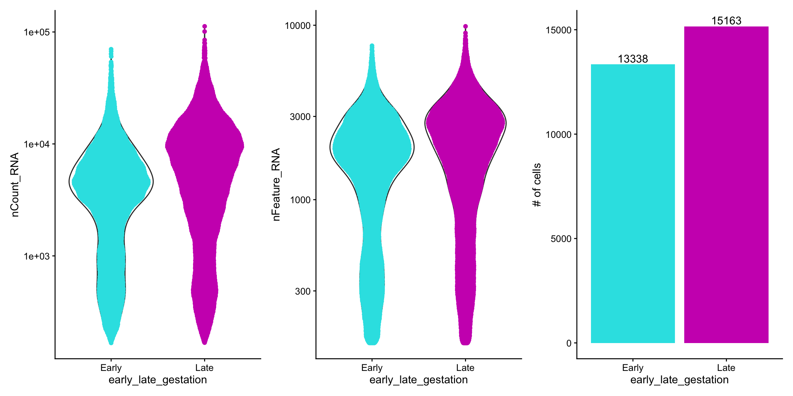
| Version | Author | Date |
|---|---|---|
| 1f4af33 | Calandra Grima | 2026-08-04 |
DimPlot(seu_int.Gerli, reduction = 'umap', group.by = "early_late_gestation") +
scale_color_manual(values = ALL_GEST_COLOURS)Warning: `aes_string()` was deprecated in ggplot2 3.0.0.
ℹ Please use tidy evaluation idioms with `aes()`.
ℹ See also `vignette("ggplot2-in-packages")` for more information.
ℹ The deprecated feature was likely used in the Seurat package.
Please report the issue at <https://github.com/satijalab/seurat/issues>.
This warning is displayed once per session.
Call `lifecycle::last_lifecycle_warnings()` to see where this warning was
generated.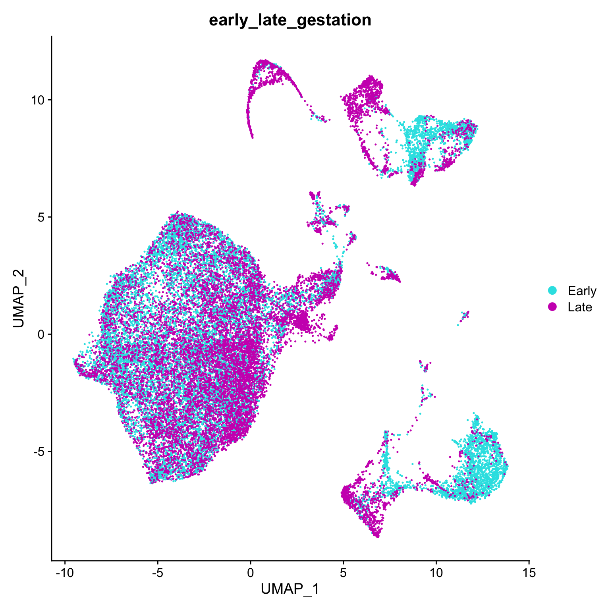
| Version | Author | Date |
|---|---|---|
| 1f4af33 | Calandra Grima | 2026-08-04 |
p1 <- seu_int.Gerli@meta.data %>%
ggplot(aes(x = factor(early_late_gestation), fill = Donor)) +
geom_bar() +
theme_cowplot(12) +
scale_fill_manual(values = ALL_DONORS_COLOURS) +
no_legend +
ggtitle("Donor vs Gestational Age Group (Count)") +
xlab("Gestational age group") +
ylab("# of cells")
p2 <- seu_int.Gerli@meta.data %>%
ggplot(aes(x = factor(early_late_gestation), fill = Donor)) +
geom_bar(position = "fill") +
theme_cowplot(12) +
scale_fill_manual(values = ALL_DONORS_COLOURS[levels(seu_int.Gerli$Donor)]) +
ggtitle("Donor vs Gestational Age Group (Proportion)") +
xlab("Gestational age group") +
ylab("Proportion")
p1 + p2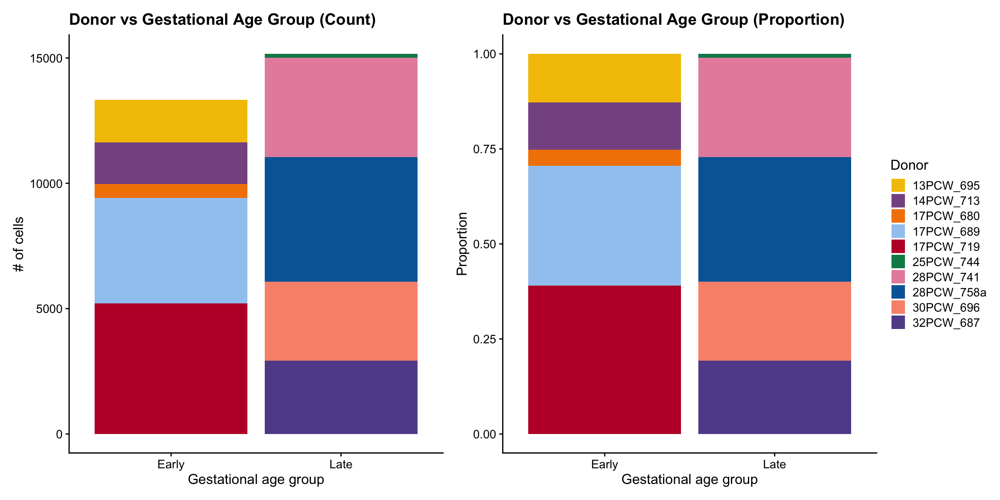
| Version | Author | Date |
|---|---|---|
| 1f4af33 | Calandra Grima | 2026-08-04 |
pseudobulk.Donor <- AggregateExpression(seu_int.Gerli,
assays = "RNA",
slot = "counts",
return.seurat = F,
group.by = c("Donor"))
pseudobulk.Donor <- DGEList(pseudobulk.Donor$RNA,
samples=as.character(colnames(pseudobulk.Donor[["RNA"]])))
pseudobulk.DonorAn object of class "DGEList"
$counts
13PCW_695 14PCW_713 17PCW_680 17PCW_689 17PCW_719 25PCW_744
MIR1302-2HG 0 0 0 0 0 0
FAM138A 0 0 0 0 0 0
OR4F5 0 0 0 0 0 0
OR4F29 0 0 0 0 0 0
OR4F16 0 0 0 0 0 0
28PCW_741 28PCW_758a 30PCW_696 32PCW_687
MIR1302-2HG 0 0 0 0
FAM138A 0 0 0 0
OR4F5 0 0 0 0
OR4F29 0 0 0 0
OR4F16 0 0 0 0
23156 more rows ...
$samples
group lib.size norm.factors samples
13PCW_695 1 8965497 1 13PCW_695
14PCW_713 1 8052909 1 14PCW_713
17PCW_680 1 2519111 1 17PCW_680
17PCW_689 1 25226144 1 17PCW_689
17PCW_719 1 20185518 1 17PCW_719
25PCW_744 1 284844 1 25PCW_744
28PCW_741 1 26161381 1 28PCW_741
28PCW_758a 1 49038339 1 28PCW_758a
30PCW_696 1 16227107 1 30PCW_696
32PCW_687 1 31079788 1 32PCW_687pseudobulk.Donor <- calcNormFactors(pseudobulk.Donor)
pseudobulk.Donor$samples group lib.size norm.factors samples
13PCW_695 1 8965497 0.9376665 13PCW_695
14PCW_713 1 8052909 1.3104750 14PCW_713
17PCW_680 1 2519111 0.9977156 17PCW_680
17PCW_689 1 25226144 1.1357790 17PCW_689
17PCW_719 1 20185518 0.9527524 17PCW_719
25PCW_744 1 284844 1.1396332 25PCW_744
28PCW_741 1 26161381 0.8669221 28PCW_741
28PCW_758a 1 49038339 0.8762700 28PCW_758a
30PCW_696 1 16227107 0.9820835 30PCW_696
32PCW_687 1 31079788 0.8865653 32PCW_687pseudobulk.refined_clusters <- AggregateExpression(seu_int.Gerli,
assays = "RNA",
slot = "counts",
return.seurat = F,
group.by = c("Donor", "cluster_names"))
pseudobulk.refined_clusters <- DGEList(pseudobulk.refined_clusters$RNA,
samples=as.character(colnames(pseudobulk.refined_clusters[["RNA"]])))
pseudobulk.refined_clustersAn object of class "DGEList"
$counts
13PCW_695_Keratinocytes
MIR1302-2HG 0
FAM138A 0
OR4F5 0
OR4F29 0
OR4F16 0
13PCW_695_Squamous/keratinocyte-like epithelium
MIR1302-2HG 0
FAM138A 0
OR4F5 0
OR4F29 0
OR4F16 0
13PCW_695_Neutrophils 13PCW_695_T cells 13PCW_695_Macrophages
MIR1302-2HG 0 0 0
FAM138A 0 0 0
OR4F5 0 0 0
OR4F29 0 0 0
OR4F16 0 0 0
13PCW_695_ILC3 13PCW_695_Classical monocytes
MIR1302-2HG 0 0
FAM138A 0 0
OR4F5 0 0
OR4F29 0 0
OR4F16 0 0
13PCW_695_Dendritic cells 13PCW_695_Basophils
MIR1302-2HG 0 0
FAM138A 0 0
OR4F5 0 0
OR4F29 0 0
OR4F16 0 0
13PCW_695_Multiciliated epithelial cells
MIR1302-2HG 0
FAM138A 0
OR4F5 0
OR4F29 0
OR4F16 0
13PCW_695_Kidney epithelium
MIR1302-2HG 0
FAM138A 0
OR4F5 0
OR4F29 0
OR4F16 0
13PCW_695_Erythroid progenitors (proliferating)
MIR1302-2HG 0
FAM138A 0
OR4F5 0
OR4F29 0
OR4F16 0
13PCW_695_Fibroblasts / stromal cells 13PCW_695_Lung epithelium
MIR1302-2HG 0 0
FAM138A 0 0
OR4F5 0 0
OR4F29 0 0
OR4F16 0 0
13PCW_695_B cells 14PCW_713_Keratinocytes
MIR1302-2HG 0 0
FAM138A 0 0
OR4F5 0 0
OR4F29 0 0
OR4F16 0 0
14PCW_713_Squamous/keratinocyte-like epithelium
MIR1302-2HG 0
FAM138A 0
OR4F5 0
OR4F29 0
OR4F16 0
14PCW_713_Neutrophils 14PCW_713_T cells 14PCW_713_Macrophages
MIR1302-2HG 0 0 0
FAM138A 0 0 0
OR4F5 0 0 0
OR4F29 0 0 0
OR4F16 0 0 0
14PCW_713_Mast cells 14PCW_713_Erythroid 14PCW_713_ILC3
MIR1302-2HG 0 0 0
FAM138A 0 0 0
OR4F5 0 0 0
OR4F29 0 0 0
OR4F16 0 0 0
14PCW_713_Classical monocytes
MIR1302-2HG 0
FAM138A 0
OR4F5 0
OR4F29 0
OR4F16 0
14PCW_713_NK cells / cytotoxic lymphocytes
MIR1302-2HG 0
FAM138A 0
OR4F5 0
OR4F29 0
OR4F16 0
14PCW_713_Dendritic cells 14PCW_713_Basophils
MIR1302-2HG 0 0
FAM138A 0 0
OR4F5 0 0
OR4F29 0 0
OR4F16 0 0
14PCW_713_Multiciliated epithelial cells
MIR1302-2HG 0
FAM138A 0
OR4F5 0
OR4F29 0
OR4F16 0
14PCW_713_Kidney epithelium
MIR1302-2HG 0
FAM138A 0
OR4F5 0
OR4F29 0
OR4F16 0
14PCW_713_Erythroid progenitors (proliferating)
MIR1302-2HG 0
FAM138A 0
OR4F5 0
OR4F29 0
OR4F16 0
14PCW_713_Fibroblasts / stromal cells 14PCW_713_Lung epithelium
MIR1302-2HG 0 0
FAM138A 0 0
OR4F5 0 0
OR4F29 0 0
OR4F16 0 0
17PCW_680_Keratinocytes
MIR1302-2HG 0
FAM138A 0
OR4F5 0
OR4F29 0
OR4F16 0
17PCW_680_Squamous/keratinocyte-like epithelium
MIR1302-2HG 0
FAM138A 0
OR4F5 0
OR4F29 0
OR4F16 0
17PCW_680_Neutrophils 17PCW_680_T cells 17PCW_680_Macrophages
MIR1302-2HG 0 0 0
FAM138A 0 0 0
OR4F5 0 0 0
OR4F29 0 0 0
OR4F16 0 0 0
17PCW_680_ILC3 17PCW_680_Dendritic cells 17PCW_680_Basophils
MIR1302-2HG 0 0 0
FAM138A 0 0 0
OR4F5 0 0 0
OR4F29 0 0 0
OR4F16 0 0 0
17PCW_680_Multiciliated epithelial cells
MIR1302-2HG 0
FAM138A 0
OR4F5 0
OR4F29 0
OR4F16 0
17PCW_680_Kidney epithelium 17PCW_680_Fibroblasts / stromal cells
MIR1302-2HG 0 0
FAM138A 0 0
OR4F5 0 0
OR4F29 0 0
OR4F16 0 0
17PCW_680_Lung epithelium 17PCW_680_B cells 17PCW_689_Keratinocytes
MIR1302-2HG 0 0 0
FAM138A 0 0 0
OR4F5 0 0 0
OR4F29 0 0 0
OR4F16 0 0 0
17PCW_689_Squamous/keratinocyte-like epithelium
MIR1302-2HG 0
FAM138A 0
OR4F5 0
OR4F29 0
OR4F16 0
17PCW_689_Neutrophils 17PCW_689_T cells 17PCW_689_Macrophages
MIR1302-2HG 0 0 0
FAM138A 0 0 0
OR4F5 0 0 0
OR4F29 0 0 0
OR4F16 0 0 0
17PCW_689_Mast cells 17PCW_689_Erythroid 17PCW_689_ILC3
MIR1302-2HG 0 0 0
FAM138A 0 0 0
OR4F5 0 0 0
OR4F29 0 0 0
OR4F16 0 0 0
17PCW_689_Classical monocytes
MIR1302-2HG 0
FAM138A 0
OR4F5 0
OR4F29 0
OR4F16 0
17PCW_689_NK cells / cytotoxic lymphocytes
MIR1302-2HG 0
FAM138A 0
OR4F5 0
OR4F29 0
OR4F16 0
17PCW_689_Dendritic cells 17PCW_689_Basophils
MIR1302-2HG 0 0
FAM138A 0 0
OR4F5 0 0
OR4F29 0 0
OR4F16 0 0
17PCW_689_Multiciliated epithelial cells
MIR1302-2HG 0
FAM138A 0
OR4F5 0
OR4F29 0
OR4F16 0
17PCW_689_Kidney epithelium
MIR1302-2HG 0
FAM138A 0
OR4F5 0
OR4F29 0
OR4F16 0
17PCW_689_Erythroid progenitors (proliferating)
MIR1302-2HG 0
FAM138A 0
OR4F5 0
OR4F29 0
OR4F16 0
17PCW_689_Immature granulocytes (promyelocytes)
MIR1302-2HG 0
FAM138A 0
OR4F5 0
OR4F29 0
OR4F16 0
17PCW_689_Fibroblasts / stromal cells 17PCW_689_B cells
MIR1302-2HG 0 0
FAM138A 0 0
OR4F5 0 0
OR4F29 0 0
OR4F16 0 0
17PCW_689_Mast cells (cycling) 17PCW_719_Keratinocytes
MIR1302-2HG 0 0
FAM138A 0 0
OR4F5 0 0
OR4F29 0 0
OR4F16 0 0
17PCW_719_Squamous/keratinocyte-like epithelium
MIR1302-2HG 0
FAM138A 0
OR4F5 0
OR4F29 0
OR4F16 0
17PCW_719_Neutrophils 17PCW_719_T cells 17PCW_719_Macrophages
MIR1302-2HG 0 0 0
FAM138A 0 0 0
OR4F5 0 0 0
OR4F29 0 0 0
OR4F16 0 0 0
17PCW_719_Mast cells 17PCW_719_Erythroid 17PCW_719_ILC3
MIR1302-2HG 0 0 0
FAM138A 0 0 0
OR4F5 0 0 0
OR4F29 0 0 0
OR4F16 0 0 0
17PCW_719_Classical monocytes
MIR1302-2HG 0
FAM138A 0
OR4F5 0
OR4F29 0
OR4F16 0
17PCW_719_NK cells / cytotoxic lymphocytes
MIR1302-2HG 0
FAM138A 0
OR4F5 0
OR4F29 0
OR4F16 0
17PCW_719_Dendritic cells 17PCW_719_Basophils
MIR1302-2HG 0 0
FAM138A 0 0
OR4F5 0 0
OR4F29 0 0
OR4F16 0 0
17PCW_719_Multiciliated epithelial cells
MIR1302-2HG 0
FAM138A 0
OR4F5 0
OR4F29 0
OR4F16 0
17PCW_719_Kidney epithelium
MIR1302-2HG 0
FAM138A 0
OR4F5 0
OR4F29 0
OR4F16 0
17PCW_719_Erythroid progenitors (proliferating)
MIR1302-2HG 0
FAM138A 0
OR4F5 0
OR4F29 0
OR4F16 0
17PCW_719_Immature granulocytes (promyelocytes)
MIR1302-2HG 0
FAM138A 0
OR4F5 0
OR4F29 0
OR4F16 0
17PCW_719_Fibroblasts / stromal cells 17PCW_719_Lung epithelium
MIR1302-2HG 0 0
FAM138A 0 0
OR4F5 0 0
OR4F29 0 0
OR4F16 0 0
17PCW_719_B cells 25PCW_744_Keratinocytes
MIR1302-2HG 0 0
FAM138A 0 0
OR4F5 0 0
OR4F29 0 0
OR4F16 0 0
25PCW_744_Squamous/keratinocyte-like epithelium
MIR1302-2HG 0
FAM138A 0
OR4F5 0
OR4F29 0
OR4F16 0
25PCW_744_Macrophages 25PCW_744_Multiciliated epithelial cells
MIR1302-2HG 0 0
FAM138A 0 0
OR4F5 0 0
OR4F29 0 0
OR4F16 0 0
25PCW_744_Fibroblasts / stromal cells 28PCW_741_Keratinocytes
MIR1302-2HG 0 0
FAM138A 0 0
OR4F5 0 0
OR4F29 0 0
OR4F16 0 0
28PCW_741_Squamous/keratinocyte-like epithelium
MIR1302-2HG 0
FAM138A 0
OR4F5 0
OR4F29 0
OR4F16 0
28PCW_741_Neutrophils 28PCW_741_T cells 28PCW_741_Macrophages
MIR1302-2HG 0 0 0
FAM138A 0 0 0
OR4F5 0 0 0
OR4F29 0 0 0
OR4F16 0 0 0
28PCW_741_Mast cells 28PCW_741_Erythroid 28PCW_741_ILC3
MIR1302-2HG 0 0 0
FAM138A 0 0 0
OR4F5 0 0 0
OR4F29 0 0 0
OR4F16 0 0 0
28PCW_741_Classical monocytes
MIR1302-2HG 0
FAM138A 0
OR4F5 0
OR4F29 0
OR4F16 0
28PCW_741_NK cells / cytotoxic lymphocytes
MIR1302-2HG 0
FAM138A 0
OR4F5 0
OR4F29 0
OR4F16 0
28PCW_741_Dendritic cells 28PCW_741_Basophils
MIR1302-2HG 0 0
FAM138A 0 0
OR4F5 0 0
OR4F29 0 0
OR4F16 0 0
28PCW_741_Multiciliated epithelial cells
MIR1302-2HG 0
FAM138A 0
OR4F5 0
OR4F29 0
OR4F16 0
28PCW_741_Kidney epithelium
MIR1302-2HG 0
FAM138A 0
OR4F5 0
OR4F29 0
OR4F16 0
28PCW_741_Erythroid progenitors (proliferating)
MIR1302-2HG 0
FAM138A 0
OR4F5 0
OR4F29 0
OR4F16 0
28PCW_741_Immature granulocytes (promyelocytes)
MIR1302-2HG 0
FAM138A 0
OR4F5 0
OR4F29 0
OR4F16 0
28PCW_741_Fibroblasts / stromal cells 28PCW_741_Lung epithelium
MIR1302-2HG 0 0
FAM138A 0 0
OR4F5 0 0
OR4F29 0 0
OR4F16 0 0
28PCW_758a_Keratinocytes
MIR1302-2HG 0
FAM138A 0
OR4F5 0
OR4F29 0
OR4F16 0
28PCW_758a_Squamous/keratinocyte-like epithelium
MIR1302-2HG 0
FAM138A 0
OR4F5 0
OR4F29 0
OR4F16 0
28PCW_758a_Neutrophils 28PCW_758a_T cells 28PCW_758a_Macrophages
MIR1302-2HG 0 0 0
FAM138A 0 0 0
OR4F5 0 0 0
OR4F29 0 0 0
OR4F16 0 0 0
28PCW_758a_Mast cells 28PCW_758a_Erythroid 28PCW_758a_ILC3
MIR1302-2HG 0 0 0
FAM138A 0 0 0
OR4F5 0 0 0
OR4F29 0 0 0
OR4F16 0 0 0
28PCW_758a_Classical monocytes
MIR1302-2HG 0
FAM138A 0
OR4F5 0
OR4F29 0
OR4F16 0
28PCW_758a_NK cells / cytotoxic lymphocytes
MIR1302-2HG 0
FAM138A 0
OR4F5 0
OR4F29 0
OR4F16 0
28PCW_758a_Dendritic cells 28PCW_758a_Basophils
MIR1302-2HG 0 0
FAM138A 0 0
OR4F5 0 0
OR4F29 0 0
OR4F16 0 0
28PCW_758a_Multiciliated epithelial cells
MIR1302-2HG 0
FAM138A 0
OR4F5 0
OR4F29 0
OR4F16 0
28PCW_758a_Kidney epithelium
MIR1302-2HG 0
FAM138A 0
OR4F5 0
OR4F29 0
OR4F16 0
28PCW_758a_Erythroid progenitors (proliferating)
MIR1302-2HG 0
FAM138A 0
OR4F5 0
OR4F29 0
OR4F16 0
28PCW_758a_Immature granulocytes (promyelocytes)
MIR1302-2HG 0
FAM138A 0
OR4F5 0
OR4F29 0
OR4F16 0
28PCW_758a_Fibroblasts / stromal cells 28PCW_758a_Lung epithelium
MIR1302-2HG 0 0
FAM138A 0 0
OR4F5 0 0
OR4F29 0 0
OR4F16 0 0
28PCW_758a_B cells 28PCW_758a_Epithelial cells
MIR1302-2HG 0 0
FAM138A 0 0
OR4F5 0 0
OR4F29 0 0
OR4F16 0 0
28PCW_758a_Mast cells (cycling) 30PCW_696_Keratinocytes
MIR1302-2HG 0 0
FAM138A 0 0
OR4F5 0 0
OR4F29 0 0
OR4F16 0 0
30PCW_696_Squamous/keratinocyte-like epithelium
MIR1302-2HG 0
FAM138A 0
OR4F5 0
OR4F29 0
OR4F16 0
30PCW_696_Neutrophils 30PCW_696_T cells 30PCW_696_Macrophages
MIR1302-2HG 0 0 0
FAM138A 0 0 0
OR4F5 0 0 0
OR4F29 0 0 0
OR4F16 0 0 0
30PCW_696_Mast cells 30PCW_696_ILC3 30PCW_696_Classical monocytes
MIR1302-2HG 0 0 0
FAM138A 0 0 0
OR4F5 0 0 0
OR4F29 0 0 0
OR4F16 0 0 0
30PCW_696_Dendritic cells 30PCW_696_Basophils
MIR1302-2HG 0 0
FAM138A 0 0
OR4F5 0 0
OR4F29 0 0
OR4F16 0 0
30PCW_696_Multiciliated epithelial cells
MIR1302-2HG 0
FAM138A 0
OR4F5 0
OR4F29 0
OR4F16 0
30PCW_696_Kidney epithelium
MIR1302-2HG 0
FAM138A 0
OR4F5 0
OR4F29 0
OR4F16 0
30PCW_696_Erythroid progenitors (proliferating)
MIR1302-2HG 0
FAM138A 0
OR4F5 0
OR4F29 0
OR4F16 0
30PCW_696_Fibroblasts / stromal cells 30PCW_696_Lung epithelium
MIR1302-2HG 0 0
FAM138A 0 0
OR4F5 0 0
OR4F29 0 0
OR4F16 0 0
30PCW_696_B cells 32PCW_687_Keratinocytes
MIR1302-2HG 0 0
FAM138A 0 0
OR4F5 0 0
OR4F29 0 0
OR4F16 0 0
32PCW_687_Squamous/keratinocyte-like epithelium
MIR1302-2HG 0
FAM138A 0
OR4F5 0
OR4F29 0
OR4F16 0
32PCW_687_Neutrophils 32PCW_687_T cells 32PCW_687_Macrophages
MIR1302-2HG 0 0 0
FAM138A 0 0 0
OR4F5 0 0 0
OR4F29 0 0 0
OR4F16 0 0 0
32PCW_687_ILC3 32PCW_687_Classical monocytes
MIR1302-2HG 0 0
FAM138A 0 0
OR4F5 0 0
OR4F29 0 0
OR4F16 0 0
32PCW_687_NK cells / cytotoxic lymphocytes
MIR1302-2HG 0
FAM138A 0
OR4F5 0
OR4F29 0
OR4F16 0
32PCW_687_Dendritic cells 32PCW_687_Multiciliated epithelial cells
MIR1302-2HG 0 0
FAM138A 0 0
OR4F5 0 0
OR4F29 0 0
OR4F16 0 0
32PCW_687_Kidney epithelium 32PCW_687_Fibroblasts / stromal cells
MIR1302-2HG 0 0
FAM138A 0 0
OR4F5 0 0
OR4F29 0 0
OR4F16 0 0
32PCW_687_Lung epithelium 32PCW_687_B cells
MIR1302-2HG 0 0
FAM138A 0 0
OR4F5 0 0
OR4F29 0 0
OR4F16 0 0
23156 more rows ...
$samples
group lib.size norm.factors
13PCW_695_Keratinocytes 1 8300891 1
13PCW_695_Squamous/keratinocyte-like epithelium 1 121815 1
13PCW_695_Neutrophils 1 2195 1
13PCW_695_T cells 1 13493 1
13PCW_695_Macrophages 1 94832 1
samples
13PCW_695_Keratinocytes 13PCW_695_Keratinocytes
13PCW_695_Squamous/keratinocyte-like epithelium 13PCW_695_Squamous/keratinocyte-like epithelium
13PCW_695_Neutrophils 13PCW_695_Neutrophils
13PCW_695_T cells 13PCW_695_T cells
13PCW_695_Macrophages 13PCW_695_Macrophages
152 more rows ...pseudobulk.refined_clusters <- calcNormFactors(pseudobulk.refined_clusters)
pseudobulk.refined_clusters$samples group lib.size norm.factors
13PCW_695_Keratinocytes 1 8300891 0.47420138
13PCW_695_Squamous/keratinocyte-like epithelium 1 121815 0.73359918
13PCW_695_Neutrophils 1 2195 3.74912866
13PCW_695_T cells 1 13493 1.79128422
13PCW_695_Macrophages 1 94832 0.70328091
13PCW_695_ILC3 1 4117 3.08055758
13PCW_695_Classical monocytes 1 9632 1.63558215
13PCW_695_Dendritic cells 1 76458 0.81658575
13PCW_695_Basophils 1 3494 3.20203365
13PCW_695_Multiciliated epithelial cells 1 239469 0.71438099
13PCW_695_Kidney epithelium 1 12965 1.70518663
13PCW_695_Erythroid progenitors (proliferating) 1 4849 2.80766601
13PCW_695_Fibroblasts / stromal cells 1 28804 1.12043246
13PCW_695_Lung epithelium 1 24590 1.23711566
13PCW_695_B cells 1 27893 1.20845110
14PCW_713_Keratinocytes 1 6107509 0.61915233
14PCW_713_Squamous/keratinocyte-like epithelium 1 85092 0.90232528
14PCW_713_Neutrophils 1 36501 0.93552074
14PCW_713_T cells 1 188414 0.95693684
14PCW_713_Macrophages 1 206445 0.67819533
14PCW_713_Mast cells 1 53156 1.00231809
14PCW_713_Erythroid 1 286158 0.16638097
14PCW_713_ILC3 1 225980 0.87733350
14PCW_713_Classical monocytes 1 135575 0.80529175
14PCW_713_NK cells / cytotoxic lymphocytes 1 28293 1.34862058
14PCW_713_Dendritic cells 1 32556 0.96450256
14PCW_713_Basophils 1 8342 2.11920790
14PCW_713_Multiciliated epithelial cells 1 17182 1.44237999
14PCW_713_Kidney epithelium 1 194196 0.83830838
14PCW_713_Erythroid progenitors (proliferating) 1 217130 0.82948242
14PCW_713_Fibroblasts / stromal cells 1 224956 0.75247988
14PCW_713_Lung epithelium 1 5424 2.82122217
17PCW_680_Keratinocytes 1 2309322 0.52917801
17PCW_680_Squamous/keratinocyte-like epithelium 1 40823 0.99287032
17PCW_680_Neutrophils 1 2309 3.61977963
17PCW_680_T cells 1 1146 6.87832322
17PCW_680_Macrophages 1 18562 1.31375930
17PCW_680_ILC3 1 6331 2.53672727
17PCW_680_Dendritic cells 1 9929 1.58553231
17PCW_680_Basophils 1 335 21.75135421
17PCW_680_Multiciliated epithelial cells 1 7469 2.01416288
17PCW_680_Kidney epithelium 1 23074 1.35469787
17PCW_680_Fibroblasts / stromal cells 1 52078 0.95211001
17PCW_680_Lung epithelium 1 38353 1.12115329
17PCW_680_B cells 1 9380 1.98853763
17PCW_689_Keratinocytes 1 18481981 0.44698095
17PCW_689_Squamous/keratinocyte-like epithelium 1 125898 0.82826203
17PCW_689_Neutrophils 1 357029 0.37475641
17PCW_689_T cells 1 1713297 0.76293909
17PCW_689_Macrophages 1 166994 0.71478368
17PCW_689_Mast cells 1 87549 1.00109427
17PCW_689_Erythroid 1 363172 0.12622285
17PCW_689_ILC3 1 1480086 0.87458323
17PCW_689_Classical monocytes 1 269349 0.62870516
17PCW_689_NK cells / cytotoxic lymphocytes 1 912586 0.87717592
17PCW_689_Dendritic cells 1 256759 0.70782935
17PCW_689_Basophils 1 26657 1.37942806
17PCW_689_Multiciliated epithelial cells 1 411234 0.71685552
17PCW_689_Kidney epithelium 1 62928 0.95864068
17PCW_689_Erythroid progenitors (proliferating) 1 163903 0.96113599
17PCW_689_Immature granulocytes (promyelocytes) 1 176716 0.83805681
17PCW_689_Fibroblasts / stromal cells 1 73528 0.86210211
17PCW_689_B cells 1 58717 0.99656906
17PCW_689_Mast cells (cycling) 1 37761 1.16576038
17PCW_719_Keratinocytes 1 17462732 0.46007129
17PCW_719_Squamous/keratinocyte-like epithelium 1 211931 0.74887490
17PCW_719_Neutrophils 1 675308 0.33814746
17PCW_719_T cells 1 130463 0.86797389
17PCW_719_Macrophages 1 423497 0.59749869
17PCW_719_Mast cells 1 47874 1.04749571
17PCW_719_Erythroid 1 72305 0.27523783
17PCW_719_ILC3 1 62478 1.03051596
17PCW_719_Classical monocytes 1 411801 0.58569351
17PCW_719_NK cells / cytotoxic lymphocytes 1 30845 1.16472000
17PCW_719_Dendritic cells 1 447442 0.59966327
17PCW_719_Basophils 1 3327 3.12400947
17PCW_719_Multiciliated epithelial cells 1 85172 0.80791806
17PCW_719_Kidney epithelium 1 14904 1.59794954
17PCW_719_Erythroid progenitors (proliferating) 1 12910 1.66726146
17PCW_719_Immature granulocytes (promyelocytes) 1 31872 0.93630515
17PCW_719_Fibroblasts / stromal cells 1 52419 0.89988464
17PCW_719_Lung epithelium 1 4021 3.39921610
17PCW_719_B cells 1 4217 2.73545322
25PCW_744_Keratinocytes 1 273098 0.67653735
25PCW_744_Squamous/keratinocyte-like epithelium 1 313 27.03088327
25PCW_744_Macrophages 1 9504 1.52667142
25PCW_744_Multiciliated epithelial cells 1 363 55.39374295
25PCW_744_Fibroblasts / stromal cells 1 1566 6.13683034
28PCW_741_Keratinocytes 1 17378266 0.46605560
28PCW_741_Squamous/keratinocyte-like epithelium 1 244201 0.68220538
28PCW_741_Neutrophils 1 13784 1.41575860
28PCW_741_T cells 1 356172 0.87652951
28PCW_741_Macrophages 1 210020 0.68180056
28PCW_741_Mast cells 1 1432668 0.73857422
28PCW_741_Erythroid 1 5526940 0.03380860
28PCW_741_ILC3 1 3012 4.85327870
28PCW_741_Classical monocytes 1 130123 0.71702280
28PCW_741_NK cells / cytotoxic lymphocytes 1 10769 1.68845483
28PCW_741_Dendritic cells 1 34673 0.96467516
28PCW_741_Basophils 1 147102 0.98581968
28PCW_741_Multiciliated epithelial cells 1 201570 0.82974309
28PCW_741_Kidney epithelium 1 25777 1.22115895
28PCW_741_Erythroid progenitors (proliferating) 1 71510 0.94785231
28PCW_741_Immature granulocytes (promyelocytes) 1 7642 2.08908654
28PCW_741_Fibroblasts / stromal cells 1 321470 0.68975929
28PCW_741_Lung epithelium 1 45682 1.01098444
28PCW_758a_Keratinocytes 1 27583293 0.32508401
28PCW_758a_Squamous/keratinocyte-like epithelium 1 403231 0.52993766
28PCW_758a_Neutrophils 1 269794 0.55712983
28PCW_758a_T cells 1 116373 0.92380312
28PCW_758a_Macrophages 1 9986778 0.42168715
28PCW_758a_Mast cells 1 488475 0.69448889
28PCW_758a_Erythroid 1 1426443 0.05613909
28PCW_758a_ILC3 1 457095 0.78513364
28PCW_758a_Classical monocytes 1 905097 0.56162686
28PCW_758a_NK cells / cytotoxic lymphocytes 1 12247 1.68082394
28PCW_758a_Dendritic cells 1 252594 0.65380929
28PCW_758a_Basophils 1 34771 1.21403929
28PCW_758a_Multiciliated epithelial cells 1 2437068 0.58122184
28PCW_758a_Kidney epithelium 1 1410013 0.59906464
28PCW_758a_Erythroid progenitors (proliferating) 1 380295 0.74782974
28PCW_758a_Immature granulocytes (promyelocytes) 1 276175 0.66677178
28PCW_758a_Fibroblasts / stromal cells 1 482721 0.60574975
28PCW_758a_Lung epithelium 1 2021371 0.58962190
28PCW_758a_B cells 1 20859 1.29743877
28PCW_758a_Epithelial cells 1 58514 0.80692706
28PCW_758a_Mast cells (cycling) 1 15132 1.53605171
30PCW_696_Keratinocytes 1 14528686 0.45813204
30PCW_696_Squamous/keratinocyte-like epithelium 1 201028 0.73266340
30PCW_696_Neutrophils 1 9501 1.71498752
30PCW_696_T cells 1 37617 1.24409185
30PCW_696_Macrophages 1 250468 0.72489358
30PCW_696_Mast cells 1 15031 1.60249038
30PCW_696_ILC3 1 30364 1.25544230
30PCW_696_Classical monocytes 1 43903 0.85929100
30PCW_696_Dendritic cells 1 97895 0.75456307
30PCW_696_Basophils 1 12627 1.72686426
30PCW_696_Multiciliated epithelial cells 1 519017 0.79109608
30PCW_696_Kidney epithelium 1 56683 1.01689537
30PCW_696_Erythroid progenitors (proliferating) 1 28564 1.32482107
30PCW_696_Fibroblasts / stromal cells 1 205014 0.73696123
30PCW_696_Lung epithelium 1 94170 0.86403975
30PCW_696_B cells 1 96539 1.03446255
32PCW_687_Keratinocytes 1 28320813 0.40158372
32PCW_687_Squamous/keratinocyte-like epithelium 1 210230 0.72508262
32PCW_687_Neutrophils 1 68496 0.78914805
32PCW_687_T cells 1 141294 0.94544418
32PCW_687_Macrophages 1 789153 0.61875801
32PCW_687_ILC3 1 116324 1.00296358
32PCW_687_Classical monocytes 1 136945 0.72585299
32PCW_687_NK cells / cytotoxic lymphocytes 1 91336 0.94325711
32PCW_687_Dendritic cells 1 393937 0.57747458
32PCW_687_Multiciliated epithelial cells 1 296074 0.79955980
32PCW_687_Kidney epithelium 1 16575 1.44937099
32PCW_687_Fibroblasts / stromal cells 1 9359 2.26806727
32PCW_687_Lung epithelium 1 415456 0.76382071
32PCW_687_B cells 1 73796 1.09169989
samples
13PCW_695_Keratinocytes 13PCW_695_Keratinocytes
13PCW_695_Squamous/keratinocyte-like epithelium 13PCW_695_Squamous/keratinocyte-like epithelium
13PCW_695_Neutrophils 13PCW_695_Neutrophils
13PCW_695_T cells 13PCW_695_T cells
13PCW_695_Macrophages 13PCW_695_Macrophages
13PCW_695_ILC3 13PCW_695_ILC3
13PCW_695_Classical monocytes 13PCW_695_Classical monocytes
13PCW_695_Dendritic cells 13PCW_695_Dendritic cells
13PCW_695_Basophils 13PCW_695_Basophils
13PCW_695_Multiciliated epithelial cells 13PCW_695_Multiciliated epithelial cells
13PCW_695_Kidney epithelium 13PCW_695_Kidney epithelium
13PCW_695_Erythroid progenitors (proliferating) 13PCW_695_Erythroid progenitors (proliferating)
13PCW_695_Fibroblasts / stromal cells 13PCW_695_Fibroblasts / stromal cells
13PCW_695_Lung epithelium 13PCW_695_Lung epithelium
13PCW_695_B cells 13PCW_695_B cells
14PCW_713_Keratinocytes 14PCW_713_Keratinocytes
14PCW_713_Squamous/keratinocyte-like epithelium 14PCW_713_Squamous/keratinocyte-like epithelium
14PCW_713_Neutrophils 14PCW_713_Neutrophils
14PCW_713_T cells 14PCW_713_T cells
14PCW_713_Macrophages 14PCW_713_Macrophages
14PCW_713_Mast cells 14PCW_713_Mast cells
14PCW_713_Erythroid 14PCW_713_Erythroid
14PCW_713_ILC3 14PCW_713_ILC3
14PCW_713_Classical monocytes 14PCW_713_Classical monocytes
14PCW_713_NK cells / cytotoxic lymphocytes 14PCW_713_NK cells / cytotoxic lymphocytes
14PCW_713_Dendritic cells 14PCW_713_Dendritic cells
14PCW_713_Basophils 14PCW_713_Basophils
14PCW_713_Multiciliated epithelial cells 14PCW_713_Multiciliated epithelial cells
14PCW_713_Kidney epithelium 14PCW_713_Kidney epithelium
14PCW_713_Erythroid progenitors (proliferating) 14PCW_713_Erythroid progenitors (proliferating)
14PCW_713_Fibroblasts / stromal cells 14PCW_713_Fibroblasts / stromal cells
14PCW_713_Lung epithelium 14PCW_713_Lung epithelium
17PCW_680_Keratinocytes 17PCW_680_Keratinocytes
17PCW_680_Squamous/keratinocyte-like epithelium 17PCW_680_Squamous/keratinocyte-like epithelium
17PCW_680_Neutrophils 17PCW_680_Neutrophils
17PCW_680_T cells 17PCW_680_T cells
17PCW_680_Macrophages 17PCW_680_Macrophages
17PCW_680_ILC3 17PCW_680_ILC3
17PCW_680_Dendritic cells 17PCW_680_Dendritic cells
17PCW_680_Basophils 17PCW_680_Basophils
17PCW_680_Multiciliated epithelial cells 17PCW_680_Multiciliated epithelial cells
17PCW_680_Kidney epithelium 17PCW_680_Kidney epithelium
17PCW_680_Fibroblasts / stromal cells 17PCW_680_Fibroblasts / stromal cells
17PCW_680_Lung epithelium 17PCW_680_Lung epithelium
17PCW_680_B cells 17PCW_680_B cells
17PCW_689_Keratinocytes 17PCW_689_Keratinocytes
17PCW_689_Squamous/keratinocyte-like epithelium 17PCW_689_Squamous/keratinocyte-like epithelium
17PCW_689_Neutrophils 17PCW_689_Neutrophils
17PCW_689_T cells 17PCW_689_T cells
17PCW_689_Macrophages 17PCW_689_Macrophages
17PCW_689_Mast cells 17PCW_689_Mast cells
17PCW_689_Erythroid 17PCW_689_Erythroid
17PCW_689_ILC3 17PCW_689_ILC3
17PCW_689_Classical monocytes 17PCW_689_Classical monocytes
17PCW_689_NK cells / cytotoxic lymphocytes 17PCW_689_NK cells / cytotoxic lymphocytes
17PCW_689_Dendritic cells 17PCW_689_Dendritic cells
17PCW_689_Basophils 17PCW_689_Basophils
17PCW_689_Multiciliated epithelial cells 17PCW_689_Multiciliated epithelial cells
17PCW_689_Kidney epithelium 17PCW_689_Kidney epithelium
17PCW_689_Erythroid progenitors (proliferating) 17PCW_689_Erythroid progenitors (proliferating)
17PCW_689_Immature granulocytes (promyelocytes) 17PCW_689_Immature granulocytes (promyelocytes)
17PCW_689_Fibroblasts / stromal cells 17PCW_689_Fibroblasts / stromal cells
17PCW_689_B cells 17PCW_689_B cells
17PCW_689_Mast cells (cycling) 17PCW_689_Mast cells (cycling)
17PCW_719_Keratinocytes 17PCW_719_Keratinocytes
17PCW_719_Squamous/keratinocyte-like epithelium 17PCW_719_Squamous/keratinocyte-like epithelium
17PCW_719_Neutrophils 17PCW_719_Neutrophils
17PCW_719_T cells 17PCW_719_T cells
17PCW_719_Macrophages 17PCW_719_Macrophages
17PCW_719_Mast cells 17PCW_719_Mast cells
17PCW_719_Erythroid 17PCW_719_Erythroid
17PCW_719_ILC3 17PCW_719_ILC3
17PCW_719_Classical monocytes 17PCW_719_Classical monocytes
17PCW_719_NK cells / cytotoxic lymphocytes 17PCW_719_NK cells / cytotoxic lymphocytes
17PCW_719_Dendritic cells 17PCW_719_Dendritic cells
17PCW_719_Basophils 17PCW_719_Basophils
17PCW_719_Multiciliated epithelial cells 17PCW_719_Multiciliated epithelial cells
17PCW_719_Kidney epithelium 17PCW_719_Kidney epithelium
17PCW_719_Erythroid progenitors (proliferating) 17PCW_719_Erythroid progenitors (proliferating)
17PCW_719_Immature granulocytes (promyelocytes) 17PCW_719_Immature granulocytes (promyelocytes)
17PCW_719_Fibroblasts / stromal cells 17PCW_719_Fibroblasts / stromal cells
17PCW_719_Lung epithelium 17PCW_719_Lung epithelium
17PCW_719_B cells 17PCW_719_B cells
25PCW_744_Keratinocytes 25PCW_744_Keratinocytes
25PCW_744_Squamous/keratinocyte-like epithelium 25PCW_744_Squamous/keratinocyte-like epithelium
25PCW_744_Macrophages 25PCW_744_Macrophages
25PCW_744_Multiciliated epithelial cells 25PCW_744_Multiciliated epithelial cells
25PCW_744_Fibroblasts / stromal cells 25PCW_744_Fibroblasts / stromal cells
28PCW_741_Keratinocytes 28PCW_741_Keratinocytes
28PCW_741_Squamous/keratinocyte-like epithelium 28PCW_741_Squamous/keratinocyte-like epithelium
28PCW_741_Neutrophils 28PCW_741_Neutrophils
28PCW_741_T cells 28PCW_741_T cells
28PCW_741_Macrophages 28PCW_741_Macrophages
28PCW_741_Mast cells 28PCW_741_Mast cells
28PCW_741_Erythroid 28PCW_741_Erythroid
28PCW_741_ILC3 28PCW_741_ILC3
28PCW_741_Classical monocytes 28PCW_741_Classical monocytes
28PCW_741_NK cells / cytotoxic lymphocytes 28PCW_741_NK cells / cytotoxic lymphocytes
28PCW_741_Dendritic cells 28PCW_741_Dendritic cells
28PCW_741_Basophils 28PCW_741_Basophils
28PCW_741_Multiciliated epithelial cells 28PCW_741_Multiciliated epithelial cells
28PCW_741_Kidney epithelium 28PCW_741_Kidney epithelium
28PCW_741_Erythroid progenitors (proliferating) 28PCW_741_Erythroid progenitors (proliferating)
28PCW_741_Immature granulocytes (promyelocytes) 28PCW_741_Immature granulocytes (promyelocytes)
28PCW_741_Fibroblasts / stromal cells 28PCW_741_Fibroblasts / stromal cells
28PCW_741_Lung epithelium 28PCW_741_Lung epithelium
28PCW_758a_Keratinocytes 28PCW_758a_Keratinocytes
28PCW_758a_Squamous/keratinocyte-like epithelium 28PCW_758a_Squamous/keratinocyte-like epithelium
28PCW_758a_Neutrophils 28PCW_758a_Neutrophils
28PCW_758a_T cells 28PCW_758a_T cells
28PCW_758a_Macrophages 28PCW_758a_Macrophages
28PCW_758a_Mast cells 28PCW_758a_Mast cells
28PCW_758a_Erythroid 28PCW_758a_Erythroid
28PCW_758a_ILC3 28PCW_758a_ILC3
28PCW_758a_Classical monocytes 28PCW_758a_Classical monocytes
28PCW_758a_NK cells / cytotoxic lymphocytes 28PCW_758a_NK cells / cytotoxic lymphocytes
28PCW_758a_Dendritic cells 28PCW_758a_Dendritic cells
28PCW_758a_Basophils 28PCW_758a_Basophils
28PCW_758a_Multiciliated epithelial cells 28PCW_758a_Multiciliated epithelial cells
28PCW_758a_Kidney epithelium 28PCW_758a_Kidney epithelium
28PCW_758a_Erythroid progenitors (proliferating) 28PCW_758a_Erythroid progenitors (proliferating)
28PCW_758a_Immature granulocytes (promyelocytes) 28PCW_758a_Immature granulocytes (promyelocytes)
28PCW_758a_Fibroblasts / stromal cells 28PCW_758a_Fibroblasts / stromal cells
28PCW_758a_Lung epithelium 28PCW_758a_Lung epithelium
28PCW_758a_B cells 28PCW_758a_B cells
28PCW_758a_Epithelial cells 28PCW_758a_Epithelial cells
28PCW_758a_Mast cells (cycling) 28PCW_758a_Mast cells (cycling)
30PCW_696_Keratinocytes 30PCW_696_Keratinocytes
30PCW_696_Squamous/keratinocyte-like epithelium 30PCW_696_Squamous/keratinocyte-like epithelium
30PCW_696_Neutrophils 30PCW_696_Neutrophils
30PCW_696_T cells 30PCW_696_T cells
30PCW_696_Macrophages 30PCW_696_Macrophages
30PCW_696_Mast cells 30PCW_696_Mast cells
30PCW_696_ILC3 30PCW_696_ILC3
30PCW_696_Classical monocytes 30PCW_696_Classical monocytes
30PCW_696_Dendritic cells 30PCW_696_Dendritic cells
30PCW_696_Basophils 30PCW_696_Basophils
30PCW_696_Multiciliated epithelial cells 30PCW_696_Multiciliated epithelial cells
30PCW_696_Kidney epithelium 30PCW_696_Kidney epithelium
30PCW_696_Erythroid progenitors (proliferating) 30PCW_696_Erythroid progenitors (proliferating)
30PCW_696_Fibroblasts / stromal cells 30PCW_696_Fibroblasts / stromal cells
30PCW_696_Lung epithelium 30PCW_696_Lung epithelium
30PCW_696_B cells 30PCW_696_B cells
32PCW_687_Keratinocytes 32PCW_687_Keratinocytes
32PCW_687_Squamous/keratinocyte-like epithelium 32PCW_687_Squamous/keratinocyte-like epithelium
32PCW_687_Neutrophils 32PCW_687_Neutrophils
32PCW_687_T cells 32PCW_687_T cells
32PCW_687_Macrophages 32PCW_687_Macrophages
32PCW_687_ILC3 32PCW_687_ILC3
32PCW_687_Classical monocytes 32PCW_687_Classical monocytes
32PCW_687_NK cells / cytotoxic lymphocytes 32PCW_687_NK cells / cytotoxic lymphocytes
32PCW_687_Dendritic cells 32PCW_687_Dendritic cells
32PCW_687_Multiciliated epithelial cells 32PCW_687_Multiciliated epithelial cells
32PCW_687_Kidney epithelium 32PCW_687_Kidney epithelium
32PCW_687_Fibroblasts / stromal cells 32PCW_687_Fibroblasts / stromal cells
32PCW_687_Lung epithelium 32PCW_687_Lung epithelium
32PCW_687_B cells 32PCW_687_B cells# Generate metadata for plotting
meta.Donor <- seu_int.Gerli@meta.data %>% group_by(Donor) %>%
summarise(Donor = unique(Donor),
n_cells = n(),
gest_age_weeks = unique(gest_age_weeks),
early_late_gestation = unique(early_late_gestation),
foetal_sex = unique(foetal_sex),
cmv_status = unique(cmv_status),
Dataset = unique(Dataset))
meta.Donor <- as.data.frame(meta.Donor)
rownames(meta.Donor) <- paste(meta.Donor$Donor)
meta.Donor Donor n_cells gest_age_weeks early_late_gestation foetal_sex
13PCW_695 13PCW_695 1706 15 Early Male
14PCW_713 14PCW_713 1653 16 Early Female
17PCW_680 17PCW_680 569 19 Early Male
17PCW_689 17PCW_689 4205 19 Early Male
17PCW_719 17PCW_719 5205 19 Early Female
25PCW_744 25PCW_744 160 27 Late Male
28PCW_741 28PCW_741 3961 30 Late Female
28PCW_758a 28PCW_758a 4961 30 Late Male
30PCW_696 30PCW_696 3163 32 Late Male
32PCW_687 32PCW_687 2918 34 Late Male
cmv_status Dataset
13PCW_695 negative Batch5
14PCW_713 negative Batch6
17PCW_680 negative Batch4
17PCW_689 negative Batch2
17PCW_719 negative Batch7
25PCW_744 negative Batch12
28PCW_741 negative Batch10
28PCW_758a negative Batch13
30PCW_696 negative Batch3
32PCW_687 negative Batch1MDS.Donor <- calcMDS(pseudobulk.Donor, 5, "Donor")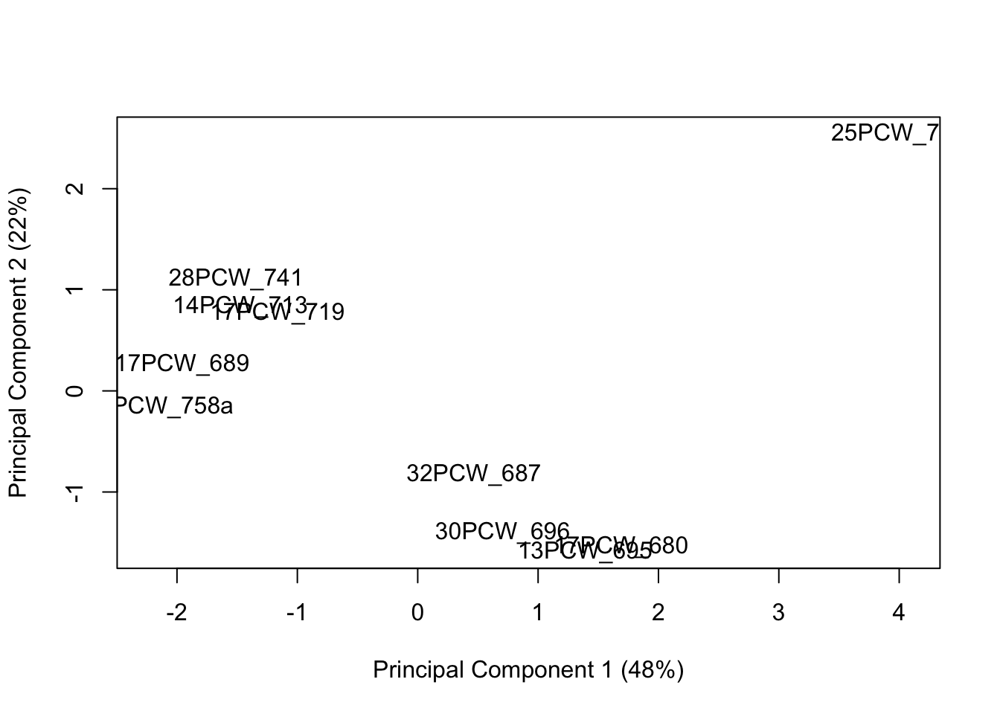
| Version | Author | Date |
|---|---|---|
| 1f4af33 | Calandra Grima | 2026-08-04 |
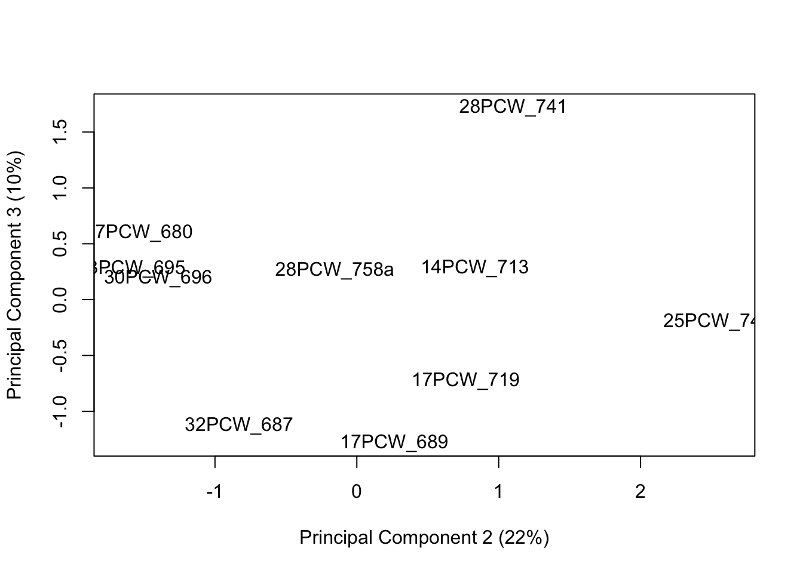
| Version | Author | Date |
|---|---|---|
| 1f4af33 | Calandra Grima | 2026-08-04 |
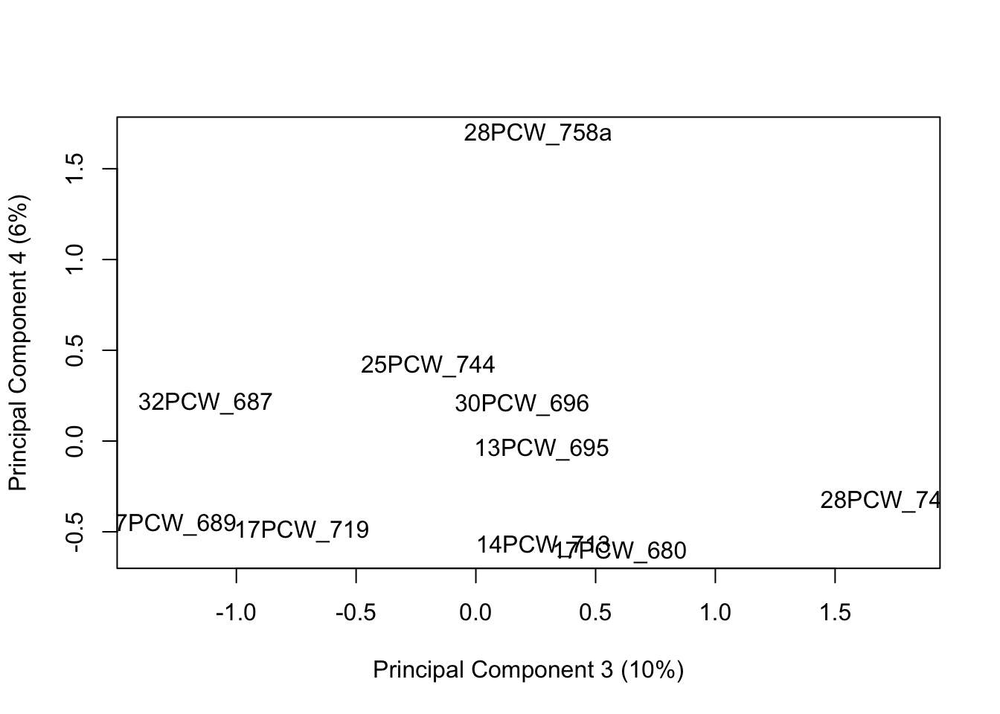
| Version | Author | Date |
|---|---|---|
| 1f4af33 | Calandra Grima | 2026-08-04 |
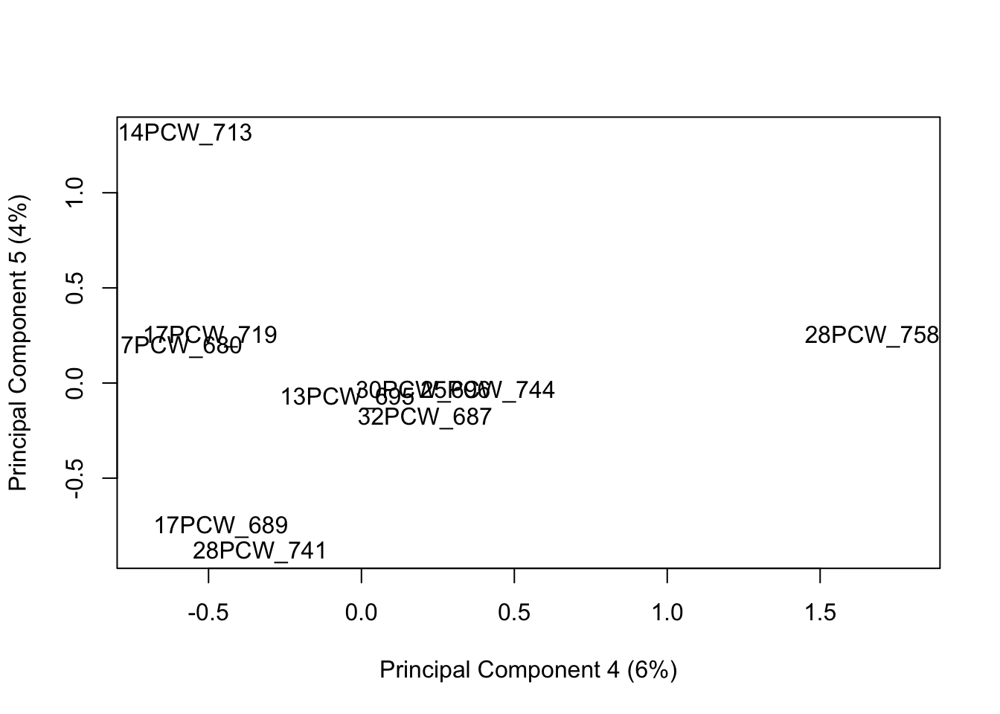
| Version | Author | Date |
|---|---|---|
| 1f4af33 | Calandra Grima | 2026-08-04 |
MDS.Donor <- MDS.Donor[meta.Donor$Donor,]
MDS.Donor <- cbind(MDS.Donor,
meta.Donor[, !(colnames(meta.Donor) %in% colnames(MDS.Donor))])
MDS.Donor Donor Dim_1 Dim_2 Dim_3 Dim_4 Dim_5
13PCW_695 13PCW_695 1.3901568 -1.5898821 0.2754075 -0.04613634 -0.08013892
14PCW_713 14PCW_713 -1.4726346 0.8324275 0.2826246 -0.57629208 1.30990123
17PCW_680 17PCW_680 1.6902470 -1.5380161 0.6004767 -0.60922992 0.19123420
17PCW_689 17PCW_689 -1.9580139 0.2645769 -1.2805923 -0.45982482 -0.75534670
17PCW_719 17PCW_719 -1.1661797 0.7676531 -0.7264900 -0.49519370 0.24622558
25PCW_744 25PCW_744 3.9956756 2.5430169 -0.1980816 0.41449046 -0.04279990
28PCW_741 28PCW_741 -1.5086945 1.1045773 1.7208083 -0.33094429 -0.88620241
28PCW_758a 28PCW_758a -2.1439624 -0.1543391 0.2604474 1.69233102 0.24460710
30PCW_696 30PCW_696 0.7064101 -1.3998751 0.1931435 0.20207313 -0.04173105
32PCW_687 32PCW_687 0.4669957 -0.8301391 -1.1277441 0.20872654 -0.18574913
n_cells gest_age_weeks early_late_gestation foetal_sex cmv_status
13PCW_695 1706 15 Early Male negative
14PCW_713 1653 16 Early Female negative
17PCW_680 569 19 Early Male negative
17PCW_689 4205 19 Early Male negative
17PCW_719 5205 19 Early Female negative
25PCW_744 160 27 Late Male negative
28PCW_741 3961 30 Late Female negative
28PCW_758a 4961 30 Late Male negative
30PCW_696 3163 32 Late Male negative
32PCW_687 2918 34 Late Male negative
Dataset
13PCW_695 Batch5
14PCW_713 Batch6
17PCW_680 Batch4
17PCW_689 Batch2
17PCW_719 Batch7
25PCW_744 Batch12
28PCW_741 Batch10
28PCW_758a Batch13
30PCW_696 Batch3
32PCW_687 Batch1plotMDS.Dims1_5(MDS.Donor, "Donor", ALL_DONORS_COLOURS, makeFactor = T)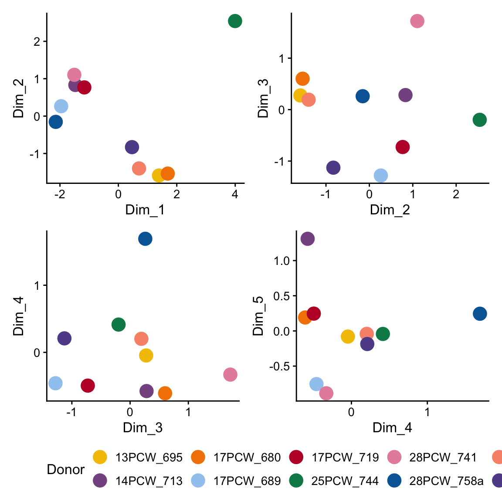
| Version | Author | Date |
|---|---|---|
| 1f4af33 | Calandra Grima | 2026-08-04 |
plotMDS.Dims1_5(MDS.Donor, "Dataset", ALL_DATASETS_COLOURS, makeFactor = T)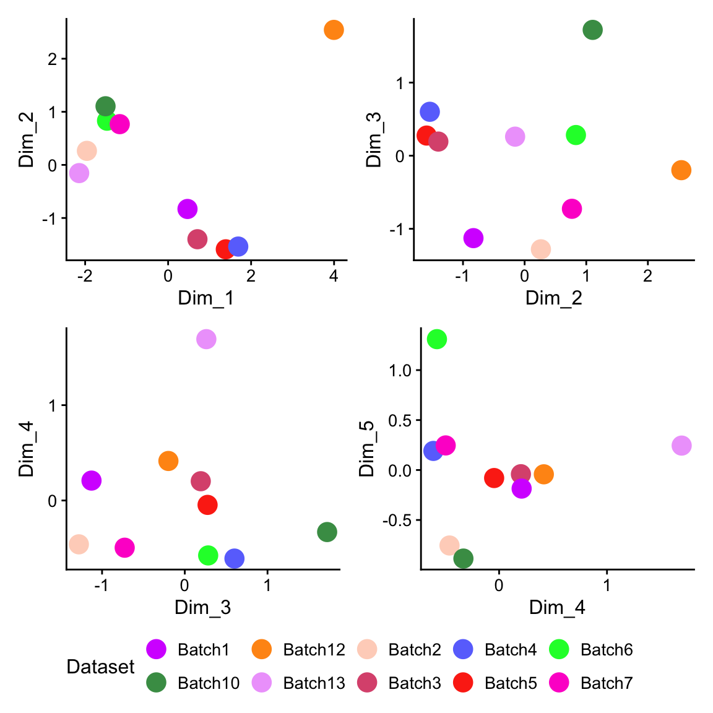
| Version | Author | Date |
|---|---|---|
| 1f4af33 | Calandra Grima | 2026-08-04 |
plotMDS.Dims1_5(MDS.Donor, "foetal_sex", ALL_FOETAL_SEX_COLOURS, makeFactor = T)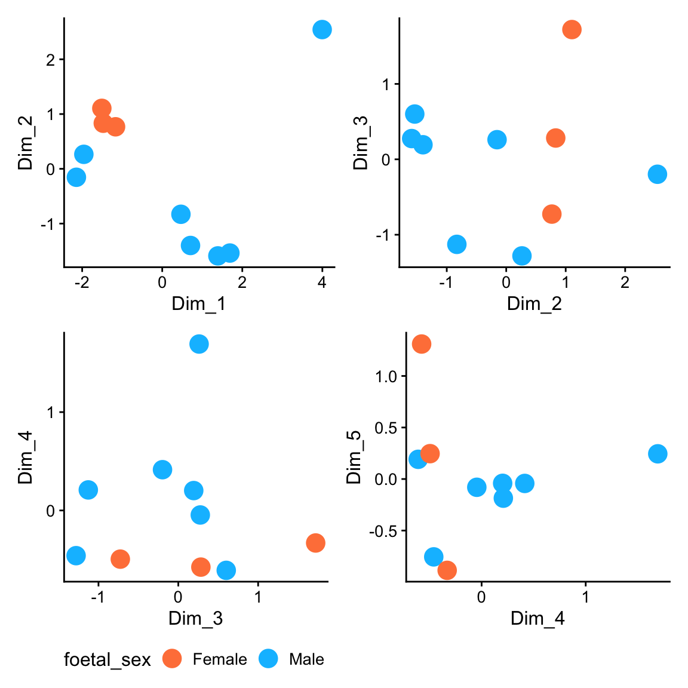
| Version | Author | Date |
|---|---|---|
| 1f4af33 | Calandra Grima | 2026-08-04 |
plotMDS.Dims1_5(MDS.Donor, "gest_age_weeks", makeFactor = TRUE)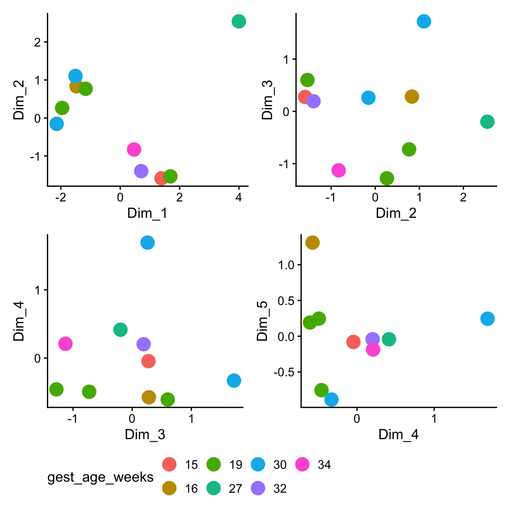
| Version | Author | Date |
|---|---|---|
| 1f4af33 | Calandra Grima | 2026-08-04 |
plotMDS.Dims1_5(MDS.Donor, "early_late_gestation", ALL_GEST_COLOURS)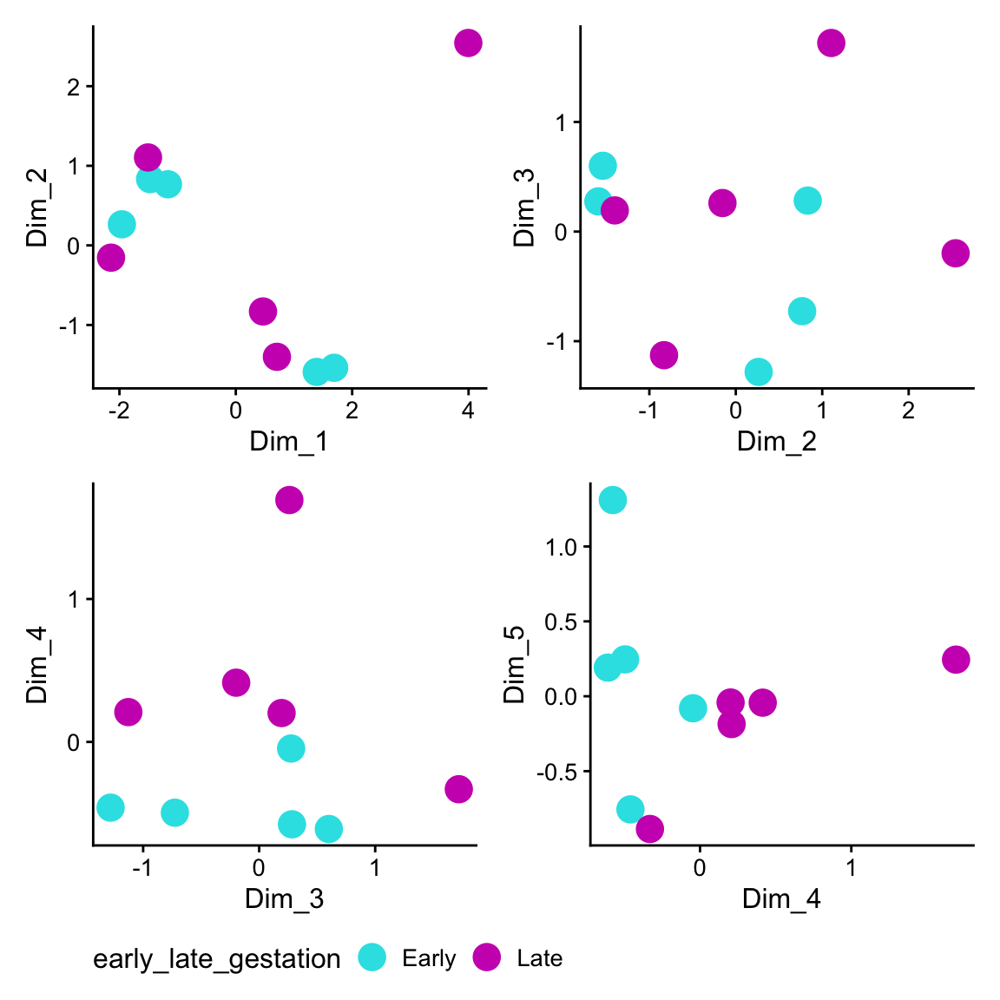
| Version | Author | Date |
|---|---|---|
| 1f4af33 | Calandra Grima | 2026-08-04 |
plotMDS.Dims1_5(MDS.Donor, "cmv_status", makeFactor = TRUE)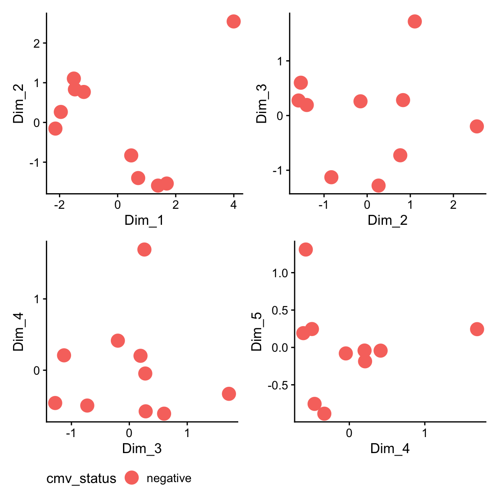
| Version | Author | Date |
|---|---|---|
| 1f4af33 | Calandra Grima | 2026-08-04 |
plotMDS.Dims1_5(MDS.Donor, "n_cells")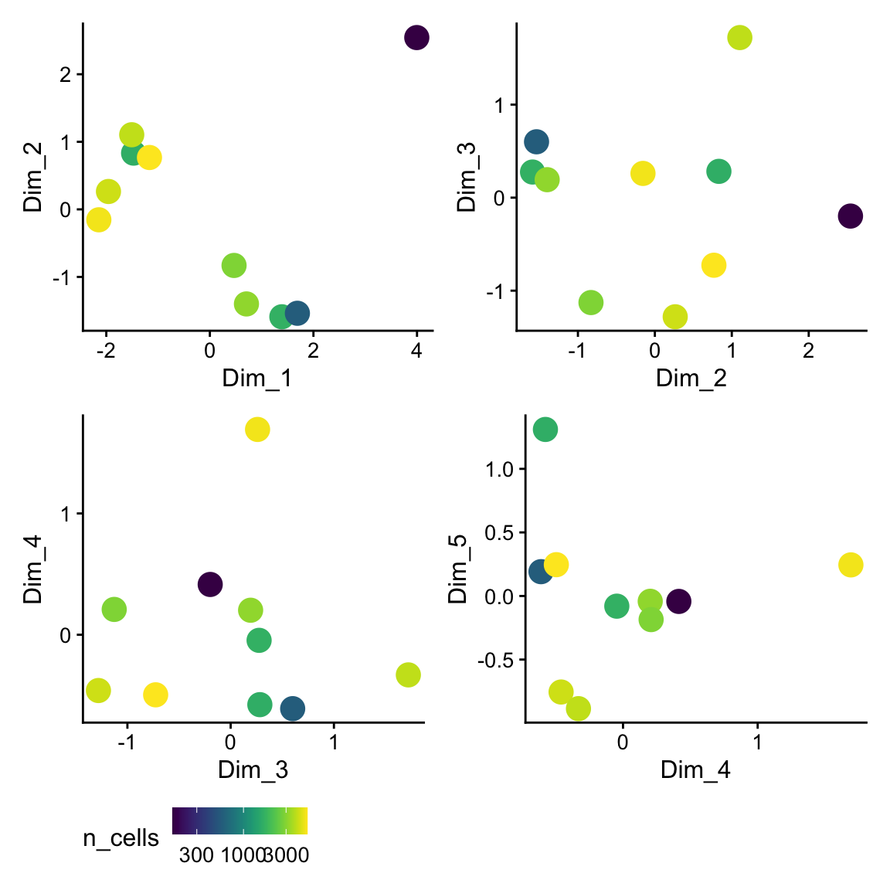
| Version | Author | Date |
|---|---|---|
| 1f4af33 | Calandra Grima | 2026-08-04 |
# Generate metadata for plotting
meta.refined_clusters <- seu_int.Gerli@meta.data %>% group_by(Donor,cluster_names) %>%
summarise(Donor = unique(Donor),
n_cells = n(),
gest_age_weeks = unique(gest_age_weeks),
early_late_gestation = unique(early_late_gestation),
foetal_sex = unique(foetal_sex),
cmv_status = unique(cmv_status),
Dataset = unique(Dataset),
refined_clusters = unique(cluster_names))`summarise()` has regrouped the output.
ℹ Summaries were computed grouped by Donor and cluster_names.
ℹ Output is grouped by Donor.
ℹ Use `summarise(.groups = "drop_last")` to silence this message.
ℹ Use `summarise(.by = c(Donor, cluster_names))` for per-operation grouping
(`?dplyr::dplyr_by`) instead.meta.refined_clusters <- as.data.frame(meta.refined_clusters)
rownames(meta.refined_clusters) <- paste(meta.refined_clusters$Donor,
meta.refined_clusters$refined_clusters, sep = "_")
meta.refined_clusters$Donor_Cluster <- rownames(meta.refined_clusters)# Perform MDS
MDS.refined_clusters <- calcMDS(pseudobulk.refined_clusters, 5, "Donor_Cluster")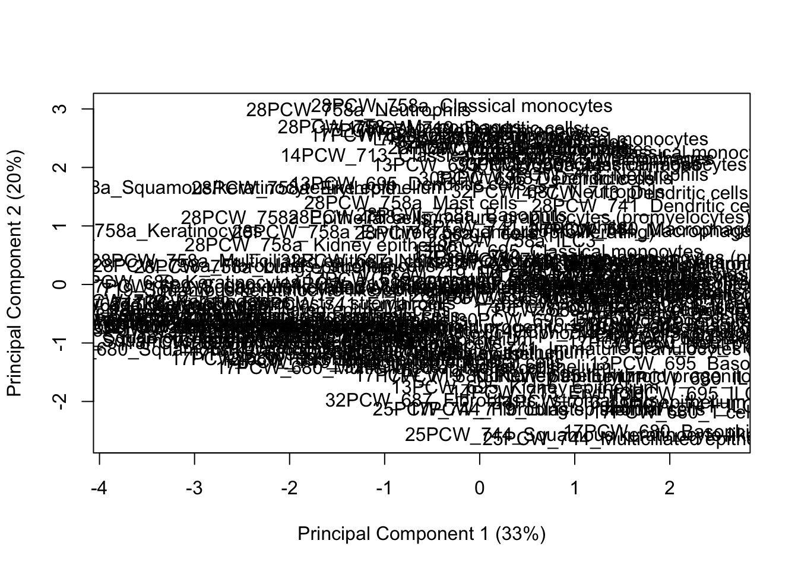
| Version | Author | Date |
|---|---|---|
| 1f4af33 | Calandra Grima | 2026-08-04 |
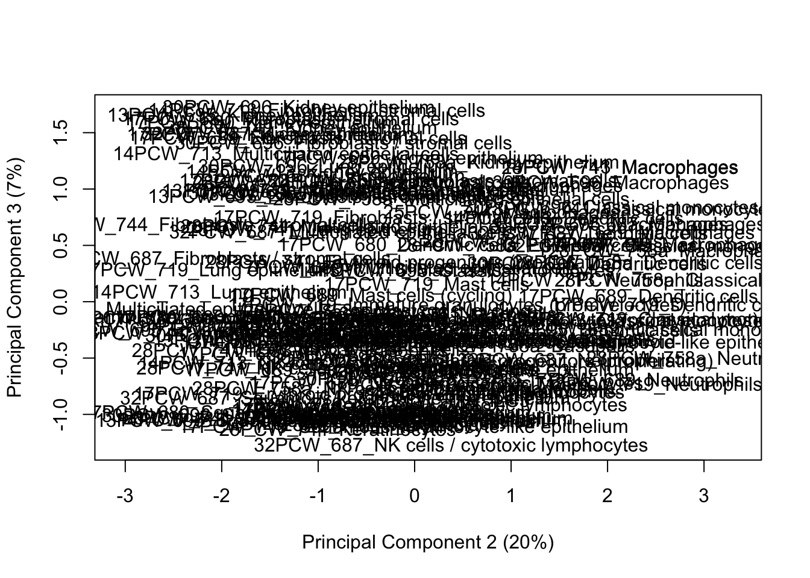
| Version | Author | Date |
|---|---|---|
| 1f4af33 | Calandra Grima | 2026-08-04 |
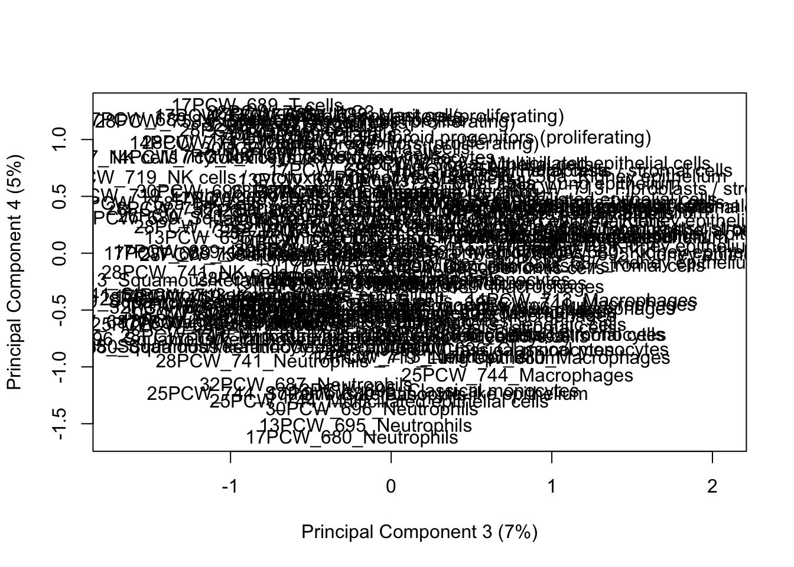
| Version | Author | Date |
|---|---|---|
| 1f4af33 | Calandra Grima | 2026-08-04 |
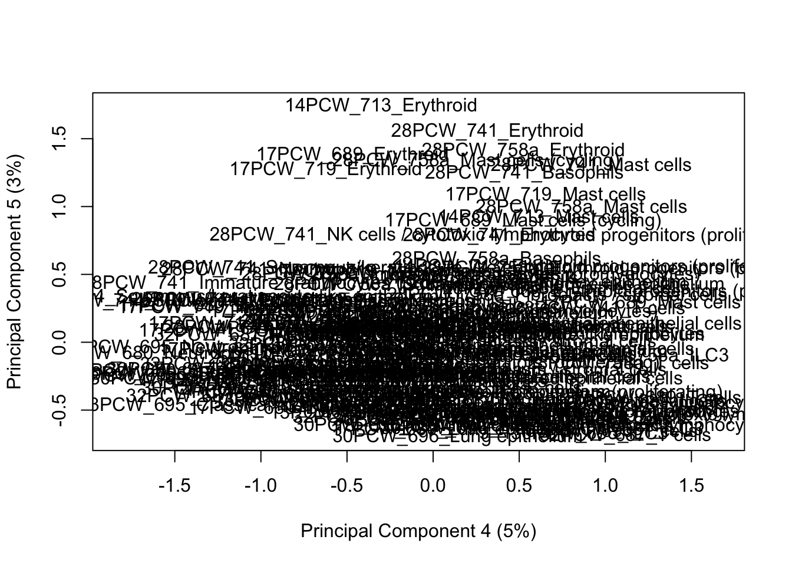
| Version | Author | Date |
|---|---|---|
| 1f4af33 | Calandra Grima | 2026-08-04 |
MDS.refined_clusters <- MDS.refined_clusters[meta.refined_clusters$Donor_Cluster,]
MDS.refined_clusters <- cbind(MDS.refined_clusters,
meta.refined_clusters[, !(colnames(meta.refined_clusters) %in%
colnames(MDS.refined_clusters))])
MDS.refined_clusters Donor_Cluster
13PCW_695_Keratinocytes 13PCW_695_Keratinocytes
13PCW_695_Squamous/keratinocyte-like epithelium 13PCW_695_Squamous/keratinocyte-like epithelium
13PCW_695_Neutrophils 13PCW_695_Neutrophils
13PCW_695_T cells 13PCW_695_T cells
13PCW_695_Macrophages 13PCW_695_Macrophages
13PCW_695_ILC3 13PCW_695_ILC3
13PCW_695_Classical monocytes 13PCW_695_Classical monocytes
13PCW_695_Dendritic cells 13PCW_695_Dendritic cells
13PCW_695_Basophils 13PCW_695_Basophils
13PCW_695_Multiciliated epithelial cells 13PCW_695_Multiciliated epithelial cells
13PCW_695_Kidney epithelium 13PCW_695_Kidney epithelium
13PCW_695_Erythroid progenitors (proliferating) 13PCW_695_Erythroid progenitors (proliferating)
13PCW_695_Fibroblasts / stromal cells 13PCW_695_Fibroblasts / stromal cells
13PCW_695_Lung epithelium 13PCW_695_Lung epithelium
13PCW_695_B cells 13PCW_695_B cells
14PCW_713_Keratinocytes 14PCW_713_Keratinocytes
14PCW_713_Squamous/keratinocyte-like epithelium 14PCW_713_Squamous/keratinocyte-like epithelium
14PCW_713_Neutrophils 14PCW_713_Neutrophils
14PCW_713_T cells 14PCW_713_T cells
14PCW_713_Macrophages 14PCW_713_Macrophages
14PCW_713_Mast cells 14PCW_713_Mast cells
14PCW_713_Erythroid 14PCW_713_Erythroid
14PCW_713_ILC3 14PCW_713_ILC3
14PCW_713_Classical monocytes 14PCW_713_Classical monocytes
14PCW_713_NK cells / cytotoxic lymphocytes 14PCW_713_NK cells / cytotoxic lymphocytes
14PCW_713_Dendritic cells 14PCW_713_Dendritic cells
14PCW_713_Basophils 14PCW_713_Basophils
14PCW_713_Multiciliated epithelial cells 14PCW_713_Multiciliated epithelial cells
14PCW_713_Kidney epithelium 14PCW_713_Kidney epithelium
14PCW_713_Erythroid progenitors (proliferating) 14PCW_713_Erythroid progenitors (proliferating)
14PCW_713_Fibroblasts / stromal cells 14PCW_713_Fibroblasts / stromal cells
14PCW_713_Lung epithelium 14PCW_713_Lung epithelium
17PCW_680_Keratinocytes 17PCW_680_Keratinocytes
17PCW_680_Squamous/keratinocyte-like epithelium 17PCW_680_Squamous/keratinocyte-like epithelium
17PCW_680_Neutrophils 17PCW_680_Neutrophils
17PCW_680_T cells 17PCW_680_T cells
17PCW_680_Macrophages 17PCW_680_Macrophages
17PCW_680_ILC3 17PCW_680_ILC3
17PCW_680_Dendritic cells 17PCW_680_Dendritic cells
17PCW_680_Basophils 17PCW_680_Basophils
17PCW_680_Multiciliated epithelial cells 17PCW_680_Multiciliated epithelial cells
17PCW_680_Kidney epithelium 17PCW_680_Kidney epithelium
17PCW_680_Fibroblasts / stromal cells 17PCW_680_Fibroblasts / stromal cells
17PCW_680_Lung epithelium 17PCW_680_Lung epithelium
17PCW_680_B cells 17PCW_680_B cells
17PCW_689_Keratinocytes 17PCW_689_Keratinocytes
17PCW_689_Squamous/keratinocyte-like epithelium 17PCW_689_Squamous/keratinocyte-like epithelium
17PCW_689_Neutrophils 17PCW_689_Neutrophils
17PCW_689_T cells 17PCW_689_T cells
17PCW_689_Macrophages 17PCW_689_Macrophages
17PCW_689_Mast cells 17PCW_689_Mast cells
17PCW_689_Erythroid 17PCW_689_Erythroid
17PCW_689_ILC3 17PCW_689_ILC3
17PCW_689_Classical monocytes 17PCW_689_Classical monocytes
17PCW_689_NK cells / cytotoxic lymphocytes 17PCW_689_NK cells / cytotoxic lymphocytes
17PCW_689_Dendritic cells 17PCW_689_Dendritic cells
17PCW_689_Basophils 17PCW_689_Basophils
17PCW_689_Multiciliated epithelial cells 17PCW_689_Multiciliated epithelial cells
17PCW_689_Kidney epithelium 17PCW_689_Kidney epithelium
17PCW_689_Erythroid progenitors (proliferating) 17PCW_689_Erythroid progenitors (proliferating)
17PCW_689_Immature granulocytes (promyelocytes) 17PCW_689_Immature granulocytes (promyelocytes)
17PCW_689_Fibroblasts / stromal cells 17PCW_689_Fibroblasts / stromal cells
17PCW_689_B cells 17PCW_689_B cells
17PCW_689_Mast cells (cycling) 17PCW_689_Mast cells (cycling)
17PCW_719_Keratinocytes 17PCW_719_Keratinocytes
17PCW_719_Squamous/keratinocyte-like epithelium 17PCW_719_Squamous/keratinocyte-like epithelium
17PCW_719_Neutrophils 17PCW_719_Neutrophils
17PCW_719_T cells 17PCW_719_T cells
17PCW_719_Macrophages 17PCW_719_Macrophages
17PCW_719_Mast cells 17PCW_719_Mast cells
17PCW_719_Erythroid 17PCW_719_Erythroid
17PCW_719_ILC3 17PCW_719_ILC3
17PCW_719_Classical monocytes 17PCW_719_Classical monocytes
17PCW_719_NK cells / cytotoxic lymphocytes 17PCW_719_NK cells / cytotoxic lymphocytes
17PCW_719_Dendritic cells 17PCW_719_Dendritic cells
17PCW_719_Basophils 17PCW_719_Basophils
17PCW_719_Multiciliated epithelial cells 17PCW_719_Multiciliated epithelial cells
17PCW_719_Kidney epithelium 17PCW_719_Kidney epithelium
17PCW_719_Erythroid progenitors (proliferating) 17PCW_719_Erythroid progenitors (proliferating)
17PCW_719_Immature granulocytes (promyelocytes) 17PCW_719_Immature granulocytes (promyelocytes)
17PCW_719_Fibroblasts / stromal cells 17PCW_719_Fibroblasts / stromal cells
17PCW_719_Lung epithelium 17PCW_719_Lung epithelium
17PCW_719_B cells 17PCW_719_B cells
25PCW_744_Keratinocytes 25PCW_744_Keratinocytes
25PCW_744_Squamous/keratinocyte-like epithelium 25PCW_744_Squamous/keratinocyte-like epithelium
25PCW_744_Macrophages 25PCW_744_Macrophages
25PCW_744_Multiciliated epithelial cells 25PCW_744_Multiciliated epithelial cells
25PCW_744_Fibroblasts / stromal cells 25PCW_744_Fibroblasts / stromal cells
28PCW_741_Keratinocytes 28PCW_741_Keratinocytes
28PCW_741_Squamous/keratinocyte-like epithelium 28PCW_741_Squamous/keratinocyte-like epithelium
28PCW_741_Neutrophils 28PCW_741_Neutrophils
28PCW_741_T cells 28PCW_741_T cells
28PCW_741_Macrophages 28PCW_741_Macrophages
28PCW_741_Mast cells 28PCW_741_Mast cells
28PCW_741_Erythroid 28PCW_741_Erythroid
28PCW_741_ILC3 28PCW_741_ILC3
28PCW_741_Classical monocytes 28PCW_741_Classical monocytes
28PCW_741_NK cells / cytotoxic lymphocytes 28PCW_741_NK cells / cytotoxic lymphocytes
28PCW_741_Dendritic cells 28PCW_741_Dendritic cells
28PCW_741_Basophils 28PCW_741_Basophils
28PCW_741_Multiciliated epithelial cells 28PCW_741_Multiciliated epithelial cells
28PCW_741_Kidney epithelium 28PCW_741_Kidney epithelium
28PCW_741_Erythroid progenitors (proliferating) 28PCW_741_Erythroid progenitors (proliferating)
28PCW_741_Immature granulocytes (promyelocytes) 28PCW_741_Immature granulocytes (promyelocytes)
28PCW_741_Fibroblasts / stromal cells 28PCW_741_Fibroblasts / stromal cells
28PCW_741_Lung epithelium 28PCW_741_Lung epithelium
28PCW_758a_Keratinocytes 28PCW_758a_Keratinocytes
28PCW_758a_Squamous/keratinocyte-like epithelium 28PCW_758a_Squamous/keratinocyte-like epithelium
28PCW_758a_Neutrophils 28PCW_758a_Neutrophils
28PCW_758a_T cells 28PCW_758a_T cells
28PCW_758a_Macrophages 28PCW_758a_Macrophages
28PCW_758a_Mast cells 28PCW_758a_Mast cells
28PCW_758a_Erythroid 28PCW_758a_Erythroid
28PCW_758a_ILC3 28PCW_758a_ILC3
28PCW_758a_Classical monocytes 28PCW_758a_Classical monocytes
28PCW_758a_NK cells / cytotoxic lymphocytes 28PCW_758a_NK cells / cytotoxic lymphocytes
28PCW_758a_Dendritic cells 28PCW_758a_Dendritic cells
28PCW_758a_Basophils 28PCW_758a_Basophils
28PCW_758a_Multiciliated epithelial cells 28PCW_758a_Multiciliated epithelial cells
28PCW_758a_Kidney epithelium 28PCW_758a_Kidney epithelium
28PCW_758a_Erythroid progenitors (proliferating) 28PCW_758a_Erythroid progenitors (proliferating)
28PCW_758a_Immature granulocytes (promyelocytes) 28PCW_758a_Immature granulocytes (promyelocytes)
28PCW_758a_Fibroblasts / stromal cells 28PCW_758a_Fibroblasts / stromal cells
28PCW_758a_Lung epithelium 28PCW_758a_Lung epithelium
28PCW_758a_B cells 28PCW_758a_B cells
28PCW_758a_Epithelial cells 28PCW_758a_Epithelial cells
28PCW_758a_Mast cells (cycling) 28PCW_758a_Mast cells (cycling)
30PCW_696_Keratinocytes 30PCW_696_Keratinocytes
30PCW_696_Squamous/keratinocyte-like epithelium 30PCW_696_Squamous/keratinocyte-like epithelium
30PCW_696_Neutrophils 30PCW_696_Neutrophils
30PCW_696_T cells 30PCW_696_T cells
30PCW_696_Macrophages 30PCW_696_Macrophages
30PCW_696_Mast cells 30PCW_696_Mast cells
30PCW_696_ILC3 30PCW_696_ILC3
30PCW_696_Classical monocytes 30PCW_696_Classical monocytes
30PCW_696_Dendritic cells 30PCW_696_Dendritic cells
30PCW_696_Basophils 30PCW_696_Basophils
30PCW_696_Multiciliated epithelial cells 30PCW_696_Multiciliated epithelial cells
30PCW_696_Kidney epithelium 30PCW_696_Kidney epithelium
30PCW_696_Erythroid progenitors (proliferating) 30PCW_696_Erythroid progenitors (proliferating)
30PCW_696_Fibroblasts / stromal cells 30PCW_696_Fibroblasts / stromal cells
30PCW_696_Lung epithelium 30PCW_696_Lung epithelium
30PCW_696_B cells 30PCW_696_B cells
32PCW_687_Keratinocytes 32PCW_687_Keratinocytes
32PCW_687_Squamous/keratinocyte-like epithelium 32PCW_687_Squamous/keratinocyte-like epithelium
32PCW_687_Neutrophils 32PCW_687_Neutrophils
32PCW_687_T cells 32PCW_687_T cells
32PCW_687_Macrophages 32PCW_687_Macrophages
32PCW_687_ILC3 32PCW_687_ILC3
32PCW_687_Classical monocytes 32PCW_687_Classical monocytes
32PCW_687_NK cells / cytotoxic lymphocytes 32PCW_687_NK cells / cytotoxic lymphocytes
32PCW_687_Dendritic cells 32PCW_687_Dendritic cells
32PCW_687_Multiciliated epithelial cells 32PCW_687_Multiciliated epithelial cells
32PCW_687_Kidney epithelium 32PCW_687_Kidney epithelium
32PCW_687_Fibroblasts / stromal cells 32PCW_687_Fibroblasts / stromal cells
32PCW_687_Lung epithelium 32PCW_687_Lung epithelium
32PCW_687_B cells 32PCW_687_B cells
Dim_1 Dim_2
13PCW_695_Keratinocytes -3.45391029 -0.546881418
13PCW_695_Squamous/keratinocyte-like epithelium -2.88717132 -0.976785774
13PCW_695_Neutrophils 2.12095015 -0.770249729
13PCW_695_T cells 2.28283612 -1.081084045
13PCW_695_Macrophages 0.09221988 2.025601474
13PCW_695_ILC3 2.21090525 -1.883073759
13PCW_695_Classical monocytes 0.81526782 0.539970677
13PCW_695_Dendritic cells -0.75250014 1.703306179
13PCW_695_Basophils 2.20393175 -1.369951524
13PCW_695_Multiciliated epithelial cells -2.10080469 -0.450880698
13PCW_695_Kidney epithelium 0.47753896 -1.776224126
13PCW_695_Erythroid progenitors (proliferating) 2.09374912 -1.586432302
13PCW_695_Fibroblasts / stromal cells -1.98693850 -1.017292391
13PCW_695_Lung epithelium -1.41074065 -1.295602900
13PCW_695_B cells 2.35096932 -0.532229943
14PCW_713_Keratinocytes -2.96011633 -0.674216686
14PCW_713_Squamous/keratinocyte-like epithelium -2.12996860 -0.752506423
14PCW_713_Neutrophils 1.28383285 1.866213221
14PCW_713_T cells 2.06252084 -0.339089624
14PCW_713_Macrophages 1.24373351 2.131290025
14PCW_713_Mast cells 1.67818863 -0.160527174
14PCW_713_Erythroid 0.71142319 -1.863705289
14PCW_713_ILC3 2.02524315 -0.422233978
14PCW_713_Classical monocytes -0.56469863 2.183414544
14PCW_713_NK cells / cytotoxic lymphocytes 2.16915315 -0.820260843
14PCW_713_Dendritic cells 1.58314264 1.545327997
14PCW_713_Basophils 2.04271340 -0.875843826
14PCW_713_Multiciliated epithelial cells -0.91091218 -1.333883012
14PCW_713_Kidney epithelium -0.85256410 -0.960189741
14PCW_713_Erythroid progenitors (proliferating) 0.07205667 -0.010036734
14PCW_713_Fibroblasts / stromal cells -1.51046189 -1.013526280
14PCW_713_Lung epithelium 1.47256607 -2.028933487
17PCW_680_Keratinocytes -3.32329666 -0.657837825
17PCW_680_Squamous/keratinocyte-like epithelium -2.49704962 -1.128796922
17PCW_680_Neutrophils 2.04835216 -1.010931080
17PCW_680_T cells 2.08040124 -2.194780958
17PCW_680_Macrophages 1.76700381 0.931378151
17PCW_680_ILC3 2.24694887 -1.618895945
17PCW_680_Dendritic cells 1.90779688 -0.176373207
17PCW_680_Basophils 1.93141953 -2.535661521
17PCW_680_Multiciliated epithelial cells -0.98725412 -1.435038898
17PCW_680_Kidney epithelium 0.35477398 -1.583371314
17PCW_680_Fibroblasts / stromal cells -1.50700135 -1.284948663
17PCW_680_Lung epithelium -1.53964792 -1.113617648
17PCW_680_B cells 2.22820453 -0.928648182
17PCW_689_Keratinocytes -3.11439707 0.015995015
17PCW_689_Squamous/keratinocyte-like epithelium -1.83371717 -0.057339619
17PCW_689_Neutrophils 0.44055314 2.288164950
17PCW_689_T cells 1.28403121 0.317711407
17PCW_689_Macrophages 0.59253373 2.300185660
17PCW_689_Mast cells 1.46440215 0.245079234
17PCW_689_Erythroid -1.43767006 -0.786285350
17PCW_689_ILC3 1.64795694 -0.125330467
17PCW_689_Classical monocytes -0.25595237 2.529436186
17PCW_689_NK cells / cytotoxic lymphocytes 1.34295875 0.328560602
17PCW_689_Dendritic cells 0.33122889 2.318205529
17PCW_689_Basophils 1.91748067 0.135220038
17PCW_689_Multiciliated epithelial cells -1.69923699 -0.080386166
17PCW_689_Kidney epithelium -0.27294826 -0.073651503
17PCW_689_Erythroid progenitors (proliferating) 1.22051048 0.011306365
17PCW_689_Immature granulocytes (promyelocytes) 0.52638871 0.065439391
17PCW_689_Fibroblasts / stromal cells -1.31535289 -1.206190667
17PCW_689_B cells 0.87652015 0.203859551
17PCW_689_Mast cells (cycling) 1.39302426 -0.455419669
17PCW_719_Keratinocytes -3.21224871 -0.302720435
17PCW_719_Squamous/keratinocyte-like epithelium -2.44248157 -0.116413165
17PCW_719_Neutrophils -0.03801177 2.479547911
17PCW_719_T cells 1.65924487 0.362625854
17PCW_719_Macrophages -0.06934289 2.546040212
17PCW_719_Mast cells 1.23247243 0.125880177
17PCW_719_Erythroid -1.08897565 -0.793642138
17PCW_719_ILC3 0.48054332 0.364292290
17PCW_719_Classical monocytes -0.16546932 2.605783917
17PCW_719_NK cells / cytotoxic lymphocytes 0.76778513 0.164004900
17PCW_719_Dendritic cells -0.15982913 2.649190015
17PCW_719_Basophils 1.98887904 -0.709007145
17PCW_719_Multiciliated epithelial cells -1.91536369 -0.618043629
17PCW_719_Kidney epithelium 0.09001665 -1.572203634
17PCW_719_Erythroid progenitors (proliferating) 0.11830719 -0.746506091
17PCW_719_Immature granulocytes (promyelocytes) 1.67885728 0.438179420
17PCW_719_Fibroblasts / stromal cells -2.00183767 -0.336161093
17PCW_719_Lung epithelium 0.57399009 -2.150547256
17PCW_719_B cells 2.09586281 -0.920653048
25PCW_744_Keratinocytes -2.95309027 -0.798627477
25PCW_744_Squamous/keratinocyte-like epithelium 1.54678182 -2.588950364
25PCW_744_Macrophages 1.73444442 0.901754219
25PCW_744_Multiciliated epithelial cells 1.82429628 -2.651671276
25PCW_744_Fibroblasts / stromal cells 0.62535533 -2.144272506
28PCW_741_Keratinocytes -3.44711703 -0.345912665
28PCW_741_Squamous/keratinocyte-like epithelium -2.84033601 -0.691248548
28PCW_741_Neutrophils 0.40901637 0.964235239
28PCW_741_T cells 1.49357833 -0.435522664
28PCW_741_Macrophages 1.20402746 2.128525180
28PCW_741_Mast cells 0.69354706 0.402231514
28PCW_741_Erythroid -1.40686650 -0.352845053
28PCW_741_ILC3 2.18674261 -2.097725917
28PCW_741_Classical monocytes 1.66084599 2.238509107
28PCW_741_NK cells / cytotoxic lymphocytes -0.62694701 -0.839549038
28PCW_741_Dendritic cells 1.79046991 1.328140903
28PCW_741_Basophils 1.37159719 0.039491237
28PCW_741_Multiciliated epithelial cells -2.11723452 -0.630920180
28PCW_741_Kidney epithelium -0.25129869 -1.174829845
28PCW_741_Erythroid progenitors (proliferating) 1.50110775 -0.010954786
28PCW_741_Immature granulocytes (promyelocytes) 1.85394249 -1.118934876
28PCW_741_Fibroblasts / stromal cells -2.40606993 -0.552227047
28PCW_741_Lung epithelium -1.69443555 -1.026029973
28PCW_758a_Keratinocytes -3.56740714 0.894910115
28PCW_758a_Squamous/keratinocyte-like epithelium -2.73293404 1.640596161
28PCW_758a_Neutrophils -1.27372833 2.962580118
28PCW_758a_T cells -0.34805823 0.857025285
28PCW_758a_Macrophages -0.84166421 2.671646639
28PCW_758a_Mast cells -0.72352650 1.379974057
28PCW_758a_Erythroid -1.95639961 1.631644415
28PCW_758a_ILC3 0.33613253 0.726455100
28PCW_758a_Classical monocytes -0.18751450 3.039031004
28PCW_758a_NK cells / cytotoxic lymphocytes 1.36870770 -0.205303576
28PCW_758a_Dendritic cells 0.33235622 2.316077225
28PCW_758a_Basophils -0.18623798 1.173038630
28PCW_758a_Multiciliated epithelial cells -2.24850428 0.383240022
28PCW_758a_Kidney epithelium -1.63909987 0.658210718
28PCW_758a_Erythroid progenitors (proliferating) -0.38268615 0.874016447
28PCW_758a_Immature granulocytes (promyelocytes) 0.42071038 1.132445880
28PCW_758a_Fibroblasts / stromal cells -2.26765248 0.297966710
28PCW_758a_Lung epithelium -2.25148736 0.285571327
28PCW_758a_B cells 1.41160159 0.282695084
28PCW_758a_Epithelial cells -1.83247838 1.128248730
28PCW_758a_Mast cells (cycling) 1.11813014 -0.250706530
30PCW_696_Keratinocytes -3.47041976 -0.423424843
30PCW_696_Squamous/keratinocyte-like epithelium -2.87388418 -0.910758845
30PCW_696_Neutrophils 2.03954693 0.346620058
30PCW_696_T cells 1.91828770 -0.587026499
30PCW_696_Macrophages 1.09894734 2.036530761
30PCW_696_Mast cells 0.48730285 -0.244944747
30PCW_696_ILC3 0.94896279 -0.396991913
30PCW_696_Classical monocytes 1.27842810 2.034244924
30PCW_696_Dendritic cells 0.60315409 1.790000378
30PCW_696_Basophils 2.04638401 -0.388071054
30PCW_696_Multiciliated epithelial cells -1.99692504 -0.549195534
30PCW_696_Kidney epithelium -0.51691151 -1.200141372
30PCW_696_Erythroid progenitors (proliferating) 1.92592802 -0.626301528
30PCW_696_Fibroblasts / stromal cells -2.19352556 -0.736325302
30PCW_696_Lung epithelium -1.58725214 -0.914965611
30PCW_696_B cells 1.84198866 -0.134951907
32PCW_687_Keratinocytes -3.56917652 -0.366409603
32PCW_687_Squamous/keratinocyte-like epithelium -2.52877545 -0.719084159
32PCW_687_Neutrophils 0.82615221 1.570252290
32PCW_687_T cells 1.41562416 -0.008402674
32PCW_687_Macrophages 0.34225264 2.414794486
32PCW_687_ILC3 1.36698567 -0.095202611
32PCW_687_Classical monocytes 0.87604046 2.463817319
32PCW_687_NK cells / cytotoxic lymphocytes -0.05409245 0.378288780
32PCW_687_Dendritic cells 0.78475016 1.798934624
32PCW_687_Multiciliated epithelial cells -2.18240705 -0.751182550
32PCW_687_Kidney epithelium -0.02096533 -1.419343178
32PCW_687_Fibroblasts / stromal cells 0.12366305 -1.996428867
32PCW_687_Lung epithelium -1.96064822 -0.804675066
32PCW_687_B cells 1.44644822 -0.141850450
Dim_3 Dim_4
13PCW_695_Keratinocytes -0.96522742 -0.603556254
13PCW_695_Squamous/keratinocyte-like epithelium -1.06582972 -0.831135014
13PCW_695_Neutrophils -0.15848363 -1.522765822
13PCW_695_T cells -0.42107197 0.629983115
13PCW_695_Macrophages 0.67927859 -0.558298560
13PCW_695_ILC3 -0.35414572 -0.067555060
13PCW_695_Classical monocytes 0.26882764 -1.218325535
13PCW_695_Dendritic cells -0.25900507 -0.268917646
13PCW_695_Basophils -0.36946495 -0.464705209
13PCW_695_Multiciliated epithelial cells 0.94580013 0.409822504
13PCW_695_Kidney epithelium 1.64462010 -0.018405273
13PCW_695_Erythroid progenitors (proliferating) -0.26370626 0.128309711
13PCW_695_Fibroblasts / stromal cells 0.92515678 -0.116376479
13PCW_695_Lung epithelium 0.97442275 0.140529228
13PCW_695_B cells -0.32791498 -0.028155052
14PCW_713_Keratinocytes -0.97012098 -0.380985827
14PCW_713_Squamous/keratinocyte-like epithelium -1.05874583 -0.245195122
14PCW_713_Neutrophils 0.18213635 -0.917177596
14PCW_713_T cells -0.43482077 1.139166840
14PCW_713_Macrophages 1.18613370 -0.425968744
14PCW_713_Mast cells 0.27066349 0.612741812
14PCW_713_Erythroid -0.23026247 -0.301208620
14PCW_713_ILC3 -0.35632286 1.020462450
14PCW_713_Classical monocytes -0.17840379 -0.469047699
14PCW_713_NK cells / cytotoxic lymphocytes -0.55672129 0.832074364
14PCW_713_Dendritic cells 0.73302180 -0.635015318
14PCW_713_Basophils -0.23534196 0.264038063
14PCW_713_Multiciliated epithelial cells 1.30215467 0.197775073
14PCW_713_Kidney epithelium 1.14486552 0.353022984
14PCW_713_Erythroid progenitors (proliferating) -0.35451970 0.960957780
14PCW_713_Fibroblasts / stromal cells 1.69042843 0.559915387
14PCW_713_Lung epithelium 0.07182696 -0.275629247
17PCW_680_Keratinocytes -0.98388829 -0.635160552
17PCW_680_Squamous/keratinocyte-like epithelium -0.99478229 -0.833933109
17PCW_680_Neutrophils -0.24396766 -1.626188362
17PCW_680_T cells -0.14848976 -0.567593804
17PCW_680_Macrophages 1.01744698 -0.925292191
17PCW_680_ILC3 -0.47329217 0.126977001
17PCW_680_Dendritic cells 0.49863353 -0.739840132
17PCW_680_Basophils -0.15208746 -1.249551767
17PCW_680_Multiciliated epithelial cells -0.17728238 -0.729425886
17PCW_680_Kidney epithelium 1.58154436 0.002144154
17PCW_680_Fibroblasts / stromal cells 1.61460029 0.209502909
17PCW_680_Lung epithelium 1.06086378 0.130660746
17PCW_680_B cells -0.31449930 -0.286216635
17PCW_689_Keratinocytes -1.06732929 -0.011853870
17PCW_689_Squamous/keratinocyte-like epithelium -0.61351816 0.298422349
17PCW_689_Neutrophils -0.70655819 -0.520519446
17PCW_689_T cells -0.83358089 1.292694131
17PCW_689_Macrophages 0.60538558 -0.304289057
17PCW_689_Mast cells -0.18315069 1.204624945
17PCW_689_Erythroid -1.03851064 -0.466966968
17PCW_689_ILC3 -0.63598331 1.207051463
17PCW_689_Classical monocytes -0.25594155 -0.538644832
17PCW_689_NK cells / cytotoxic lymphocytes -0.73386157 1.167540816
17PCW_689_Dendritic cells 0.03894795 -0.121925758
17PCW_689_Basophils -0.75150828 0.470678368
17PCW_689_Multiciliated epithelial cells 0.29192968 0.720704735
17PCW_689_Kidney epithelium 1.26385640 0.134469505
17PCW_689_Erythroid progenitors (proliferating) -0.19875134 1.197921262
17PCW_689_Immature granulocytes (promyelocytes) -0.33240189 0.002405709
17PCW_689_Fibroblasts / stromal cells 1.44063788 0.406248581
17PCW_689_B cells -0.67694772 0.364053553
17PCW_689_Mast cells (cycling) 0.04642396 0.522697376
17PCW_719_Keratinocytes -1.00254127 -0.392139909
17PCW_719_Squamous/keratinocyte-like epithelium -1.11961524 -0.431456817
17PCW_719_Neutrophils -0.74430477 -0.770402747
17PCW_719_T cells -0.60221140 0.993455180
17PCW_719_Macrophages 0.49580441 -0.272620817
17PCW_719_Mast cells 0.14447619 0.653680272
17PCW_719_Erythroid -1.04231715 -0.622487262
17PCW_719_ILC3 -0.88813568 0.844332958
17PCW_719_Classical monocytes -0.16849081 -0.604079438
17PCW_719_NK cells / cytotoxic lymphocytes -0.92298021 0.658455667
17PCW_719_Dendritic cells -0.03896776 -0.228650562
17PCW_719_Basophils -0.44504751 -0.559282230
17PCW_719_Multiciliated epithelial cells 0.97593458 0.468257035
17PCW_719_Kidney epithelium 1.47474290 0.052807112
17PCW_719_Erythroid progenitors (proliferating) -0.82815683 0.493951362
17PCW_719_Immature granulocytes (promyelocytes) -0.03749925 -0.530640143
17PCW_719_Fibroblasts / stromal cells 0.73724929 0.339988779
17PCW_719_Lung epithelium 0.27288203 -0.926925248
17PCW_719_B cells -0.15554067 -0.430002571
25PCW_744_Keratinocytes -1.14668589 -0.635660973
25PCW_744_Squamous/keratinocyte-like epithelium -0.14590172 -1.245962426
25PCW_744_Macrophages 0.78669560 -1.080921627
25PCW_744_Multiciliated epithelial cells -0.07355792 -1.310074563
25PCW_744_Fibroblasts / stromal cells 0.67257813 -0.723491192
28PCW_741_Keratinocytes -1.09241112 -0.413633476
28PCW_741_Squamous/keratinocyte-like epithelium -1.04154235 -0.376449319
28PCW_741_Neutrophils -0.80176697 -0.958923289
28PCW_741_T cells -1.01557160 0.965905703
28PCW_741_Macrophages 1.17767979 -0.460676926
28PCW_741_Mast cells -0.13435500 0.919523931
28PCW_741_Erythroid -1.10035250 0.316908231
28PCW_741_ILC3 -0.44482600 -0.518891076
28PCW_741_Classical monocytes 0.81151158 -0.724273225
28PCW_741_NK cells / cytotoxic lymphocytes -0.60019052 -0.178719045
28PCW_741_Dendritic cells 0.52915168 -0.499890204
28PCW_741_Basophils -0.20859667 0.530447210
28PCW_741_Multiciliated epithelial cells 0.65620009 0.280508594
28PCW_741_Kidney epithelium 1.53554795 0.277017540
28PCW_741_Erythroid progenitors (proliferating) 0.34357206 1.011786891
28PCW_741_Immature granulocytes (promyelocytes) -0.28694676 -0.738981936
28PCW_741_Fibroblasts / stromal cells 1.04819163 0.440616180
28PCW_741_Lung epithelium 0.63179671 0.063768086
28PCW_758a_Keratinocytes -0.81079092 -0.023061344
28PCW_758a_Squamous/keratinocyte-like epithelium -0.36867056 0.384251392
28PCW_758a_Neutrophils -0.51252232 -0.234623968
28PCW_758a_T cells -0.74815504 1.074918007
28PCW_758a_Macrophages 0.44176670 -0.003877951
28PCW_758a_Mast cells -0.34701715 0.862159956
28PCW_758a_Erythroid -0.36343381 0.525018627
28PCW_758a_ILC3 -0.62405402 1.231957801
28PCW_758a_Classical monocytes 0.18155293 -0.243733842
28PCW_758a_NK cells / cytotoxic lymphocytes -0.78210953 0.427883351
28PCW_758a_Dendritic cells 0.33822915 0.022906522
28PCW_758a_Basophils -0.40026765 0.369732105
28PCW_758a_Multiciliated epithelial cells 0.90315939 0.781370482
28PCW_758a_Kidney epithelium 1.22716932 0.670030265
28PCW_758a_Erythroid progenitors (proliferating) -0.53544840 1.149530908
28PCW_758a_Immature granulocytes (promyelocytes) -0.16936646 0.219058534
28PCW_758a_Fibroblasts / stromal cells 1.06538136 0.720660448
28PCW_758a_Lung epithelium 0.98846020 0.604855773
28PCW_758a_B cells -0.33154817 0.008641536
28PCW_758a_Epithelial cells 0.49085545 0.773686248
28PCW_758a_Mast cells (cycling) -0.09015258 0.250192859
30PCW_696_Keratinocytes -0.95122888 -0.540798225
30PCW_696_Squamous/keratinocyte-like epithelium -1.02240608 -0.768998730
30PCW_696_Neutrophils -0.11932945 -1.376404376
30PCW_696_T cells -0.50507909 1.038831778
30PCW_696_Macrophages 1.04660802 -0.494893310
30PCW_696_Mast cells -0.35264228 0.094408266
30PCW_696_ILC3 -0.69424282 0.909245665
30PCW_696_Classical monocytes 0.82828418 -0.853501563
30PCW_696_Dendritic cells 0.32583383 -0.128276890
30PCW_696_Basophils -0.35529717 0.014399419
30PCW_696_Multiciliated epithelial cells 0.95873045 0.400911099
30PCW_696_Kidney epithelium 1.71630789 0.161500060
30PCW_696_Erythroid progenitors (proliferating) -0.31160634 0.533877520
30PCW_696_Fibroblasts / stromal cells 1.40287662 0.399652473
30PCW_696_Lung epithelium 1.19123337 0.142806818
30PCW_696_B cells -0.21227629 0.197370965
32PCW_687_Keratinocytes -1.03062420 -0.484728754
32PCW_687_Squamous/keratinocyte-like epithelium -0.86883416 -0.616567156
32PCW_687_Neutrophils -0.52971183 -1.163961595
32PCW_687_T cells -0.62467328 1.117139991
32PCW_687_Macrophages 0.67752185 -0.514645559
32PCW_687_ILC3 -0.53186340 1.114411177
32PCW_687_Classical monocytes 0.48563383 -0.862006184
32PCW_687_NK cells / cytotoxic lymphocytes -1.28545018 0.833301197
32PCW_687_Dendritic cells 0.59862562 -0.134963205
32PCW_687_Multiciliated epithelial cells 0.61183288 0.132851599
32PCW_687_Kidney epithelium 1.47744621 -0.090754815
32PCW_687_Fibroblasts / stromal cells 0.37345937 -0.662660052
32PCW_687_Lung epithelium 1.10368375 0.369087145
32PCW_687_B cells -0.56451644 0.183863352
Dim_5 Donor
13PCW_695_Keratinocytes -0.4327508227 13PCW_695
13PCW_695_Squamous/keratinocyte-like epithelium -0.2523961990 13PCW_695
13PCW_695_Neutrophils -0.0400537082 13PCW_695
13PCW_695_T cells -0.5476040663 13PCW_695
13PCW_695_Macrophages -0.2255971835 13PCW_695
13PCW_695_ILC3 -0.1281510662 13PCW_695
13PCW_695_Classical monocytes -0.4670938182 13PCW_695
13PCW_695_Dendritic cells -0.5240643611 13PCW_695
13PCW_695_Basophils 0.1327626798 13PCW_695
13PCW_695_Multiciliated epithelial cells -0.6215207115 13PCW_695
13PCW_695_Kidney epithelium 0.0399718293 13PCW_695
13PCW_695_Erythroid progenitors (proliferating) -0.1552488047 13PCW_695
13PCW_695_Fibroblasts / stromal cells -0.2583119514 13PCW_695
13PCW_695_Lung epithelium -0.5119226722 13PCW_695
13PCW_695_B cells -0.5196267846 13PCW_695
14PCW_713_Keratinocytes -0.2284787735 14PCW_713
14PCW_713_Squamous/keratinocyte-like epithelium -0.3745071846 14PCW_713
14PCW_713_Neutrophils -0.3089369662 14PCW_713
14PCW_713_T cells -0.4984052125 14PCW_713
14PCW_713_Macrophages 0.2107925053 14PCW_713
14PCW_713_Mast cells 0.9205704413 14PCW_713
14PCW_713_Erythroid 1.7404367417 14PCW_713
14PCW_713_ILC3 -0.5470768299 14PCW_713
14PCW_713_Classical monocytes -0.1949560624 14PCW_713
14PCW_713_NK cells / cytotoxic lymphocytes -0.4499133346 14PCW_713
14PCW_713_Dendritic cells 0.0988701380 14PCW_713
14PCW_713_Basophils 0.4705405027 14PCW_713
14PCW_713_Multiciliated epithelial cells -0.0896530895 14PCW_713
14PCW_713_Kidney epithelium 0.1241071592 14PCW_713
14PCW_713_Erythroid progenitors (proliferating) 0.5529788016 14PCW_713
14PCW_713_Fibroblasts / stromal cells -0.0566536593 14PCW_713
14PCW_713_Lung epithelium -0.0733130886 14PCW_713
17PCW_680_Keratinocytes -0.3835019448 17PCW_680
17PCW_680_Squamous/keratinocyte-like epithelium -0.2154965384 17PCW_680
17PCW_680_Neutrophils -0.0841142961 17PCW_680
17PCW_680_T cells 0.0415544427 17PCW_680
17PCW_680_Macrophages -0.0583852770 17PCW_680
17PCW_680_ILC3 -0.3814339755 17PCW_680
17PCW_680_Dendritic cells -0.4876645070 17PCW_680
17PCW_680_Basophils 0.2670735833 17PCW_680
17PCW_680_Multiciliated epithelial cells -0.2839546085 17PCW_680
17PCW_680_Kidney epithelium 0.0645553843 17PCW_680
17PCW_680_Fibroblasts / stromal cells -0.1077790321 17PCW_680
17PCW_680_Lung epithelium -0.6457085876 17PCW_680
17PCW_680_B cells -0.4534907169 17PCW_680
17PCW_689_Keratinocytes -0.2936521897 17PCW_689
17PCW_689_Squamous/keratinocyte-like epithelium 0.0486543010 17PCW_689
17PCW_689_Neutrophils -0.4000633279 17PCW_689
17PCW_689_T cells -0.4129816828 17PCW_689
17PCW_689_Macrophages 0.0771662355 17PCW_689
17PCW_689_Mast cells 0.2884032597 17PCW_689
17PCW_689_Erythroid 1.3763867480 17PCW_689
17PCW_689_ILC3 -0.4395593998 17PCW_689
17PCW_689_Classical monocytes -0.2496176936 17PCW_689
17PCW_689_NK cells / cytotoxic lymphocytes -0.5397527931 17PCW_689
17PCW_689_Dendritic cells -0.3457764519 17PCW_689
17PCW_689_Basophils -0.4226761140 17PCW_689
17PCW_689_Multiciliated epithelial cells -0.4377537112 17PCW_689
17PCW_689_Kidney epithelium 0.0959698694 17PCW_689
17PCW_689_Erythroid progenitors (proliferating) 0.3688304651 17PCW_689
17PCW_689_Immature granulocytes (promyelocytes) 0.2228543348 17PCW_689
17PCW_689_Fibroblasts / stromal cells 0.1119213797 17PCW_689
17PCW_689_B cells -0.3418059753 17PCW_689
17PCW_689_Mast cells (cycling) 0.8919988005 17PCW_689
17PCW_719_Keratinocytes -0.0771457610 17PCW_719
17PCW_719_Squamous/keratinocyte-like epithelium 0.0793721730 17PCW_719
17PCW_719_Neutrophils -0.2330082421 17PCW_719
17PCW_719_T cells -0.5616634390 17PCW_719
17PCW_719_Macrophages 0.5181605810 17PCW_719
17PCW_719_Mast cells 1.0848560841 17PCW_719
17PCW_719_Erythroid 1.2699918959 17PCW_719
17PCW_719_ILC3 -0.5644623163 17PCW_719
17PCW_719_Classical monocytes -0.3546990941 17PCW_719
17PCW_719_NK cells / cytotoxic lymphocytes -0.5140735508 17PCW_719
17PCW_719_Dendritic cells -0.1854812489 17PCW_719
17PCW_719_Basophils 0.2936987758 17PCW_719
17PCW_719_Multiciliated epithelial cells -0.2716660640 17PCW_719
17PCW_719_Kidney epithelium 0.4192003767 17PCW_719
17PCW_719_Erythroid progenitors (proliferating) -0.3730919698 17PCW_719
17PCW_719_Immature granulocytes (promyelocytes) 0.2552853918 17PCW_719
17PCW_719_Fibroblasts / stromal cells -0.0001220267 17PCW_719
17PCW_719_Lung epithelium 0.1318109426 17PCW_719
17PCW_719_B cells -0.0362473045 17PCW_719
25PCW_744_Keratinocytes -0.1224572556 25PCW_744
25PCW_744_Squamous/keratinocyte-like epithelium 0.3318008765 25PCW_744
25PCW_744_Macrophages 0.3085908892 25PCW_744
25PCW_744_Multiciliated epithelial cells 0.3024248047 25PCW_744
25PCW_744_Fibroblasts / stromal cells 0.3035467767 25PCW_744
28PCW_741_Keratinocytes 0.1503990670 28PCW_741
28PCW_741_Squamous/keratinocyte-like epithelium 0.5421624671 28PCW_741
28PCW_741_Neutrophils 0.5337295226 28PCW_741
28PCW_741_T cells 0.2451256152 28PCW_741
28PCW_741_Macrophages 0.1938345954 28PCW_741
28PCW_741_Mast cells 1.3005746308 28PCW_741
28PCW_741_Erythroid 1.5540324765 28PCW_741
28PCW_741_ILC3 -0.0153972411 28PCW_741
28PCW_741_Classical monocytes 0.1045641389 28PCW_741
28PCW_741_NK cells / cytotoxic lymphocytes 0.7864027466 28PCW_741
28PCW_741_Dendritic cells -0.1782454376 28PCW_741
28PCW_741_Basophils 1.2425005529 28PCW_741
28PCW_741_Multiciliated epithelial cells -0.2569478383 28PCW_741
28PCW_741_Kidney epithelium 0.2110455699 28PCW_741
28PCW_741_Erythroid progenitors (proliferating) 0.7847775338 28PCW_741
28PCW_741_Immature granulocytes (promyelocytes) 0.4333695621 28PCW_741
28PCW_741_Fibroblasts / stromal cells 0.1057484990 28PCW_741
28PCW_741_Lung epithelium -0.4746613826 28PCW_741
28PCW_758a_Keratinocytes 0.1808429845 28PCW_758a
28PCW_758a_Squamous/keratinocyte-like epithelium 0.4229280717 28PCW_758a
28PCW_758a_Neutrophils 0.2953590303 28PCW_758a
28PCW_758a_T cells -0.1598346370 28PCW_758a
28PCW_758a_Macrophages 0.5023733592 28PCW_758a
28PCW_758a_Mast cells 0.9923028630 28PCW_758a
28PCW_758a_Erythroid 1.4090254130 28PCW_758a
28PCW_758a_ILC3 -0.1035598598 28PCW_758a
28PCW_758a_Classical monocytes 0.1490416887 28PCW_758a
28PCW_758a_NK cells / cytotoxic lymphocytes 0.0576408873 28PCW_758a
28PCW_758a_Dendritic cells 0.1197219904 28PCW_758a
28PCW_758a_Basophils 0.6122437970 28PCW_758a
28PCW_758a_Multiciliated epithelial cells 0.1310115500 28PCW_758a
28PCW_758a_Kidney epithelium 0.4381302812 28PCW_758a
28PCW_758a_Erythroid progenitors (proliferating) 0.5394666006 28PCW_758a
28PCW_758a_Immature granulocytes (promyelocytes) 0.4952607019 28PCW_758a
28PCW_758a_Fibroblasts / stromal cells 0.3459594034 28PCW_758a
28PCW_758a_Lung epithelium -0.0740229555 28PCW_758a
28PCW_758a_B cells 0.2611612281 28PCW_758a
28PCW_758a_Epithelial cells 0.3910393400 28PCW_758a
28PCW_758a_Mast cells (cycling) 1.3342076668 28PCW_758a
30PCW_696_Keratinocytes -0.4301866642 30PCW_696
30PCW_696_Squamous/keratinocyte-like epithelium -0.2396955925 30PCW_696
30PCW_696_Neutrophils -0.2725456148 30PCW_696
30PCW_696_T cells -0.6564077012 30PCW_696
30PCW_696_Macrophages -0.1799860290 30PCW_696
30PCW_696_Mast cells -0.0934202064 30PCW_696
30PCW_696_ILC3 -0.6773716404 30PCW_696
30PCW_696_Classical monocytes -0.3474537297 30PCW_696
30PCW_696_Dendritic cells -0.6155131071 30PCW_696
30PCW_696_Basophils -0.0513364695 30PCW_696
30PCW_696_Multiciliated epithelial cells -0.5756349422 30PCW_696
30PCW_696_Kidney epithelium -0.0294795031 30PCW_696
30PCW_696_Erythroid progenitors (proliferating) -0.5172616667 30PCW_696
30PCW_696_Fibroblasts / stromal cells -0.2056364772 30PCW_696
30PCW_696_Lung epithelium -0.7004139740 30PCW_696
30PCW_696_B cells -0.6371131892 30PCW_696
32PCW_687_Keratinocytes -0.3742249668 32PCW_687
32PCW_687_Squamous/keratinocyte-like epithelium -0.2082126420 32PCW_687
32PCW_687_Neutrophils -0.4016784028 32PCW_687
32PCW_687_T cells -0.6889123916 32PCW_687
32PCW_687_Macrophages -0.0267583125 32PCW_687
32PCW_687_ILC3 -0.6455143767 32PCW_687
32PCW_687_Classical monocytes -0.1688020811 32PCW_687
32PCW_687_NK cells / cytotoxic lymphocytes -0.6158858868 32PCW_687
32PCW_687_Dendritic cells -0.5563160207 32PCW_687
32PCW_687_Multiciliated epithelial cells -0.4742767158 32PCW_687
32PCW_687_Kidney epithelium 0.2140273848 32PCW_687
32PCW_687_Fibroblasts / stromal cells 0.0519073485 32PCW_687
32PCW_687_Lung epithelium -0.5714414835 32PCW_687
32PCW_687_B cells -0.5673851530 32PCW_687
cluster_names
13PCW_695_Keratinocytes Keratinocytes
13PCW_695_Squamous/keratinocyte-like epithelium Squamous/keratinocyte-like epithelium
13PCW_695_Neutrophils Neutrophils
13PCW_695_T cells T cells
13PCW_695_Macrophages Macrophages
13PCW_695_ILC3 ILC3
13PCW_695_Classical monocytes Classical monocytes
13PCW_695_Dendritic cells Dendritic cells
13PCW_695_Basophils Basophils
13PCW_695_Multiciliated epithelial cells Multiciliated epithelial cells
13PCW_695_Kidney epithelium Kidney epithelium
13PCW_695_Erythroid progenitors (proliferating) Erythroid progenitors (proliferating)
13PCW_695_Fibroblasts / stromal cells Fibroblasts / stromal cells
13PCW_695_Lung epithelium Lung epithelium
13PCW_695_B cells B cells
14PCW_713_Keratinocytes Keratinocytes
14PCW_713_Squamous/keratinocyte-like epithelium Squamous/keratinocyte-like epithelium
14PCW_713_Neutrophils Neutrophils
14PCW_713_T cells T cells
14PCW_713_Macrophages Macrophages
14PCW_713_Mast cells Mast cells
14PCW_713_Erythroid Erythroid
14PCW_713_ILC3 ILC3
14PCW_713_Classical monocytes Classical monocytes
14PCW_713_NK cells / cytotoxic lymphocytes NK cells / cytotoxic lymphocytes
14PCW_713_Dendritic cells Dendritic cells
14PCW_713_Basophils Basophils
14PCW_713_Multiciliated epithelial cells Multiciliated epithelial cells
14PCW_713_Kidney epithelium Kidney epithelium
14PCW_713_Erythroid progenitors (proliferating) Erythroid progenitors (proliferating)
14PCW_713_Fibroblasts / stromal cells Fibroblasts / stromal cells
14PCW_713_Lung epithelium Lung epithelium
17PCW_680_Keratinocytes Keratinocytes
17PCW_680_Squamous/keratinocyte-like epithelium Squamous/keratinocyte-like epithelium
17PCW_680_Neutrophils Neutrophils
17PCW_680_T cells T cells
17PCW_680_Macrophages Macrophages
17PCW_680_ILC3 ILC3
17PCW_680_Dendritic cells Dendritic cells
17PCW_680_Basophils Basophils
17PCW_680_Multiciliated epithelial cells Multiciliated epithelial cells
17PCW_680_Kidney epithelium Kidney epithelium
17PCW_680_Fibroblasts / stromal cells Fibroblasts / stromal cells
17PCW_680_Lung epithelium Lung epithelium
17PCW_680_B cells B cells
17PCW_689_Keratinocytes Keratinocytes
17PCW_689_Squamous/keratinocyte-like epithelium Squamous/keratinocyte-like epithelium
17PCW_689_Neutrophils Neutrophils
17PCW_689_T cells T cells
17PCW_689_Macrophages Macrophages
17PCW_689_Mast cells Mast cells
17PCW_689_Erythroid Erythroid
17PCW_689_ILC3 ILC3
17PCW_689_Classical monocytes Classical monocytes
17PCW_689_NK cells / cytotoxic lymphocytes NK cells / cytotoxic lymphocytes
17PCW_689_Dendritic cells Dendritic cells
17PCW_689_Basophils Basophils
17PCW_689_Multiciliated epithelial cells Multiciliated epithelial cells
17PCW_689_Kidney epithelium Kidney epithelium
17PCW_689_Erythroid progenitors (proliferating) Erythroid progenitors (proliferating)
17PCW_689_Immature granulocytes (promyelocytes) Immature granulocytes (promyelocytes)
17PCW_689_Fibroblasts / stromal cells Fibroblasts / stromal cells
17PCW_689_B cells B cells
17PCW_689_Mast cells (cycling) Mast cells (cycling)
17PCW_719_Keratinocytes Keratinocytes
17PCW_719_Squamous/keratinocyte-like epithelium Squamous/keratinocyte-like epithelium
17PCW_719_Neutrophils Neutrophils
17PCW_719_T cells T cells
17PCW_719_Macrophages Macrophages
17PCW_719_Mast cells Mast cells
17PCW_719_Erythroid Erythroid
17PCW_719_ILC3 ILC3
17PCW_719_Classical monocytes Classical monocytes
17PCW_719_NK cells / cytotoxic lymphocytes NK cells / cytotoxic lymphocytes
17PCW_719_Dendritic cells Dendritic cells
17PCW_719_Basophils Basophils
17PCW_719_Multiciliated epithelial cells Multiciliated epithelial cells
17PCW_719_Kidney epithelium Kidney epithelium
17PCW_719_Erythroid progenitors (proliferating) Erythroid progenitors (proliferating)
17PCW_719_Immature granulocytes (promyelocytes) Immature granulocytes (promyelocytes)
17PCW_719_Fibroblasts / stromal cells Fibroblasts / stromal cells
17PCW_719_Lung epithelium Lung epithelium
17PCW_719_B cells B cells
25PCW_744_Keratinocytes Keratinocytes
25PCW_744_Squamous/keratinocyte-like epithelium Squamous/keratinocyte-like epithelium
25PCW_744_Macrophages Macrophages
25PCW_744_Multiciliated epithelial cells Multiciliated epithelial cells
25PCW_744_Fibroblasts / stromal cells Fibroblasts / stromal cells
28PCW_741_Keratinocytes Keratinocytes
28PCW_741_Squamous/keratinocyte-like epithelium Squamous/keratinocyte-like epithelium
28PCW_741_Neutrophils Neutrophils
28PCW_741_T cells T cells
28PCW_741_Macrophages Macrophages
28PCW_741_Mast cells Mast cells
28PCW_741_Erythroid Erythroid
28PCW_741_ILC3 ILC3
28PCW_741_Classical monocytes Classical monocytes
28PCW_741_NK cells / cytotoxic lymphocytes NK cells / cytotoxic lymphocytes
28PCW_741_Dendritic cells Dendritic cells
28PCW_741_Basophils Basophils
28PCW_741_Multiciliated epithelial cells Multiciliated epithelial cells
28PCW_741_Kidney epithelium Kidney epithelium
28PCW_741_Erythroid progenitors (proliferating) Erythroid progenitors (proliferating)
28PCW_741_Immature granulocytes (promyelocytes) Immature granulocytes (promyelocytes)
28PCW_741_Fibroblasts / stromal cells Fibroblasts / stromal cells
28PCW_741_Lung epithelium Lung epithelium
28PCW_758a_Keratinocytes Keratinocytes
28PCW_758a_Squamous/keratinocyte-like epithelium Squamous/keratinocyte-like epithelium
28PCW_758a_Neutrophils Neutrophils
28PCW_758a_T cells T cells
28PCW_758a_Macrophages Macrophages
28PCW_758a_Mast cells Mast cells
28PCW_758a_Erythroid Erythroid
28PCW_758a_ILC3 ILC3
28PCW_758a_Classical monocytes Classical monocytes
28PCW_758a_NK cells / cytotoxic lymphocytes NK cells / cytotoxic lymphocytes
28PCW_758a_Dendritic cells Dendritic cells
28PCW_758a_Basophils Basophils
28PCW_758a_Multiciliated epithelial cells Multiciliated epithelial cells
28PCW_758a_Kidney epithelium Kidney epithelium
28PCW_758a_Erythroid progenitors (proliferating) Erythroid progenitors (proliferating)
28PCW_758a_Immature granulocytes (promyelocytes) Immature granulocytes (promyelocytes)
28PCW_758a_Fibroblasts / stromal cells Fibroblasts / stromal cells
28PCW_758a_Lung epithelium Lung epithelium
28PCW_758a_B cells B cells
28PCW_758a_Epithelial cells Epithelial cells
28PCW_758a_Mast cells (cycling) Mast cells (cycling)
30PCW_696_Keratinocytes Keratinocytes
30PCW_696_Squamous/keratinocyte-like epithelium Squamous/keratinocyte-like epithelium
30PCW_696_Neutrophils Neutrophils
30PCW_696_T cells T cells
30PCW_696_Macrophages Macrophages
30PCW_696_Mast cells Mast cells
30PCW_696_ILC3 ILC3
30PCW_696_Classical monocytes Classical monocytes
30PCW_696_Dendritic cells Dendritic cells
30PCW_696_Basophils Basophils
30PCW_696_Multiciliated epithelial cells Multiciliated epithelial cells
30PCW_696_Kidney epithelium Kidney epithelium
30PCW_696_Erythroid progenitors (proliferating) Erythroid progenitors (proliferating)
30PCW_696_Fibroblasts / stromal cells Fibroblasts / stromal cells
30PCW_696_Lung epithelium Lung epithelium
30PCW_696_B cells B cells
32PCW_687_Keratinocytes Keratinocytes
32PCW_687_Squamous/keratinocyte-like epithelium Squamous/keratinocyte-like epithelium
32PCW_687_Neutrophils Neutrophils
32PCW_687_T cells T cells
32PCW_687_Macrophages Macrophages
32PCW_687_ILC3 ILC3
32PCW_687_Classical monocytes Classical monocytes
32PCW_687_NK cells / cytotoxic lymphocytes NK cells / cytotoxic lymphocytes
32PCW_687_Dendritic cells Dendritic cells
32PCW_687_Multiciliated epithelial cells Multiciliated epithelial cells
32PCW_687_Kidney epithelium Kidney epithelium
32PCW_687_Fibroblasts / stromal cells Fibroblasts / stromal cells
32PCW_687_Lung epithelium Lung epithelium
32PCW_687_B cells B cells
n_cells gest_age_weeks
13PCW_695_Keratinocytes 1488 15
13PCW_695_Squamous/keratinocyte-like epithelium 140 15
13PCW_695_Neutrophils 3 15
13PCW_695_T cells 8 15
13PCW_695_Macrophages 15 15
13PCW_695_ILC3 3 15
13PCW_695_Classical monocytes 3 15
13PCW_695_Dendritic cells 8 15
13PCW_695_Basophils 4 15
13PCW_695_Multiciliated epithelial cells 13 15
13PCW_695_Kidney epithelium 3 15
13PCW_695_Erythroid progenitors (proliferating) 1 15
13PCW_695_Fibroblasts / stromal cells 4 15
13PCW_695_Lung epithelium 3 15
13PCW_695_B cells 10 15
14PCW_713_Keratinocytes 1133 16
14PCW_713_Squamous/keratinocyte-like epithelium 155 16
14PCW_713_Neutrophils 13 16
14PCW_713_T cells 84 16
14PCW_713_Macrophages 27 16
14PCW_713_Mast cells 7 16
14PCW_713_Erythroid 39 16
14PCW_713_ILC3 68 16
14PCW_713_Classical monocytes 22 16
14PCW_713_NK cells / cytotoxic lymphocytes 15 16
14PCW_713_Dendritic cells 4 16
14PCW_713_Basophils 5 16
14PCW_713_Multiciliated epithelial cells 10 16
14PCW_713_Kidney epithelium 32 16
14PCW_713_Erythroid progenitors (proliferating) 20 16
14PCW_713_Fibroblasts / stromal cells 18 16
14PCW_713_Lung epithelium 1 16
17PCW_680_Keratinocytes 491 19
17PCW_680_Squamous/keratinocyte-like epithelium 47 19
17PCW_680_Neutrophils 4 19
17PCW_680_T cells 1 19
17PCW_680_Macrophages 4 19
17PCW_680_ILC3 2 19
17PCW_680_Dendritic cells 2 19
17PCW_680_Basophils 1 19
17PCW_680_Multiciliated epithelial cells 1 19
17PCW_680_Kidney epithelium 3 19
17PCW_680_Fibroblasts / stromal cells 6 19
17PCW_680_Lung epithelium 2 19
17PCW_680_B cells 5 19
17PCW_689_Keratinocytes 1876 19
17PCW_689_Squamous/keratinocyte-like epithelium 253 19
17PCW_689_Neutrophils 763 19
17PCW_689_T cells 486 19
17PCW_689_Macrophages 13 19
17PCW_689_Mast cells 13 19
17PCW_689_Erythroid 20 19
17PCW_689_ILC3 315 19
17PCW_689_Classical monocytes 56 19
17PCW_689_NK cells / cytotoxic lymphocytes 267 19
17PCW_689_Dendritic cells 29 19
17PCW_689_Basophils 17 19
17PCW_689_Multiciliated epithelial cells 40 19
17PCW_689_Kidney epithelium 12 19
17PCW_689_Erythroid progenitors (proliferating) 12 19
17PCW_689_Immature granulocytes (promyelocytes) 9 19
17PCW_689_Fibroblasts / stromal cells 7 19
17PCW_689_B cells 15 19
17PCW_689_Mast cells (cycling) 2 19
17PCW_719_Keratinocytes 3531 19
17PCW_719_Squamous/keratinocyte-like epithelium 260 19
17PCW_719_Neutrophils 924 19
17PCW_719_T cells 92 19
17PCW_719_Macrophages 56 19
17PCW_719_Mast cells 12 19
17PCW_719_Erythroid 13 19
17PCW_719_ILC3 41 19
17PCW_719_Classical monocytes 104 19
17PCW_719_NK cells / cytotoxic lymphocytes 20 19
17PCW_719_Dendritic cells 114 19
17PCW_719_Basophils 4 19
17PCW_719_Multiciliated epithelial cells 14 19
17PCW_719_Kidney epithelium 5 19
17PCW_719_Erythroid progenitors (proliferating) 4 19
17PCW_719_Immature granulocytes (promyelocytes) 2 19
17PCW_719_Fibroblasts / stromal cells 5 19
17PCW_719_Lung epithelium 2 19
17PCW_719_B cells 2 19
25PCW_744_Keratinocytes 145 27
25PCW_744_Squamous/keratinocyte-like epithelium 1 27
25PCW_744_Macrophages 9 27
25PCW_744_Multiciliated epithelial cells 1 27
25PCW_744_Fibroblasts / stromal cells 4 27
28PCW_741_Keratinocytes 2382 30
28PCW_741_Squamous/keratinocyte-like epithelium 237 30
28PCW_741_Neutrophils 15 30
28PCW_741_T cells 150 30
28PCW_741_Macrophages 26 30
28PCW_741_Mast cells 469 30
28PCW_741_Erythroid 453 30
28PCW_741_ILC3 2 30
28PCW_741_Classical monocytes 19 30
28PCW_741_NK cells / cytotoxic lymphocytes 3 30
28PCW_741_Dendritic cells 3 30
28PCW_741_Basophils 149 30
28PCW_741_Multiciliated epithelial cells 22 30
28PCW_741_Kidney epithelium 4 30
28PCW_741_Erythroid progenitors (proliferating) 9 30
28PCW_741_Immature granulocytes (promyelocytes) 2 30
28PCW_741_Fibroblasts / stromal cells 13 30
28PCW_741_Lung epithelium 3 30
28PCW_758a_Keratinocytes 2815 30
28PCW_758a_Squamous/keratinocyte-like epithelium 593 30
28PCW_758a_Neutrophils 86 30
28PCW_758a_T cells 60 30
28PCW_758a_Macrophages 516 30
28PCW_758a_Mast cells 119 30
28PCW_758a_Erythroid 143 30
28PCW_758a_ILC3 81 30
28PCW_758a_Classical monocytes 94 30
28PCW_758a_NK cells / cytotoxic lymphocytes 5 30
28PCW_758a_Dendritic cells 17 30
28PCW_758a_Basophils 33 30
28PCW_758a_Multiciliated epithelial cells 76 30
28PCW_758a_Kidney epithelium 90 30
28PCW_758a_Erythroid progenitors (proliferating) 29 30
28PCW_758a_Immature granulocytes (promyelocytes) 10 30
28PCW_758a_Fibroblasts / stromal cells 22 30
28PCW_758a_Lung epithelium 77 30
28PCW_758a_B cells 4 30
28PCW_758a_Epithelial cells 88 30
28PCW_758a_Mast cells (cycling) 3 30
30PCW_696_Keratinocytes 2672 32
30PCW_696_Squamous/keratinocyte-like epithelium 272 32
30PCW_696_Neutrophils 15 32
30PCW_696_T cells 15 32
30PCW_696_Macrophages 33 32
30PCW_696_Mast cells 3 32
30PCW_696_ILC3 14 32
30PCW_696_Classical monocytes 8 32
30PCW_696_Dendritic cells 14 32
30PCW_696_Basophils 12 32
30PCW_696_Multiciliated epithelial cells 31 32
30PCW_696_Kidney epithelium 9 32
30PCW_696_Erythroid progenitors (proliferating) 4 32
30PCW_696_Fibroblasts / stromal cells 20 32
30PCW_696_Lung epithelium 4 32
30PCW_696_B cells 37 32
32PCW_687_Keratinocytes 2174 34
32PCW_687_Squamous/keratinocyte-like epithelium 460 34
32PCW_687_Neutrophils 72 34
32PCW_687_T cells 31 34
32PCW_687_Macrophages 41 34
32PCW_687_ILC3 21 34
32PCW_687_Classical monocytes 13 34
32PCW_687_NK cells / cytotoxic lymphocytes 20 34
32PCW_687_Dendritic cells 25 34
32PCW_687_Multiciliated epithelial cells 24 34
32PCW_687_Kidney epithelium 2 34
32PCW_687_Fibroblasts / stromal cells 1 34
32PCW_687_Lung epithelium 19 34
32PCW_687_B cells 15 34
early_late_gestation
13PCW_695_Keratinocytes Early
13PCW_695_Squamous/keratinocyte-like epithelium Early
13PCW_695_Neutrophils Early
13PCW_695_T cells Early
13PCW_695_Macrophages Early
13PCW_695_ILC3 Early
13PCW_695_Classical monocytes Early
13PCW_695_Dendritic cells Early
13PCW_695_Basophils Early
13PCW_695_Multiciliated epithelial cells Early
13PCW_695_Kidney epithelium Early
13PCW_695_Erythroid progenitors (proliferating) Early
13PCW_695_Fibroblasts / stromal cells Early
13PCW_695_Lung epithelium Early
13PCW_695_B cells Early
14PCW_713_Keratinocytes Early
14PCW_713_Squamous/keratinocyte-like epithelium Early
14PCW_713_Neutrophils Early
14PCW_713_T cells Early
14PCW_713_Macrophages Early
14PCW_713_Mast cells Early
14PCW_713_Erythroid Early
14PCW_713_ILC3 Early
14PCW_713_Classical monocytes Early
14PCW_713_NK cells / cytotoxic lymphocytes Early
14PCW_713_Dendritic cells Early
14PCW_713_Basophils Early
14PCW_713_Multiciliated epithelial cells Early
14PCW_713_Kidney epithelium Early
14PCW_713_Erythroid progenitors (proliferating) Early
14PCW_713_Fibroblasts / stromal cells Early
14PCW_713_Lung epithelium Early
17PCW_680_Keratinocytes Early
17PCW_680_Squamous/keratinocyte-like epithelium Early
17PCW_680_Neutrophils Early
17PCW_680_T cells Early
17PCW_680_Macrophages Early
17PCW_680_ILC3 Early
17PCW_680_Dendritic cells Early
17PCW_680_Basophils Early
17PCW_680_Multiciliated epithelial cells Early
17PCW_680_Kidney epithelium Early
17PCW_680_Fibroblasts / stromal cells Early
17PCW_680_Lung epithelium Early
17PCW_680_B cells Early
17PCW_689_Keratinocytes Early
17PCW_689_Squamous/keratinocyte-like epithelium Early
17PCW_689_Neutrophils Early
17PCW_689_T cells Early
17PCW_689_Macrophages Early
17PCW_689_Mast cells Early
17PCW_689_Erythroid Early
17PCW_689_ILC3 Early
17PCW_689_Classical monocytes Early
17PCW_689_NK cells / cytotoxic lymphocytes Early
17PCW_689_Dendritic cells Early
17PCW_689_Basophils Early
17PCW_689_Multiciliated epithelial cells Early
17PCW_689_Kidney epithelium Early
17PCW_689_Erythroid progenitors (proliferating) Early
17PCW_689_Immature granulocytes (promyelocytes) Early
17PCW_689_Fibroblasts / stromal cells Early
17PCW_689_B cells Early
17PCW_689_Mast cells (cycling) Early
17PCW_719_Keratinocytes Early
17PCW_719_Squamous/keratinocyte-like epithelium Early
17PCW_719_Neutrophils Early
17PCW_719_T cells Early
17PCW_719_Macrophages Early
17PCW_719_Mast cells Early
17PCW_719_Erythroid Early
17PCW_719_ILC3 Early
17PCW_719_Classical monocytes Early
17PCW_719_NK cells / cytotoxic lymphocytes Early
17PCW_719_Dendritic cells Early
17PCW_719_Basophils Early
17PCW_719_Multiciliated epithelial cells Early
17PCW_719_Kidney epithelium Early
17PCW_719_Erythroid progenitors (proliferating) Early
17PCW_719_Immature granulocytes (promyelocytes) Early
17PCW_719_Fibroblasts / stromal cells Early
17PCW_719_Lung epithelium Early
17PCW_719_B cells Early
25PCW_744_Keratinocytes Late
25PCW_744_Squamous/keratinocyte-like epithelium Late
25PCW_744_Macrophages Late
25PCW_744_Multiciliated epithelial cells Late
25PCW_744_Fibroblasts / stromal cells Late
28PCW_741_Keratinocytes Late
28PCW_741_Squamous/keratinocyte-like epithelium Late
28PCW_741_Neutrophils Late
28PCW_741_T cells Late
28PCW_741_Macrophages Late
28PCW_741_Mast cells Late
28PCW_741_Erythroid Late
28PCW_741_ILC3 Late
28PCW_741_Classical monocytes Late
28PCW_741_NK cells / cytotoxic lymphocytes Late
28PCW_741_Dendritic cells Late
28PCW_741_Basophils Late
28PCW_741_Multiciliated epithelial cells Late
28PCW_741_Kidney epithelium Late
28PCW_741_Erythroid progenitors (proliferating) Late
28PCW_741_Immature granulocytes (promyelocytes) Late
28PCW_741_Fibroblasts / stromal cells Late
28PCW_741_Lung epithelium Late
28PCW_758a_Keratinocytes Late
28PCW_758a_Squamous/keratinocyte-like epithelium Late
28PCW_758a_Neutrophils Late
28PCW_758a_T cells Late
28PCW_758a_Macrophages Late
28PCW_758a_Mast cells Late
28PCW_758a_Erythroid Late
28PCW_758a_ILC3 Late
28PCW_758a_Classical monocytes Late
28PCW_758a_NK cells / cytotoxic lymphocytes Late
28PCW_758a_Dendritic cells Late
28PCW_758a_Basophils Late
28PCW_758a_Multiciliated epithelial cells Late
28PCW_758a_Kidney epithelium Late
28PCW_758a_Erythroid progenitors (proliferating) Late
28PCW_758a_Immature granulocytes (promyelocytes) Late
28PCW_758a_Fibroblasts / stromal cells Late
28PCW_758a_Lung epithelium Late
28PCW_758a_B cells Late
28PCW_758a_Epithelial cells Late
28PCW_758a_Mast cells (cycling) Late
30PCW_696_Keratinocytes Late
30PCW_696_Squamous/keratinocyte-like epithelium Late
30PCW_696_Neutrophils Late
30PCW_696_T cells Late
30PCW_696_Macrophages Late
30PCW_696_Mast cells Late
30PCW_696_ILC3 Late
30PCW_696_Classical monocytes Late
30PCW_696_Dendritic cells Late
30PCW_696_Basophils Late
30PCW_696_Multiciliated epithelial cells Late
30PCW_696_Kidney epithelium Late
30PCW_696_Erythroid progenitors (proliferating) Late
30PCW_696_Fibroblasts / stromal cells Late
30PCW_696_Lung epithelium Late
30PCW_696_B cells Late
32PCW_687_Keratinocytes Late
32PCW_687_Squamous/keratinocyte-like epithelium Late
32PCW_687_Neutrophils Late
32PCW_687_T cells Late
32PCW_687_Macrophages Late
32PCW_687_ILC3 Late
32PCW_687_Classical monocytes Late
32PCW_687_NK cells / cytotoxic lymphocytes Late
32PCW_687_Dendritic cells Late
32PCW_687_Multiciliated epithelial cells Late
32PCW_687_Kidney epithelium Late
32PCW_687_Fibroblasts / stromal cells Late
32PCW_687_Lung epithelium Late
32PCW_687_B cells Late
foetal_sex cmv_status Dataset
13PCW_695_Keratinocytes Male negative Batch5
13PCW_695_Squamous/keratinocyte-like epithelium Male negative Batch5
13PCW_695_Neutrophils Male negative Batch5
13PCW_695_T cells Male negative Batch5
13PCW_695_Macrophages Male negative Batch5
13PCW_695_ILC3 Male negative Batch5
13PCW_695_Classical monocytes Male negative Batch5
13PCW_695_Dendritic cells Male negative Batch5
13PCW_695_Basophils Male negative Batch5
13PCW_695_Multiciliated epithelial cells Male negative Batch5
13PCW_695_Kidney epithelium Male negative Batch5
13PCW_695_Erythroid progenitors (proliferating) Male negative Batch5
13PCW_695_Fibroblasts / stromal cells Male negative Batch5
13PCW_695_Lung epithelium Male negative Batch5
13PCW_695_B cells Male negative Batch5
14PCW_713_Keratinocytes Female negative Batch6
14PCW_713_Squamous/keratinocyte-like epithelium Female negative Batch6
14PCW_713_Neutrophils Female negative Batch6
14PCW_713_T cells Female negative Batch6
14PCW_713_Macrophages Female negative Batch6
14PCW_713_Mast cells Female negative Batch6
14PCW_713_Erythroid Female negative Batch6
14PCW_713_ILC3 Female negative Batch6
14PCW_713_Classical monocytes Female negative Batch6
14PCW_713_NK cells / cytotoxic lymphocytes Female negative Batch6
14PCW_713_Dendritic cells Female negative Batch6
14PCW_713_Basophils Female negative Batch6
14PCW_713_Multiciliated epithelial cells Female negative Batch6
14PCW_713_Kidney epithelium Female negative Batch6
14PCW_713_Erythroid progenitors (proliferating) Female negative Batch6
14PCW_713_Fibroblasts / stromal cells Female negative Batch6
14PCW_713_Lung epithelium Female negative Batch6
17PCW_680_Keratinocytes Male negative Batch4
17PCW_680_Squamous/keratinocyte-like epithelium Male negative Batch4
17PCW_680_Neutrophils Male negative Batch4
17PCW_680_T cells Male negative Batch4
17PCW_680_Macrophages Male negative Batch4
17PCW_680_ILC3 Male negative Batch4
17PCW_680_Dendritic cells Male negative Batch4
17PCW_680_Basophils Male negative Batch4
17PCW_680_Multiciliated epithelial cells Male negative Batch4
17PCW_680_Kidney epithelium Male negative Batch4
17PCW_680_Fibroblasts / stromal cells Male negative Batch4
17PCW_680_Lung epithelium Male negative Batch4
17PCW_680_B cells Male negative Batch4
17PCW_689_Keratinocytes Male negative Batch2
17PCW_689_Squamous/keratinocyte-like epithelium Male negative Batch2
17PCW_689_Neutrophils Male negative Batch2
17PCW_689_T cells Male negative Batch2
17PCW_689_Macrophages Male negative Batch2
17PCW_689_Mast cells Male negative Batch2
17PCW_689_Erythroid Male negative Batch2
17PCW_689_ILC3 Male negative Batch2
17PCW_689_Classical monocytes Male negative Batch2
17PCW_689_NK cells / cytotoxic lymphocytes Male negative Batch2
17PCW_689_Dendritic cells Male negative Batch2
17PCW_689_Basophils Male negative Batch2
17PCW_689_Multiciliated epithelial cells Male negative Batch2
17PCW_689_Kidney epithelium Male negative Batch2
17PCW_689_Erythroid progenitors (proliferating) Male negative Batch2
17PCW_689_Immature granulocytes (promyelocytes) Male negative Batch2
17PCW_689_Fibroblasts / stromal cells Male negative Batch2
17PCW_689_B cells Male negative Batch2
17PCW_689_Mast cells (cycling) Male negative Batch2
17PCW_719_Keratinocytes Female negative Batch7
17PCW_719_Squamous/keratinocyte-like epithelium Female negative Batch7
17PCW_719_Neutrophils Female negative Batch7
17PCW_719_T cells Female negative Batch7
17PCW_719_Macrophages Female negative Batch7
17PCW_719_Mast cells Female negative Batch7
17PCW_719_Erythroid Female negative Batch7
17PCW_719_ILC3 Female negative Batch7
17PCW_719_Classical monocytes Female negative Batch7
17PCW_719_NK cells / cytotoxic lymphocytes Female negative Batch7
17PCW_719_Dendritic cells Female negative Batch7
17PCW_719_Basophils Female negative Batch7
17PCW_719_Multiciliated epithelial cells Female negative Batch7
17PCW_719_Kidney epithelium Female negative Batch7
17PCW_719_Erythroid progenitors (proliferating) Female negative Batch7
17PCW_719_Immature granulocytes (promyelocytes) Female negative Batch7
17PCW_719_Fibroblasts / stromal cells Female negative Batch7
17PCW_719_Lung epithelium Female negative Batch7
17PCW_719_B cells Female negative Batch7
25PCW_744_Keratinocytes Male negative Batch12
25PCW_744_Squamous/keratinocyte-like epithelium Male negative Batch12
25PCW_744_Macrophages Male negative Batch12
25PCW_744_Multiciliated epithelial cells Male negative Batch12
25PCW_744_Fibroblasts / stromal cells Male negative Batch12
28PCW_741_Keratinocytes Female negative Batch10
28PCW_741_Squamous/keratinocyte-like epithelium Female negative Batch10
28PCW_741_Neutrophils Female negative Batch10
28PCW_741_T cells Female negative Batch10
28PCW_741_Macrophages Female negative Batch10
28PCW_741_Mast cells Female negative Batch10
28PCW_741_Erythroid Female negative Batch10
28PCW_741_ILC3 Female negative Batch10
28PCW_741_Classical monocytes Female negative Batch10
28PCW_741_NK cells / cytotoxic lymphocytes Female negative Batch10
28PCW_741_Dendritic cells Female negative Batch10
28PCW_741_Basophils Female negative Batch10
28PCW_741_Multiciliated epithelial cells Female negative Batch10
28PCW_741_Kidney epithelium Female negative Batch10
28PCW_741_Erythroid progenitors (proliferating) Female negative Batch10
28PCW_741_Immature granulocytes (promyelocytes) Female negative Batch10
28PCW_741_Fibroblasts / stromal cells Female negative Batch10
28PCW_741_Lung epithelium Female negative Batch10
28PCW_758a_Keratinocytes Male negative Batch13
28PCW_758a_Squamous/keratinocyte-like epithelium Male negative Batch13
28PCW_758a_Neutrophils Male negative Batch13
28PCW_758a_T cells Male negative Batch13
28PCW_758a_Macrophages Male negative Batch13
28PCW_758a_Mast cells Male negative Batch13
28PCW_758a_Erythroid Male negative Batch13
28PCW_758a_ILC3 Male negative Batch13
28PCW_758a_Classical monocytes Male negative Batch13
28PCW_758a_NK cells / cytotoxic lymphocytes Male negative Batch13
28PCW_758a_Dendritic cells Male negative Batch13
28PCW_758a_Basophils Male negative Batch13
28PCW_758a_Multiciliated epithelial cells Male negative Batch13
28PCW_758a_Kidney epithelium Male negative Batch13
28PCW_758a_Erythroid progenitors (proliferating) Male negative Batch13
28PCW_758a_Immature granulocytes (promyelocytes) Male negative Batch13
28PCW_758a_Fibroblasts / stromal cells Male negative Batch13
28PCW_758a_Lung epithelium Male negative Batch13
28PCW_758a_B cells Male negative Batch13
28PCW_758a_Epithelial cells Male negative Batch13
28PCW_758a_Mast cells (cycling) Male negative Batch13
30PCW_696_Keratinocytes Male negative Batch3
30PCW_696_Squamous/keratinocyte-like epithelium Male negative Batch3
30PCW_696_Neutrophils Male negative Batch3
30PCW_696_T cells Male negative Batch3
30PCW_696_Macrophages Male negative Batch3
30PCW_696_Mast cells Male negative Batch3
30PCW_696_ILC3 Male negative Batch3
30PCW_696_Classical monocytes Male negative Batch3
30PCW_696_Dendritic cells Male negative Batch3
30PCW_696_Basophils Male negative Batch3
30PCW_696_Multiciliated epithelial cells Male negative Batch3
30PCW_696_Kidney epithelium Male negative Batch3
30PCW_696_Erythroid progenitors (proliferating) Male negative Batch3
30PCW_696_Fibroblasts / stromal cells Male negative Batch3
30PCW_696_Lung epithelium Male negative Batch3
30PCW_696_B cells Male negative Batch3
32PCW_687_Keratinocytes Male negative Batch1
32PCW_687_Squamous/keratinocyte-like epithelium Male negative Batch1
32PCW_687_Neutrophils Male negative Batch1
32PCW_687_T cells Male negative Batch1
32PCW_687_Macrophages Male negative Batch1
32PCW_687_ILC3 Male negative Batch1
32PCW_687_Classical monocytes Male negative Batch1
32PCW_687_NK cells / cytotoxic lymphocytes Male negative Batch1
32PCW_687_Dendritic cells Male negative Batch1
32PCW_687_Multiciliated epithelial cells Male negative Batch1
32PCW_687_Kidney epithelium Male negative Batch1
32PCW_687_Fibroblasts / stromal cells Male negative Batch1
32PCW_687_Lung epithelium Male negative Batch1
32PCW_687_B cells Male negative Batch1
refined_clusters
13PCW_695_Keratinocytes Keratinocytes
13PCW_695_Squamous/keratinocyte-like epithelium Squamous/keratinocyte-like epithelium
13PCW_695_Neutrophils Neutrophils
13PCW_695_T cells T cells
13PCW_695_Macrophages Macrophages
13PCW_695_ILC3 ILC3
13PCW_695_Classical monocytes Classical monocytes
13PCW_695_Dendritic cells Dendritic cells
13PCW_695_Basophils Basophils
13PCW_695_Multiciliated epithelial cells Multiciliated epithelial cells
13PCW_695_Kidney epithelium Kidney epithelium
13PCW_695_Erythroid progenitors (proliferating) Erythroid progenitors (proliferating)
13PCW_695_Fibroblasts / stromal cells Fibroblasts / stromal cells
13PCW_695_Lung epithelium Lung epithelium
13PCW_695_B cells B cells
14PCW_713_Keratinocytes Keratinocytes
14PCW_713_Squamous/keratinocyte-like epithelium Squamous/keratinocyte-like epithelium
14PCW_713_Neutrophils Neutrophils
14PCW_713_T cells T cells
14PCW_713_Macrophages Macrophages
14PCW_713_Mast cells Mast cells
14PCW_713_Erythroid Erythroid
14PCW_713_ILC3 ILC3
14PCW_713_Classical monocytes Classical monocytes
14PCW_713_NK cells / cytotoxic lymphocytes NK cells / cytotoxic lymphocytes
14PCW_713_Dendritic cells Dendritic cells
14PCW_713_Basophils Basophils
14PCW_713_Multiciliated epithelial cells Multiciliated epithelial cells
14PCW_713_Kidney epithelium Kidney epithelium
14PCW_713_Erythroid progenitors (proliferating) Erythroid progenitors (proliferating)
14PCW_713_Fibroblasts / stromal cells Fibroblasts / stromal cells
14PCW_713_Lung epithelium Lung epithelium
17PCW_680_Keratinocytes Keratinocytes
17PCW_680_Squamous/keratinocyte-like epithelium Squamous/keratinocyte-like epithelium
17PCW_680_Neutrophils Neutrophils
17PCW_680_T cells T cells
17PCW_680_Macrophages Macrophages
17PCW_680_ILC3 ILC3
17PCW_680_Dendritic cells Dendritic cells
17PCW_680_Basophils Basophils
17PCW_680_Multiciliated epithelial cells Multiciliated epithelial cells
17PCW_680_Kidney epithelium Kidney epithelium
17PCW_680_Fibroblasts / stromal cells Fibroblasts / stromal cells
17PCW_680_Lung epithelium Lung epithelium
17PCW_680_B cells B cells
17PCW_689_Keratinocytes Keratinocytes
17PCW_689_Squamous/keratinocyte-like epithelium Squamous/keratinocyte-like epithelium
17PCW_689_Neutrophils Neutrophils
17PCW_689_T cells T cells
17PCW_689_Macrophages Macrophages
17PCW_689_Mast cells Mast cells
17PCW_689_Erythroid Erythroid
17PCW_689_ILC3 ILC3
17PCW_689_Classical monocytes Classical monocytes
17PCW_689_NK cells / cytotoxic lymphocytes NK cells / cytotoxic lymphocytes
17PCW_689_Dendritic cells Dendritic cells
17PCW_689_Basophils Basophils
17PCW_689_Multiciliated epithelial cells Multiciliated epithelial cells
17PCW_689_Kidney epithelium Kidney epithelium
17PCW_689_Erythroid progenitors (proliferating) Erythroid progenitors (proliferating)
17PCW_689_Immature granulocytes (promyelocytes) Immature granulocytes (promyelocytes)
17PCW_689_Fibroblasts / stromal cells Fibroblasts / stromal cells
17PCW_689_B cells B cells
17PCW_689_Mast cells (cycling) Mast cells (cycling)
17PCW_719_Keratinocytes Keratinocytes
17PCW_719_Squamous/keratinocyte-like epithelium Squamous/keratinocyte-like epithelium
17PCW_719_Neutrophils Neutrophils
17PCW_719_T cells T cells
17PCW_719_Macrophages Macrophages
17PCW_719_Mast cells Mast cells
17PCW_719_Erythroid Erythroid
17PCW_719_ILC3 ILC3
17PCW_719_Classical monocytes Classical monocytes
17PCW_719_NK cells / cytotoxic lymphocytes NK cells / cytotoxic lymphocytes
17PCW_719_Dendritic cells Dendritic cells
17PCW_719_Basophils Basophils
17PCW_719_Multiciliated epithelial cells Multiciliated epithelial cells
17PCW_719_Kidney epithelium Kidney epithelium
17PCW_719_Erythroid progenitors (proliferating) Erythroid progenitors (proliferating)
17PCW_719_Immature granulocytes (promyelocytes) Immature granulocytes (promyelocytes)
17PCW_719_Fibroblasts / stromal cells Fibroblasts / stromal cells
17PCW_719_Lung epithelium Lung epithelium
17PCW_719_B cells B cells
25PCW_744_Keratinocytes Keratinocytes
25PCW_744_Squamous/keratinocyte-like epithelium Squamous/keratinocyte-like epithelium
25PCW_744_Macrophages Macrophages
25PCW_744_Multiciliated epithelial cells Multiciliated epithelial cells
25PCW_744_Fibroblasts / stromal cells Fibroblasts / stromal cells
28PCW_741_Keratinocytes Keratinocytes
28PCW_741_Squamous/keratinocyte-like epithelium Squamous/keratinocyte-like epithelium
28PCW_741_Neutrophils Neutrophils
28PCW_741_T cells T cells
28PCW_741_Macrophages Macrophages
28PCW_741_Mast cells Mast cells
28PCW_741_Erythroid Erythroid
28PCW_741_ILC3 ILC3
28PCW_741_Classical monocytes Classical monocytes
28PCW_741_NK cells / cytotoxic lymphocytes NK cells / cytotoxic lymphocytes
28PCW_741_Dendritic cells Dendritic cells
28PCW_741_Basophils Basophils
28PCW_741_Multiciliated epithelial cells Multiciliated epithelial cells
28PCW_741_Kidney epithelium Kidney epithelium
28PCW_741_Erythroid progenitors (proliferating) Erythroid progenitors (proliferating)
28PCW_741_Immature granulocytes (promyelocytes) Immature granulocytes (promyelocytes)
28PCW_741_Fibroblasts / stromal cells Fibroblasts / stromal cells
28PCW_741_Lung epithelium Lung epithelium
28PCW_758a_Keratinocytes Keratinocytes
28PCW_758a_Squamous/keratinocyte-like epithelium Squamous/keratinocyte-like epithelium
28PCW_758a_Neutrophils Neutrophils
28PCW_758a_T cells T cells
28PCW_758a_Macrophages Macrophages
28PCW_758a_Mast cells Mast cells
28PCW_758a_Erythroid Erythroid
28PCW_758a_ILC3 ILC3
28PCW_758a_Classical monocytes Classical monocytes
28PCW_758a_NK cells / cytotoxic lymphocytes NK cells / cytotoxic lymphocytes
28PCW_758a_Dendritic cells Dendritic cells
28PCW_758a_Basophils Basophils
28PCW_758a_Multiciliated epithelial cells Multiciliated epithelial cells
28PCW_758a_Kidney epithelium Kidney epithelium
28PCW_758a_Erythroid progenitors (proliferating) Erythroid progenitors (proliferating)
28PCW_758a_Immature granulocytes (promyelocytes) Immature granulocytes (promyelocytes)
28PCW_758a_Fibroblasts / stromal cells Fibroblasts / stromal cells
28PCW_758a_Lung epithelium Lung epithelium
28PCW_758a_B cells B cells
28PCW_758a_Epithelial cells Epithelial cells
28PCW_758a_Mast cells (cycling) Mast cells (cycling)
30PCW_696_Keratinocytes Keratinocytes
30PCW_696_Squamous/keratinocyte-like epithelium Squamous/keratinocyte-like epithelium
30PCW_696_Neutrophils Neutrophils
30PCW_696_T cells T cells
30PCW_696_Macrophages Macrophages
30PCW_696_Mast cells Mast cells
30PCW_696_ILC3 ILC3
30PCW_696_Classical monocytes Classical monocytes
30PCW_696_Dendritic cells Dendritic cells
30PCW_696_Basophils Basophils
30PCW_696_Multiciliated epithelial cells Multiciliated epithelial cells
30PCW_696_Kidney epithelium Kidney epithelium
30PCW_696_Erythroid progenitors (proliferating) Erythroid progenitors (proliferating)
30PCW_696_Fibroblasts / stromal cells Fibroblasts / stromal cells
30PCW_696_Lung epithelium Lung epithelium
30PCW_696_B cells B cells
32PCW_687_Keratinocytes Keratinocytes
32PCW_687_Squamous/keratinocyte-like epithelium Squamous/keratinocyte-like epithelium
32PCW_687_Neutrophils Neutrophils
32PCW_687_T cells T cells
32PCW_687_Macrophages Macrophages
32PCW_687_ILC3 ILC3
32PCW_687_Classical monocytes Classical monocytes
32PCW_687_NK cells / cytotoxic lymphocytes NK cells / cytotoxic lymphocytes
32PCW_687_Dendritic cells Dendritic cells
32PCW_687_Multiciliated epithelial cells Multiciliated epithelial cells
32PCW_687_Kidney epithelium Kidney epithelium
32PCW_687_Fibroblasts / stromal cells Fibroblasts / stromal cells
32PCW_687_Lung epithelium Lung epithelium
32PCW_687_B cells B cellsplotMDS.Dims1_5(MDS.refined_clusters, "Donor", ALL_DONORS_COLOURS, makeFactor = T)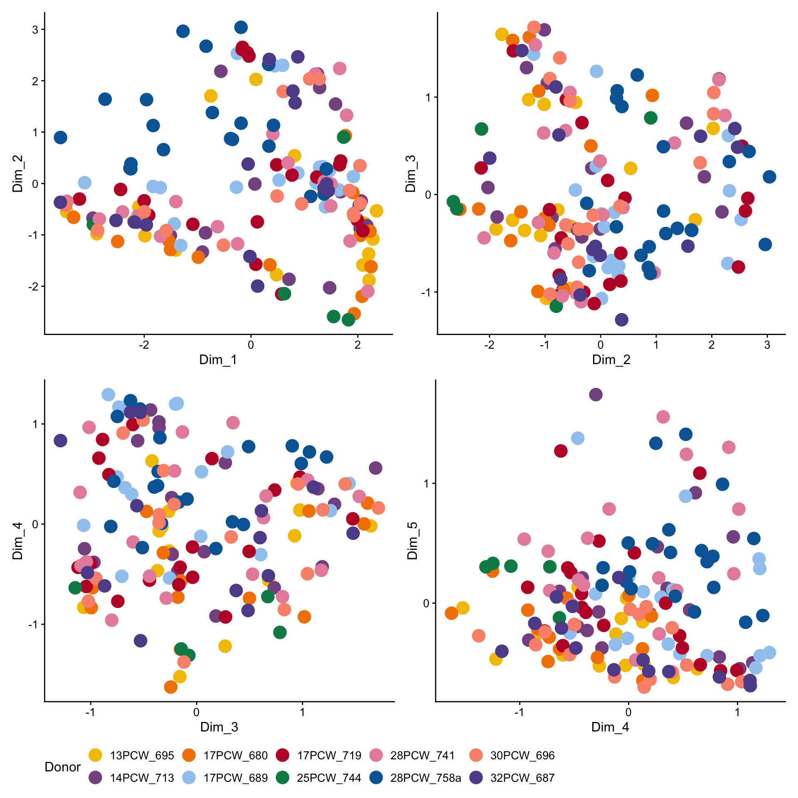
| Version | Author | Date |
|---|---|---|
| 1f4af33 | Calandra Grima | 2026-08-04 |
plotMDS.Dims1_5(MDS.refined_clusters, "Dataset", ALL_DATASETS_COLOURS, makeFactor = T)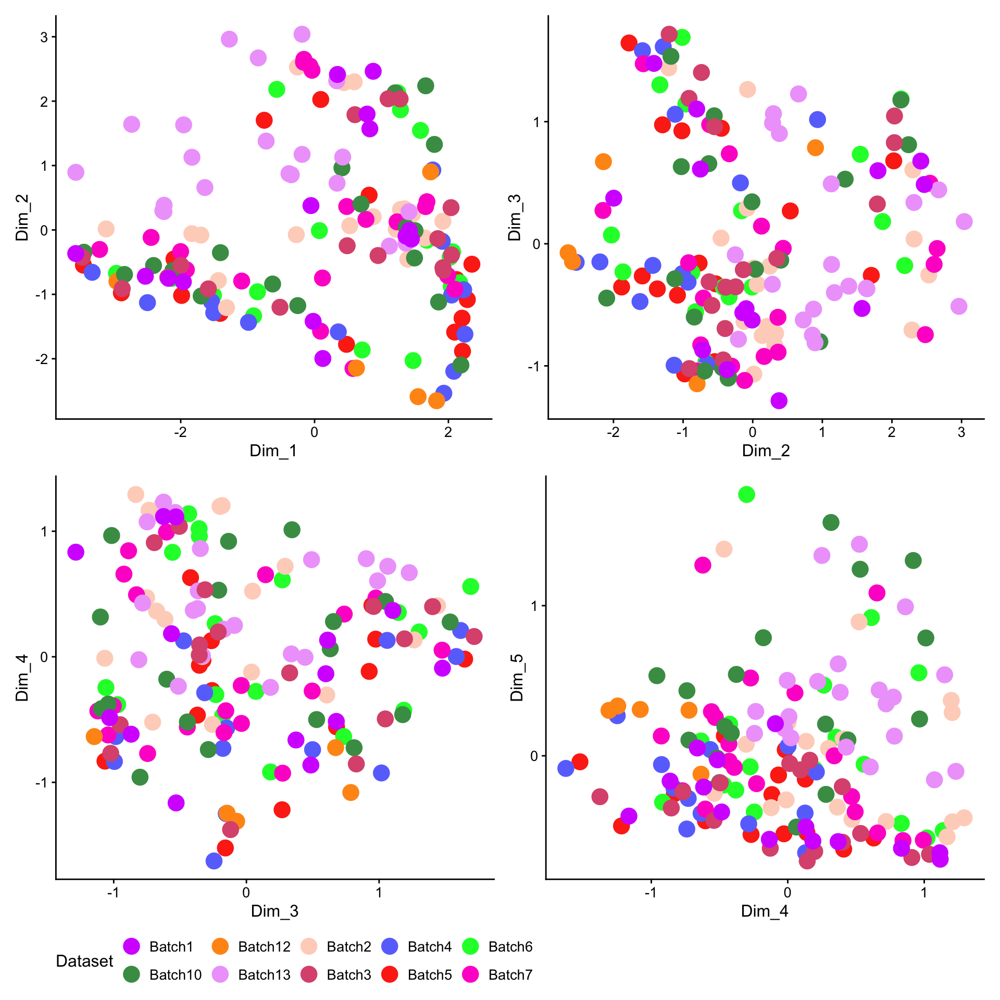
| Version | Author | Date |
|---|---|---|
| 1f4af33 | Calandra Grima | 2026-08-04 |
plotMDS.Dims1_5(MDS.refined_clusters, "foetal_sex", ALL_FOETAL_SEX_COLOURS, makeFactor = T)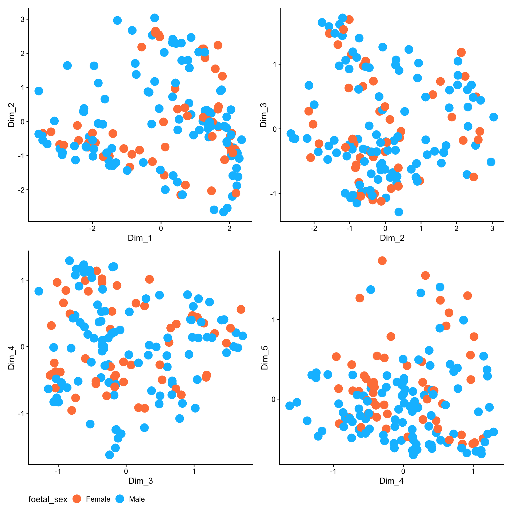
| Version | Author | Date |
|---|---|---|
| 1f4af33 | Calandra Grima | 2026-08-04 |
plotMDS.Dims1_5(MDS.refined_clusters, "gest_age_weeks", makeFactor = TRUE)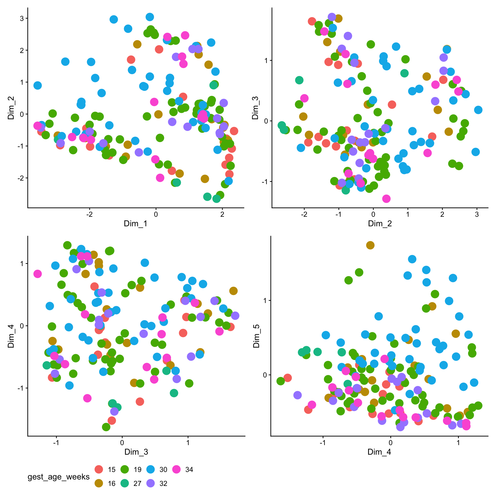
| Version | Author | Date |
|---|---|---|
| 1f4af33 | Calandra Grima | 2026-08-04 |
plotMDS.Dims1_5(MDS.refined_clusters, "early_late_gestation", ALL_GEST_COLOURS)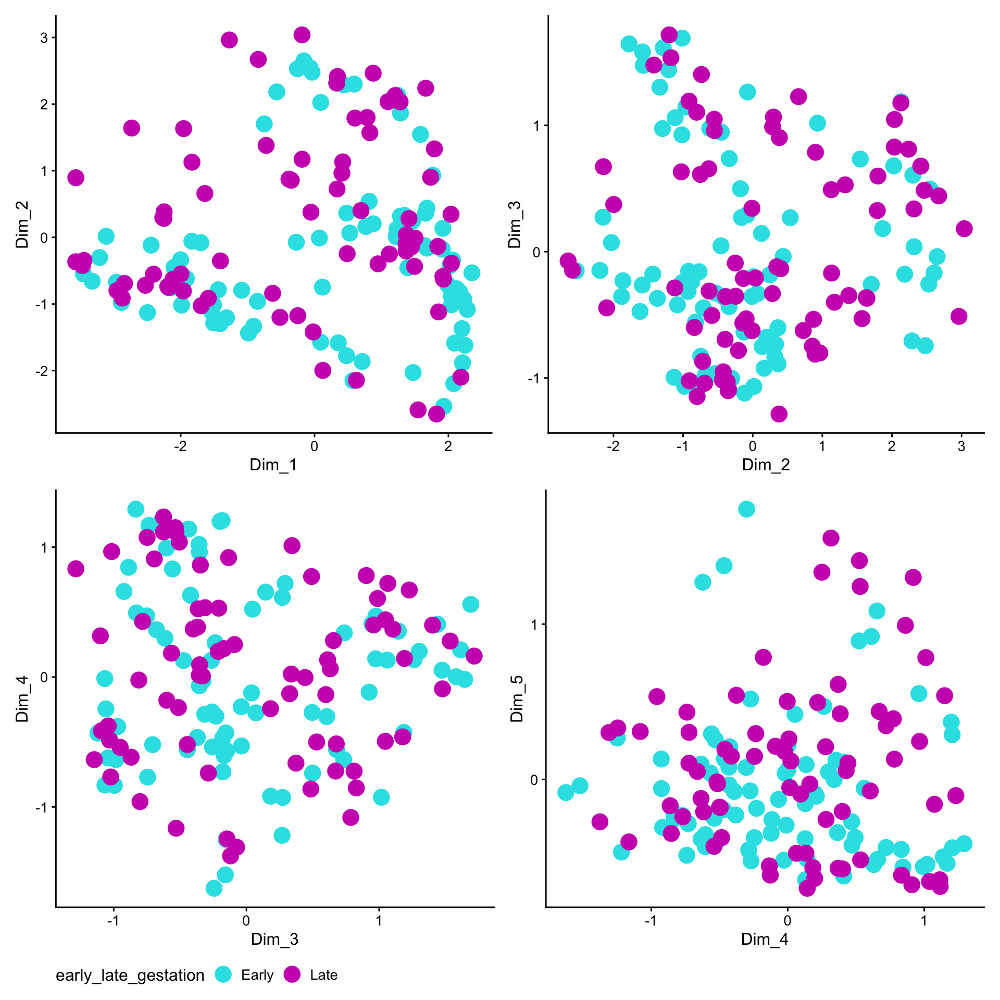
| Version | Author | Date |
|---|---|---|
| 1f4af33 | Calandra Grima | 2026-08-04 |
plotMDS.Dims1_5(MDS.refined_clusters, "cmv_status", makeFactor = TRUE)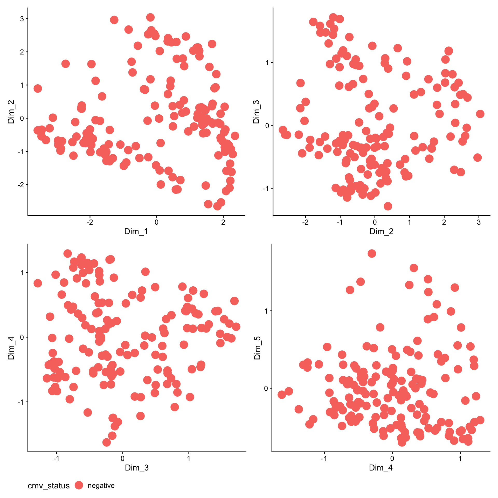
| Version | Author | Date |
|---|---|---|
| 1f4af33 | Calandra Grima | 2026-08-04 |
plotMDS.Dims1_5(MDS.refined_clusters, "n_cells")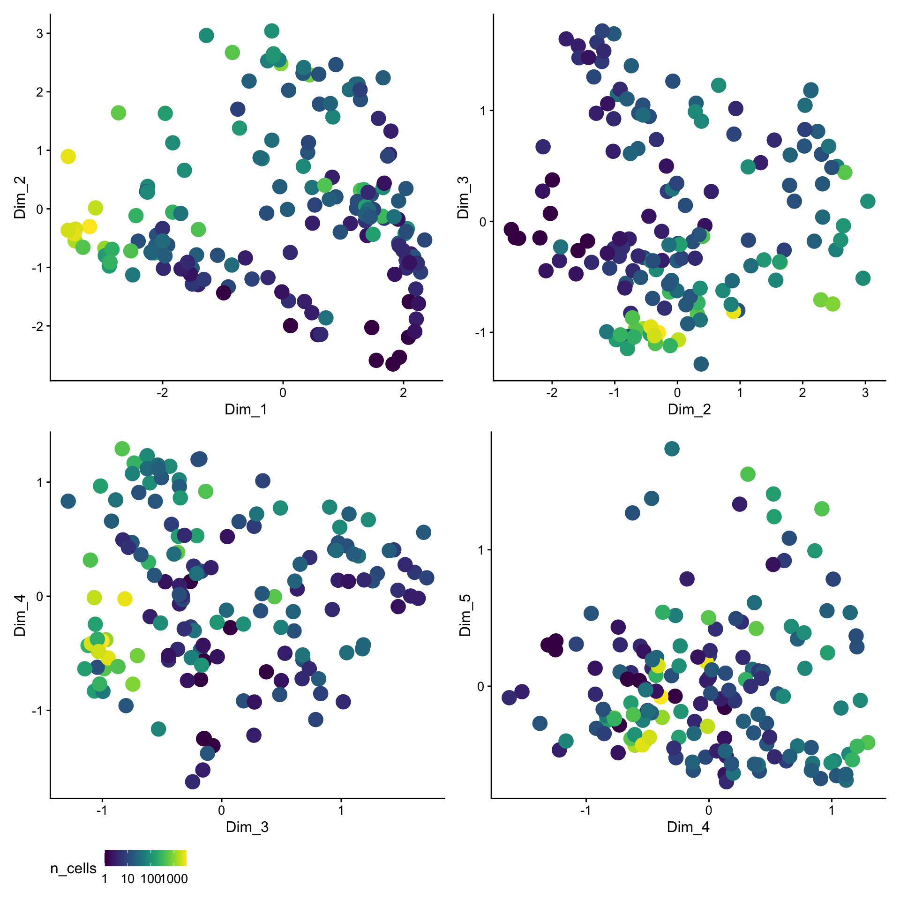
| Version | Author | Date |
|---|---|---|
| 1f4af33 | Calandra Grima | 2026-08-04 |
plotMDS.Dims1_5(MDS.refined_clusters, "refined_clusters", CLUSTER_NAME_COLOURS.GERLI)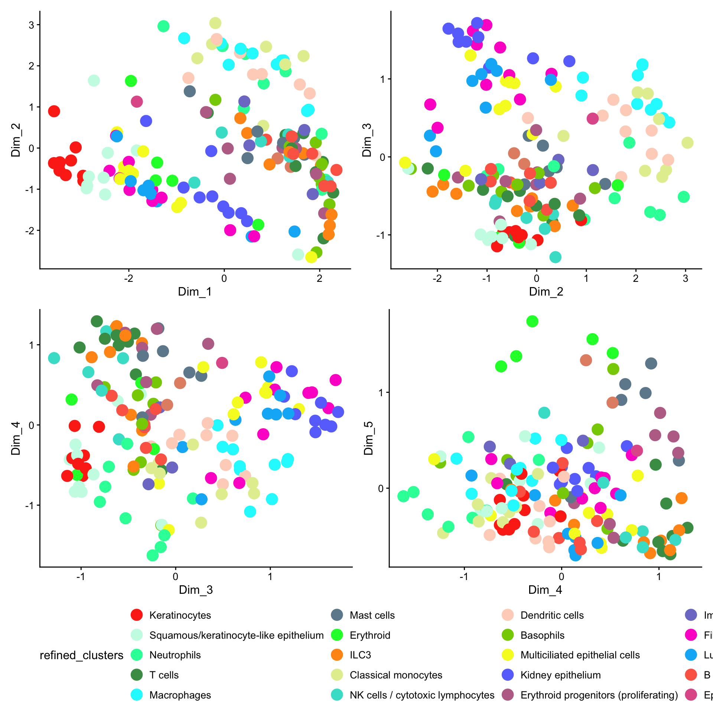
| Version | Author | Date |
|---|---|---|
| 1f4af33 | Calandra Grima | 2026-08-04 |
p1 <- seu_int.Gerli@meta.data %>%
ggplot(aes(x = factor(gest_age_weeks), fill = cluster_names)) +
geom_bar() +
theme_cowplot(12) +
scale_fill_manual(values = CLUSTER_NAME_COLOURS.GERLI) +
no_legend +
ggtitle("Number of cells per cluster by gestational age") +
xlab("Gestational age (weeks)") +
facet_grid(.~seu_int.Gerli$Donor.gest_age, scales = "free", space = "free")
p2 <- seu_int.Gerli@meta.data %>%
ggplot(aes(x = factor(gest_age_weeks), fill = cluster_names)) +
geom_bar(position = "fill") +
theme_cowplot(12) +
scale_fill_manual(values = CLUSTER_NAME_COLOURS.GERLI) +
guides(fill = guide_legend(ncol = 1)) +
ggtitle("Propotion of clusters by gestational age") +
xlab("Gestational age (weeks)") +
facet_grid(.~seu_int.Gerli$Donor.gest_age, scales = "free", space = "free")
p1 + p2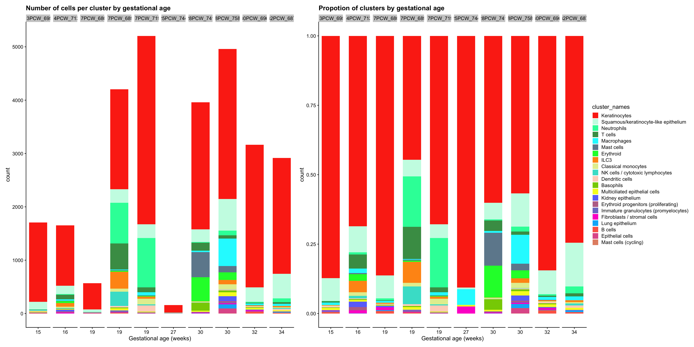
| Version | Author | Date |
|---|---|---|
| 1f4af33 | Calandra Grima | 2026-08-04 |
DimPlot(seu_int.Gerli, reduction = 'umap', group.by = "cluster_names") +
theme_cowplot(14) + blank_axes + no_legend +
scale_colour_manual(values = CLUSTER_NAME_COLOURS.GERLI) +
ggtitle("Refined clusters") -> p1
seu_int.Gerli@meta.data %>%
ggplot(aes(x = factor(gest_age_weeks), fill = cluster_names)) +
geom_bar(position = "fill") +
theme_cowplot(14) +
scale_fill_manual(values = CLUSTER_NAME_COLOURS.GERLI) +
guides(fill = guide_legend(ncol = 1)) +
ggtitle("Refined cluster proportions by sample (ordered by gestational age)") +
xlab("Gestational age (weeks)") + ylab("Proportion") +
facet_grid(.~Donor.gest_age, scales = "free", space = "free") +
labs(fill="Refined cell type\nannotations") -> p2
ggarrange(p1, p2, widths = c(8, 14), ncol = 2, nrow = 1)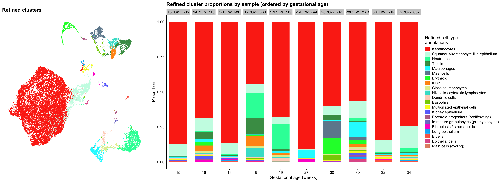
DimPlot(seu_int.Gerli, reduction = 'umap', group.by = "cluster_names",
split.by = "early_late_gestation") +
scale_color_manual(values = CLUSTER_NAME_COLOURS.GERLI) +
theme_bw(base_size = 16) + blank_axes + bottom_legend +
theme(panel.grid.major=element_blank(), panel.grid.minor=element_blank()) +
ggtitle("Clusters") + guides(color=guide_legend(nrow = 3, override.aes = list(size=2)))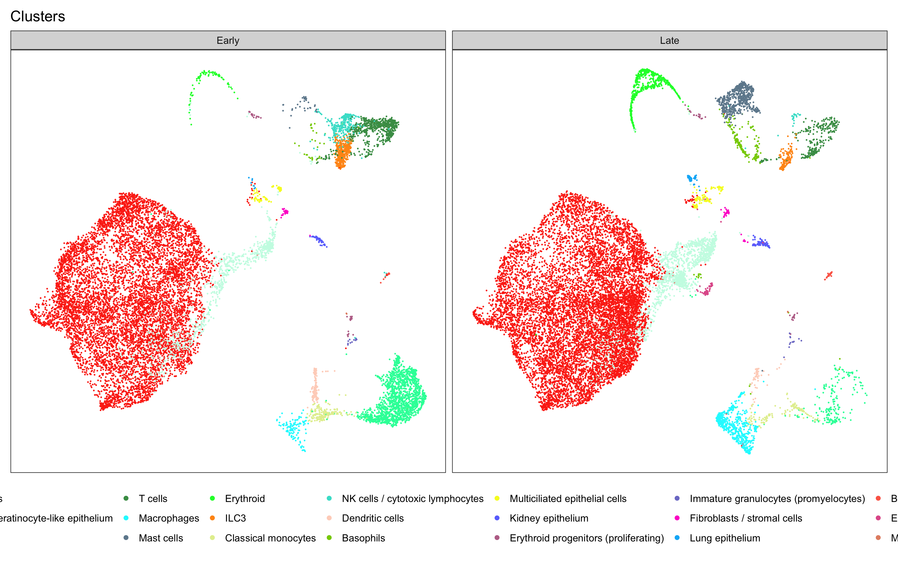
| Version | Author | Date |
|---|---|---|
| 1f4af33 | Calandra Grima | 2026-08-04 |
DimPlot(seu_int.Gerli, reduction = 'umap', group.by = "pan_fetal.majority_voting",
split.by = "early_late_gestation") +
scale_color_manual(values = ALL_CELL_TYPE_COLOURS) +
theme_bw(base_size = 16) + blank_axes + bottom_legend +
theme(panel.grid.major=element_blank(), panel.grid.minor=element_blank()) +
ggtitle("pan_fetal.majority_voting") +
guides(color=guide_legend(nrow = 3, override.aes = list(size=2)))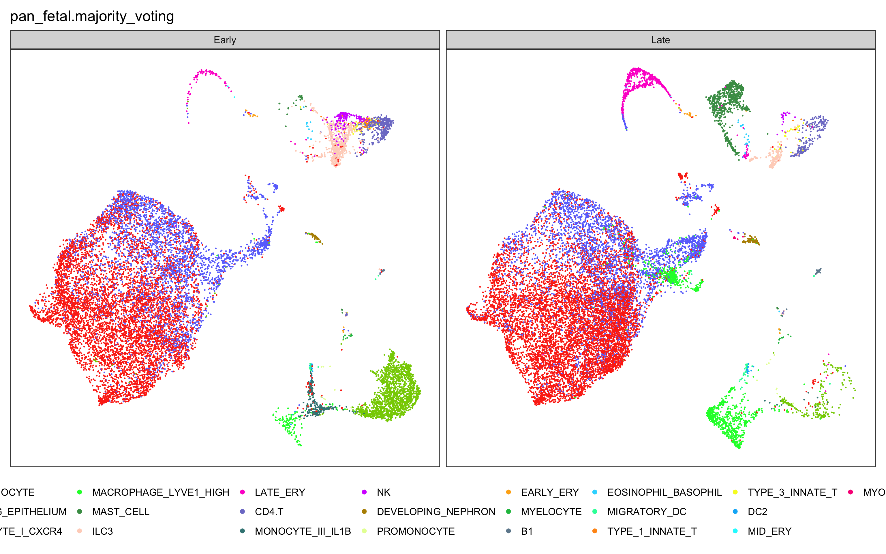
| Version | Author | Date |
|---|---|---|
| 1f4af33 | Calandra Grima | 2026-08-04 |
DimPlot(seu_int.Gerli, reduction = 'umap', group.by = "fetal_organ.majority_voting",
split.by = "early_late_gestation") +
scale_color_manual(values = ALL_CELL_TYPE_COLOURS) +
theme_bw(base_size = 16) + blank_axes + bottom_legend +
theme(panel.grid.major=element_blank(), panel.grid.minor=element_blank()) +
ggtitle("fetal_organ.majority_voting") +
guides(color=guide_legend(nrow = 3, override.aes = list(size=2)))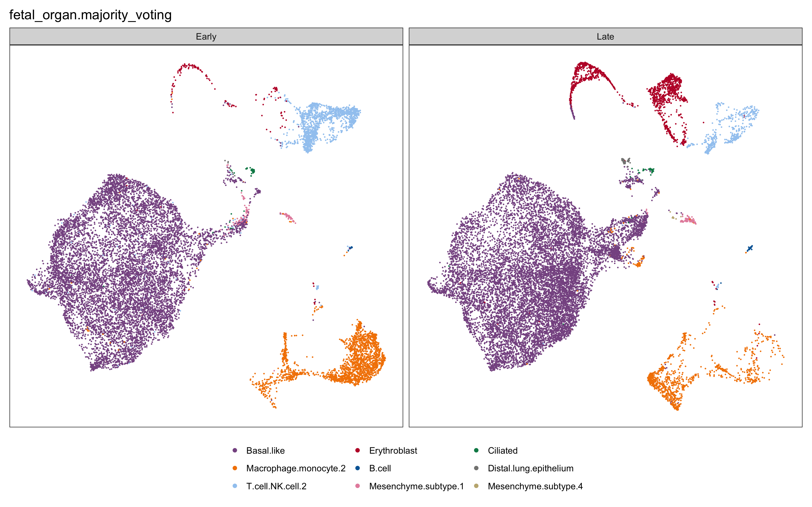
DimPlot(seu_int.Gerli, reduction = 'umap', group.by = "cluster_names",
split.by = "early_late_gestation") +
scale_color_manual(values = CLUSTER_NAME_COLOURS) +
theme_bw(base_size = 16) + blank_axes + bottom_legend +
theme(panel.grid.major=element_blank(), panel.grid.minor=element_blank()) +
ggtitle("Clusters") +
guides(color=guide_legend(nrow = 3, override.aes = list(size=2)))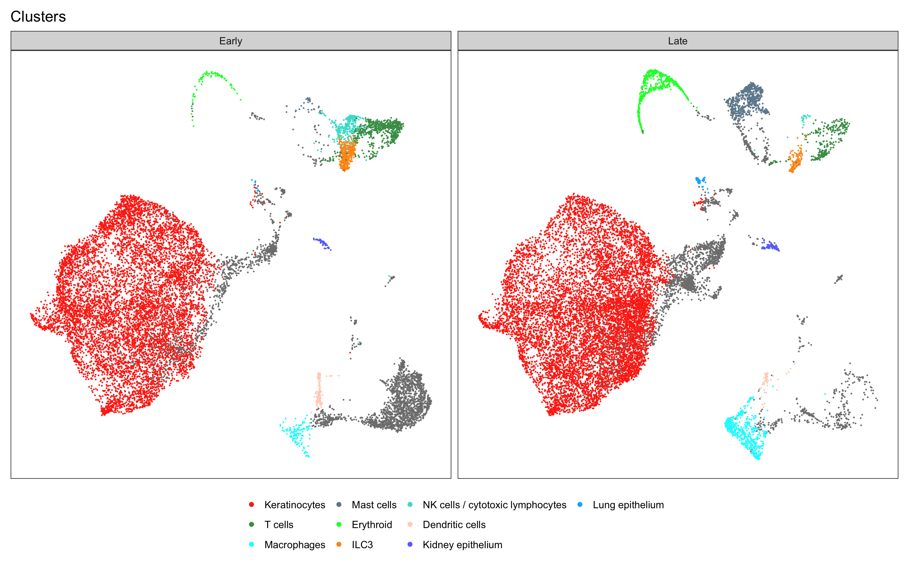
seu_int.Gerli@meta.data %>% ggplot(aes(x = cluster_names, fill = cluster_names)) +
geom_bar() + geom_text(stat='count', aes(label=after_stat(count)), vjust=0.5, hjust = -0.2, angle = 90) +
facet_grid(. ~ early_late_gestation) + theme_bw() + rotate_x_labels +
scale_fill_manual(values = CLUSTER_NAME_COLOURS.GERLI)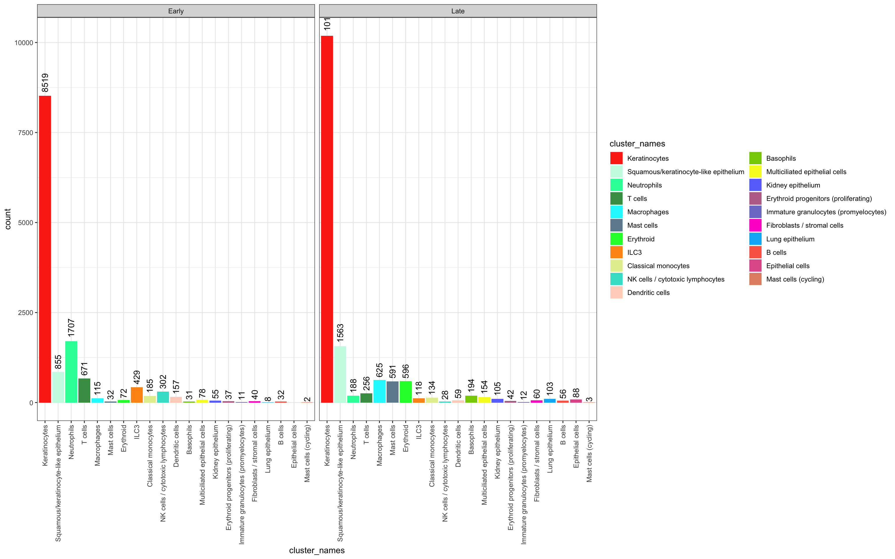
seu_int.Gerli@meta.data %>% ggplot(aes(x = cluster_names, fill = pan_fetal.majority_voting)) +
geom_bar(position = "fill") + facet_grid(. ~ early_late_gestation) + theme_bw() + rotate_x_labels +
scale_fill_manual(values = ALL_CELL_TYPE_COLOURS)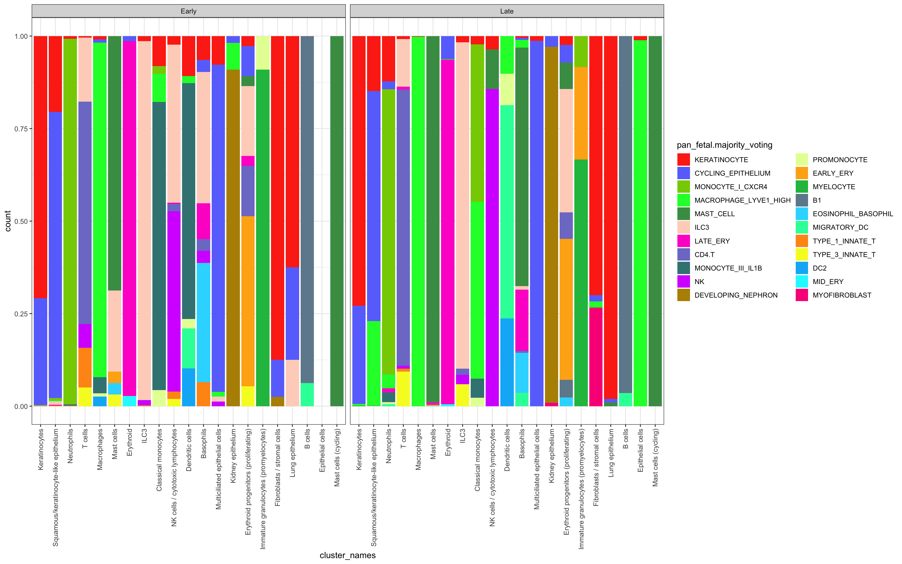
seu_int.Gerli@meta.data %>% ggplot(aes(x = cluster_names, fill = fetal_organ.majority_voting)) +
geom_bar(position = "fill") + facet_grid(. ~ early_late_gestation) + theme_bw() + rotate_x_labels +
scale_fill_manual(values = ALL_CELL_TYPE_COLOURS)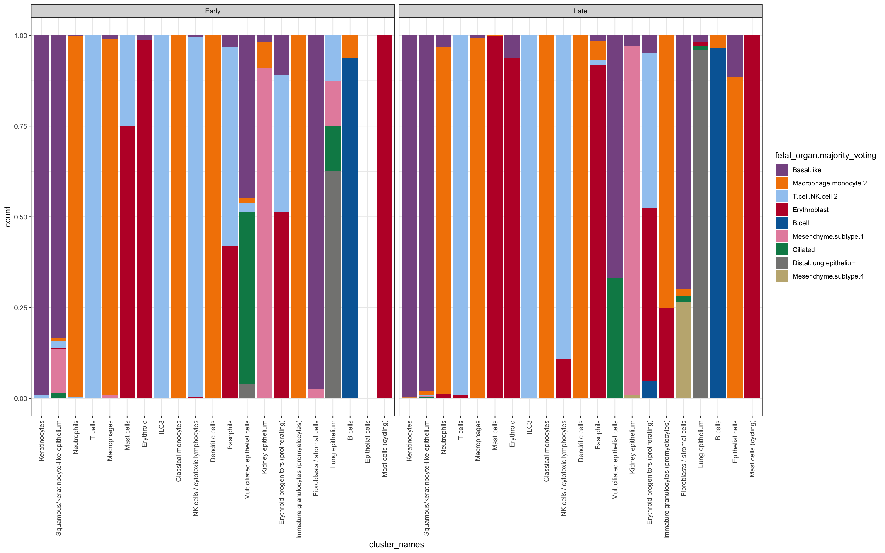
| Version | Author | Date |
|---|---|---|
| 1f4af33 | Calandra Grima | 2026-08-04 |
sccomp
to examine cluster proportion changes across gestational age# Set it manually so the sccomp functions know where to look
cache_stan_model_dir <- here("renv/library/macos/R-4.5/aarch64-apple-darwin20/sccomp/stan")
# Set the cache directory before any sccomp call (sccomp_boxplot, sccomp_estimate, etc.
# use internal functions that check this cache)
utils::assignInNamespace("sccomp_stan_models_cache_dir", cache_stan_model_dir, ns = "sccomp")set.seed(100)
# Fit the sccomp model
# Tests for differences in refined cluster proportions between Early and Late gestation
# Outlier removal is included for robustness
sccomp_result <- seu_int.Gerli |>
sccomp_estimate(
formula_composition = ~ early_late_gestation,
sample = "Donor",
cell_group = "cluster_names",
abundance = "n",
bimodal_mean_variability_association = TRUE,
cores = 8,
verbose = FALSE
) |>
sccomp_remove_outliers(cores = 8, verbose = FALSE) |>
sccomp_test()sccomp says: count column is an integer. The sum-constrained beta binomial model will be usedsccomp says: estimationsccomp says: the composition design matrix has columns: (Intercept), early_late_gestationLatesccomp says: the variability design matrix has columns: (Intercept)Loading model from cache...sccomp says: to do hypothesis testing run `sccomp_test()`,
the `test_composition_above_logit_fold_change` = 0.1 equates to a change of ~10%, and
0.7 equates to ~100% increase, if the baseline is ~0.1 proportion.
Use `sccomp_proportional_fold_change` to convert c_effect (linear) to proportion difference (non-linear).Loading model from cache...Running standalone generated quantities after 1 MCMC chain, with 8 thread(s) per chain...
Chain 1 Elapsed Time: 0.688 seconds (Generated Quantities)
Chain 1 finished in 0.0 seconds.sccomp says: outlier identification - step 1/2
Loading model from cache...Running standalone generated quantities after 1 MCMC chain, with 8 thread(s) per chain...
Chain 1 Elapsed Time: 1.679 seconds (Generated Quantities)
Chain 1 finished in 0.0 seconds.sccomp says: outlier-free model fitting - step 2/2sccomp says: the composition design matrix has columns: (Intercept), early_late_gestationLatesccomp says: the variability design matrix has columns: (Intercept)Loading model from cache...# View the full results table
# Key columns:
# c_effect : estimated log-fold change in proportion (Late vs Early)
# c_pH0 : posterior probability of no effect (lower = more evidence of change)
# c_FDR : false discovery rate
sccomp_resultsccomp model
============
Model specifications:
Family: multi_beta_binomial
Composition formula: ~early_late_gestation
Variability formula: ~1
Inference method: pathfinder
Data: Samples: 10 Cell groups: 21
Column prefixes: c_ -> composition parameters v_ -> variability parameters
Convergence diagnostics:
For each parameter, n_eff is the effective sample size and R_k_hat is the potential
scale reduction factor on split chains (at convergence, R_k_hat = 1).
# A tibble: 42 × 19
cluster_names parameter factor c_lower c_effect c_upper c_pH0 c_FDR c_rhat
<chr> <chr> <chr> <dbl> <dbl> <dbl> <dbl> <dbl> <dbl>
1 B cells (Interce… <NA> -1.27 -0.708 -0.124 0.0215 0.00715 1.00
2 B cells early_la… early… -0.842 -0.269 0.311 0.266 0.172 1.00
3 Basophils (Interce… <NA> -1.46 -0.842 -0.0258 0.0347 0.0117 1.04
4 Basophils early_la… early… -1.03 -0.359 0.230 0.188 0.133 1.03
5 Classical mo… (Interce… <NA> -0.625 -0.140 0.372 0.436 0.142 1.00
6 Classical mo… early_la… early… -0.633 -0.0687 0.472 0.544 0.245 1.00
7 Dendritic ce… (Interce… <NA> -0.798 -0.273 0.267 0.255 0.0866 1.00
8 Dendritic ce… early_la… early… -0.962 -0.382 0.166 0.147 0.107 1.00
9 Epithelial c… (Interce… <NA> -1.83 -0.0578 0.957 0.532 0.183 1.01
10 Epithelial c… early_la… early… -0.141 0.494 1.18 0.114 0.09 1.00
# ℹ 32 more rows
# ℹ 10 more variables: c_ess_bulk <dbl>, c_ess_tail <dbl>, v_lower <dbl>,
# v_effect <dbl>, v_upper <dbl>, v_pH0 <dbl>, v_FDR <dbl>, v_rhat <dbl>,
# v_ess_bulk <dbl>, v_ess_tail <dbl>saveRDS(sccomp_result, here("data", "Gerli_et_al_2024", "Gerli_et_al_2024.sccomp_result.rds"))# Significant clusters (FDR < 0.05)
sccomp_result %>%
filter(parameter == "early_late_gestationLate",
c_FDR < 0.05) %>%
arrange(c_FDR)sccomp model
============
Model specifications:
Family: multi_beta_binomial
Composition formula: ~early_late_gestation
Variability formula: ~1
Inference method: pathfinder
Data: Samples: 10 Cell groups: 21
Column prefixes: c_ -> composition parameters v_ -> variability parameters
Convergence diagnostics:
For each parameter, n_eff is the effective sample size and R_k_hat is the potential
scale reduction factor on split chains (at convergence, R_k_hat = 1).
# A tibble: 0 × 19
# ℹ 19 variables: cluster_names <chr>, parameter <chr>, factor <chr>,
# c_lower <dbl>, c_effect <dbl>, c_upper <dbl>, c_pH0 <dbl>, c_FDR <dbl>,
# c_rhat <dbl>, c_ess_bulk <dbl>, c_ess_tail <dbl>, v_lower <dbl>,
# v_effect <dbl>, v_upper <dbl>, v_pH0 <dbl>, v_FDR <dbl>, v_rhat <dbl>,
# v_ess_bulk <dbl>, v_ess_tail <dbl># Boxplot: cluster proportions split by gestational age group
sccomp_result |>
sccomp_boxplot(factor = "early_late_gestation") +
theme_bw() +
ggtitle("Refined cluster proportions by gestational age group (Early vs Late)")sccomp says: When visualising proportions, especially for complex models, consider setting `remove_unwanted_effects=TRUE`. This will adjust the proportions, preserving only the observed effect.Loading model from cache...Running standalone generated quantities after 1 MCMC chain, with 1 thread(s) per chain...
Chain 1 Elapsed Time: 0.017 seconds (Generated Quantities)
Chain 1 finished in 0.0 seconds.Joining with `by = join_by(cluster_names, Donor)`Joining with `by = join_by(cluster_names, early_late_gestation)`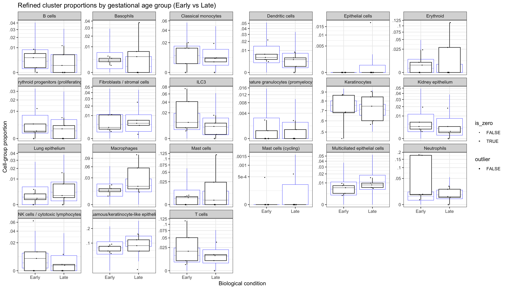
prop_df <- generateGroupProportionsDF(seu_int.Gerli, group_var = "cluster_names")ggplot(prop_df, aes(x = early_late_gestation, y = proportion_cluster)) +
geom_boxplot(aes(fill = early_late_gestation, color = early_late_gestation),
alpha = 0.5) + geom_jitter() + theme_bw() +
facet_wrap(. ~ cluster_names, scale = "free_y") +
scale_colour_manual(values = ALL_GEST_COLOURS) +
scale_fill_manual(values = ALL_GEST_COLOURS) + no_legend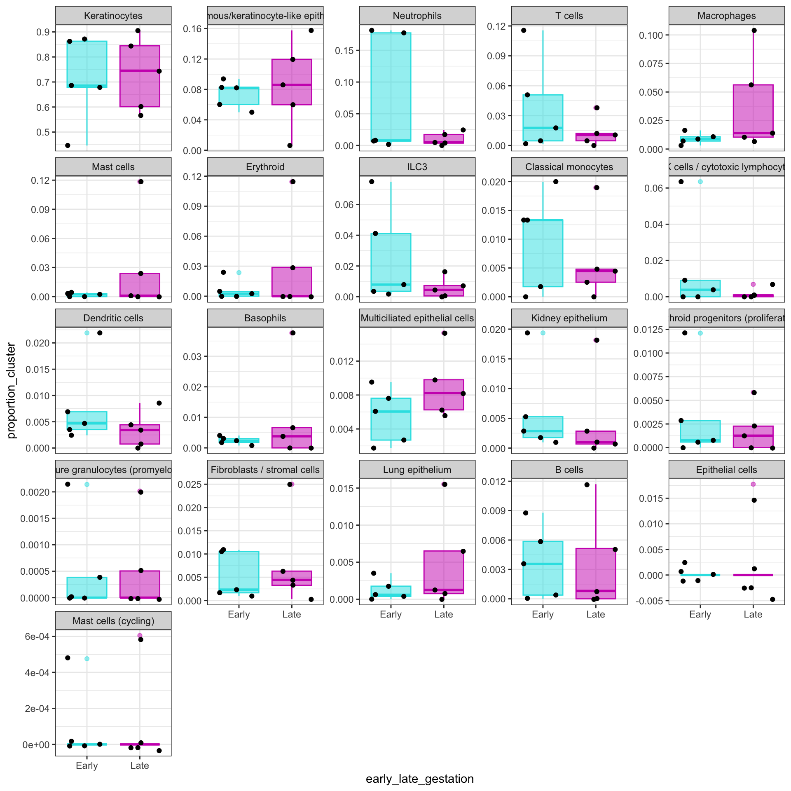
# 1D credible interval plot: effect of gestational age on each cluster
# Clusters whose interval does not cross 0 are significantly different
sccomp_result |>
plot_1D_intervals() +
theme_cowplot(12) +
ggtitle("Effect of gestational age (Late vs Early) on cluster proportions")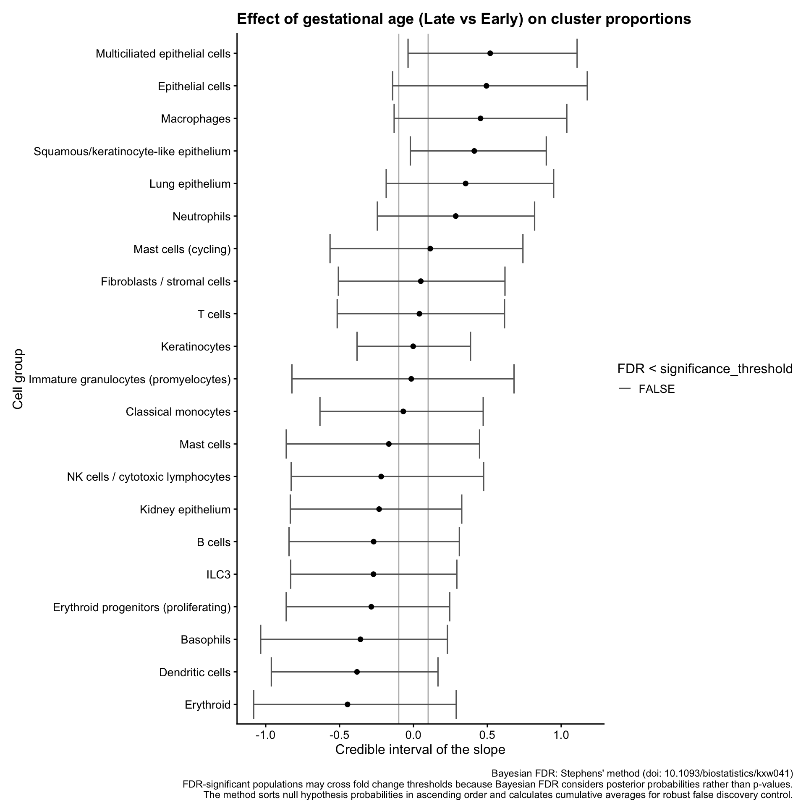
# 2D credible interval plot: mean-variability association
# Use this to confirm the bimodal mean-variability assumption is appropriate
# for single-cell RNA-seq data (as recommended in the sccomp vignette)
sccomp_result |>
plot_2D_intervals()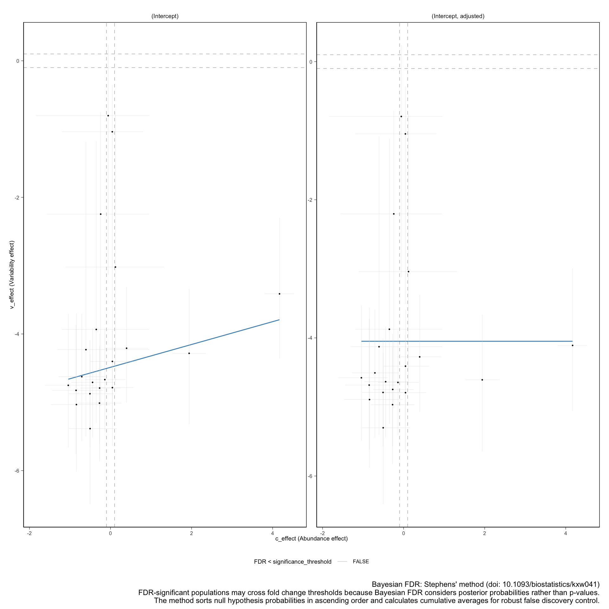
sessioninfo::session_info()─ Session info ───────────────────────────────────────────────────────────────
setting value
version R version 4.5.0 (2025-04-11)
os macOS 26.6.2
system aarch64, darwin20
ui X11
language (EN)
collate en_US.UTF-8
ctype en_US.UTF-8
tz Australia/Melbourne
date 2026-09-16
pandoc 3.10 @ /Applications/RStudio.app/Contents/Resources/app/quarto/bin/tools/aarch64/ (via rmarkdown)
quarto 1.10.18 @ /Applications/RStudio.app/Contents/Resources/app/quarto/bin/quarto
─ Packages ───────────────────────────────────────────────────────────────────
! package * version date (UTC) lib source
P abind 1.4-8 2024-09-12 [?] RSPM
backports 1.5.0 2024-05-23 [1] RSPM (R 4.5.0)
P beachmat 2.26.0 2025-10-29 [?] Bioconduc~
P beeswarm 0.4.0 2021-06-01 [?] RSPM
P Biobase * 2.70.0 2025-10-29 [?] Bioconduc~
P BiocGenerics * 0.56.0 2025-10-29 [?] Bioconduc~
P BiocManager 1.30.27 2025-11-14 [?] RSPM
P BiocNeighbors 2.4.0 2025-10-29 [?] Bioconduc~
P BiocParallel 1.44.0 2025-10-29 [?] Bioconduc~
P BiocSingular 1.26.1 2025-11-17 [?] Bioconduc~
P bluster 1.20.0 2025-10-29 [?] Bioconduc~
P bslib 0.10.0 2026-01-26 [?] RSPM
P cachem 1.1.0 2024-05-16 [?] RSPM
P callr 3.7.6 2024-03-25 [?] CRAN (R 4.5.0)
P checkmate 2.3.3 2025-08-18 [?] RSPM
P cli 3.6.6 2026-04-09 [?] RSPM
P cluster 2.1.8.1 2025-03-12 [?] CRAN (R 4.5.0)
P cmdstanr 0.9.0 2025-03-30 [?] https://stan-dev.r-universe.dev (R 4.5.3)
P codetools 0.2-20 2024-03-31 [?] CRAN (R 4.5.0)
colorspace 2.1-2 2025-09-22 [1] RSPM (R 4.5.0)
P cowplot * 1.2.0 2025-07-07 [?] RSPM
P crayon 1.5.3 2024-06-20 [?] RSPM
P data.table 1.18.2.1 2026-01-27 [?] RSPM
DelayedArray 0.36.1 2026-03-31 [1] https://bioc-release.r-universe.dev (R 4.5.3)
P deldir 2.0-4 2024-02-28 [?] RSPM
P digest 0.6.39 2025-11-19 [?] RSPM
P distributional 0.6.0 2026-01-14 [?] RSPM
dplyr * 1.2.0 2026-02-03 [1] RSPM (R 4.5.0)
P dqrng 0.4.1 2024-05-28 [?] CRAN (R 4.5.0)
P edgeR * 4.8.2 2025-12-23 [?] https://bioc-release.r-universe.dev (R 4.5.2)
P egg * 0.4.5 2019-07-13 [?] RSPM
P evaluate 1.0.5 2025-08-27 [?] RSPM
P farver 2.1.2 2024-05-13 [?] RSPM
P fastmap 1.2.0 2024-05-15 [?] RSPM
P fitdistrplus 1.2-6 2026-01-24 [?] RSPM
P forcats * 1.0.1 2025-09-25 [?] RSPM
P fs 2.1.0 2026-04-18 [?] RSPM
P future 1.69.0 2026-01-16 [?] RSPM
P future.apply 1.20.1 2025-12-09 [?] RSPM
P generics * 0.1.4 2025-05-09 [?] CRAN (R 4.5.0)
P GenomicRanges * 1.62.1 2025-12-08 [?] Bioconduc~
P getPass 0.2-4 2023-12-10 [?] CRAN (R 4.5.0)
P ggalluvial * 0.12.5 2023-02-22 [?] RSPM
P ggbeeswarm * 0.7.3 2025-11-29 [?] RSPM
P ggplot2 * 4.0.2 2026-02-03 [?] RSPM
P ggrepel * 0.9.6 2024-09-07 [?] CRAN (R 4.5.0)
P ggridges 0.5.7 2025-08-27 [?] RSPM
P git2r 0.36.2 2025-03-29 [?] CRAN (R 4.5.0)
P globals 0.19.0 2026-02-02 [?] RSPM
P glue 1.8.0 2024-09-30 [?] RSPM
P goftest 1.2-3 2021-10-07 [?] CRAN (R 4.5.0)
P gridExtra * 2.3 2017-09-09 [?] RSPM
P gtable 0.3.6 2024-10-25 [?] RSPM
P here * 1.0.2 2025-09-15 [?] RSPM
P hms 1.1.4 2025-10-17 [?] RSPM
P htmltools 0.5.9 2025-12-04 [?] RSPM
P htmlwidgets 1.6.4 2023-12-06 [?] RSPM
P httpuv 1.6.16 2025-04-16 [?] CRAN (R 4.5.0)
P httr 1.4.7 2023-08-15 [?] RSPM
P ica 1.0-3 2022-07-08 [?] CRAN (R 4.5.0)
P igraph 2.2.1 2025-10-27 [?] RSPM
instantiate * 0.2.3 2024-10-02 [1] RSPM (R 4.5.0)
P IRanges * 2.44.0 2025-10-29 [?] Bioconduc~
P irlba 2.3.7 2026-01-30 [?] RSPM
P jquerylib 0.1.4 2021-04-26 [?] RSPM
P jsonlite 2.0.0 2025-03-27 [?] RSPM
P KernSmooth 2.23-26 2025-01-01 [?] CRAN (R 4.5.0)
P knitr 1.51 2025-12-20 [?] RSPM
P labeling 0.4.3 2023-08-29 [?] RSPM
P later 1.4.5 2026-01-08 [?] RSPM
P lattice 0.22-7 2025-04-02 [?] RSPM
P lazyeval 0.2.2 2019-03-15 [?] RSPM
leiden 0.4.3.1 2023-11-17 [1] RSPM (R 4.5.0)
P lifecycle 1.0.5 2026-01-08 [?] RSPM
P limma * 3.66.0 2025-10-29 [?] Bioconduc~
P listenv 0.10.0 2025-11-02 [?] RSPM
P lmtest 0.9-40 2022-03-21 [?] CRAN (R 4.5.0)
P locfit 1.5-9.12 2025-03-05 [?] RSPM
P lubridate * 1.9.4 2024-12-08 [?] RSPM
P magrittr 2.0.4 2025-09-12 [?] RSPM
P MASS 7.3-65 2025-02-28 [?] CRAN (R 4.5.0)
P Matrix 1.7-4 2025-08-28 [?] RSPM
P MatrixGenerics * 1.22.0 2025-10-29 [?] Bioconduc~
P matrixStats * 1.5.0 2025-01-07 [?] RSPM
P metapod 1.18.0 2025-10-29 [?] Bioconduc~
P mime 0.13 2025-03-17 [?] RSPM
P miniUI 0.1.2 2025-04-17 [?] CRAN (R 4.5.0)
P nlme 3.1-168 2025-03-31 [?] CRAN (R 4.5.0)
P otel 0.2.0 2025-08-29 [?] RSPM
P parallelly 1.46.1 2026-01-08 [?] RSPM
P patchwork * 1.3.2 2025-08-25 [?] RSPM
P pbapply 1.7-4 2025-07-20 [?] RSPM
P pillar 1.11.1 2025-09-17 [?] RSPM
P pkgconfig 2.0.3 2019-09-22 [?] RSPM
P plotly 4.12.0 2026-01-24 [?] RSPM
P plyr 1.8.9 2023-10-02 [?] RSPM
P png 0.1-8 2022-11-29 [?] RSPM
P Polychrome * 1.5.4 2025-04-06 [?] RSPM
P polyclip 1.10-7 2024-07-23 [?] CRAN (R 4.5.0)
P posterior 1.6.1 2025-02-27 [?] RSPM
P processx 3.8.6 2025-02-21 [?] CRAN (R 4.5.0)
P progressr 0.18.0 2025-11-06 [?] RSPM
P promises 1.5.0 2025-11-01 [?] RSPM
P ps 1.9.1 2025-04-12 [?] CRAN (R 4.5.0)
P purrr * 1.2.1 2026-01-09 [?] RSPM
P R6 2.6.1 2025-02-15 [?] RSPM
P RANN 2.6.2 2024-08-25 [?] CRAN (R 4.5.0)
P RColorBrewer 1.1-3 2022-04-03 [?] RSPM
P Rcpp 1.1.1 2026-01-10 [?] RSPM
P RcppAnnoy 0.0.23 2026-01-12 [?] RSPM
P readr * 2.1.6 2025-11-14 [?] RSPM
P renv 1.1.7 2026-01-27 [?] RSPM
P reshape2 * 1.4.5 2025-11-12 [?] RSPM
P reticulate 1.44.1 2025-11-14 [?] RSPM
P rlang 1.2.0 2026-04-06 [?] RSPM
P rmarkdown 2.30 2025-09-28 [?] RSPM
P ROCR 1.0-12 2026-01-23 [?] RSPM
P rprojroot 2.1.1 2025-08-26 [?] RSPM
P rstudioapi 0.18.0 2026-01-16 [?] RSPM
P rsvd 1.0.5 2021-04-16 [?] RSPM
P Rtsne 0.17 2023-12-07 [?] CRAN (R 4.5.0)
P S4Arrays 1.10.1 2025-12-08 [?] Bioconduc~
S4Vectors * 0.48.1 2026-04-04 [1] https://bioc-release.r-universe.dev (R 4.5.3)
P S7 0.2.1 2025-11-14 [?] RSPM
P sass 0.4.10 2025-04-11 [?] RSPM
P ScaledMatrix 1.18.0 2025-10-29 [?] Bioconduc~
P scales 1.4.0 2025-04-24 [?] RSPM
P scattermore 1.2 2023-06-12 [?] CRAN (R 4.5.0)
P scatterplot3d 0.3-44 2023-05-05 [?] RSPM
P sccomp * 2.2.0 2025-10-29 [?] https://bioc-release.r-universe.dev (R 4.5.2)
P scran * 1.38.0 2025-10-29 [?] Bioconduc~
P sctransform 0.4.3 2026-01-10 [?] RSPM
P scuttle * 1.20.0 2025-10-29 [?] Bioconduc~
P Seqinfo * 1.0.0 2025-10-29 [?] Bioconduc~
P sessioninfo * 1.2.3 2025-02-05 [?] RSPM
Seurat * 4.4.0 2024-01-10 [1] https://satijalab.r-universe.dev (R 4.5.0)
SeuratObject * 4.1.4 2023-09-27 [1] https://satijalab.r-universe.dev (R 4.5.0)
P shiny 1.12.1 2025-12-09 [?] RSPM
P SingleCellExperiment * 1.32.0 2025-10-29 [?] Bioconduc~
P sp 2.2-0 2025-02-01 [?] CRAN (R 4.5.0)
P SparseArray 1.10.8 2025-12-18 [?] Bioconduc~
P spatstat.data 3.1-9 2025-10-18 [?] RSPM
P spatstat.explore 3.7-0 2026-01-22 [?] RSPM
P spatstat.geom 3.7-0 2026-01-20 [?] RSPM
P spatstat.random 3.4-4 2026-01-21 [?] RSPM
P spatstat.sparse 3.1-0 2024-06-21 [?] CRAN (R 4.5.0)
P spatstat.univar 3.1-6 2026-01-17 [?] RSPM
P spatstat.utils 3.2-1 2026-01-10 [?] RSPM
P statmod 1.5.1 2025-10-09 [?] RSPM
P stringi 1.8.7 2025-03-27 [?] RSPM
P stringr * 1.6.0 2025-11-04 [?] RSPM
P SummarizedExperiment * 1.40.0 2025-10-29 [?] Bioconduc~
P survival 3.8-6 2026-01-16 [?] RSPM
P tensor 1.5.1 2025-06-17 [?] RSPM
P tensorA 0.36.2.1 2023-12-13 [?] RSPM
P tibble * 3.3.1 2026-01-11 [?] RSPM
P tidyr * 1.3.2 2025-12-19 [?] RSPM
P tidyselect 1.2.1 2024-03-11 [?] RSPM
P tidyverse * 2.0.0 2023-02-22 [?] RSPM
P timechange 0.4.0 2026-01-29 [?] RSPM
P tzdb 0.5.0 2025-03-15 [?] RSPM
P utf8 1.2.6 2025-06-08 [?] RSPM
P uwot 0.2.4 2025-11-10 [?] RSPM
P vctrs 0.7.1 2026-01-23 [?] RSPM
P vipor 0.4.7 2023-12-18 [?] RSPM
P viridis * 0.6.5 2024-01-29 [?] RSPM
P viridisLite * 0.4.2 2023-05-02 [?] RSPM
P whisker 0.4.1 2022-12-05 [?] CRAN (R 4.5.0)
P withr 3.0.2 2024-10-28 [?] RSPM
P workflowr * 1.7.2 2025-08-18 [?] RSPM
P xfun 0.56 2026-01-18 [?] RSPM
P xtable 1.8-4 2019-04-21 [?] RSPM
P XVector 0.50.0 2025-10-29 [?] Bioconduc~
P yaml 2.3.12 2025-12-10 [?] RSPM
P zoo 1.8-15 2025-12-15 [?] RSPM
[1] <project>/renv/library/macos/R-4.5/aarch64-apple-darwin20
[2] <renv-cache>/sandbox/macos/R-4.5/aarch64-apple-darwin20/4cd76b74
* ── Packages attached to the search path.
P ── Loaded and on-disk path mismatch.
──────────────────────────────────────────────────────────────────────────────
sessionInfo()R version 4.5.0 (2025-04-11)
Platform: aarch64-apple-darwin20
Running under: macOS 26.6.2
Matrix products: default
BLAS: /Library/Frameworks/R.framework/Versions/4.5-arm64/Resources/lib/libRblas.0.dylib
LAPACK: /Library/Frameworks/R.framework/Versions/4.5-arm64/Resources/lib/libRlapack.dylib; LAPACK version 3.12.1
locale:
[1] en_US.UTF-8/en_US.UTF-8/en_US.UTF-8/C/en_US.UTF-8/en_US.UTF-8
time zone: Australia/Melbourne
tzcode source: internal
attached base packages:
[1] stats4 stats graphics grDevices datasets utils methods
[8] base
other attached packages:
[1] scran_1.38.0 scuttle_1.20.0
[3] SingleCellExperiment_1.32.0 SummarizedExperiment_1.40.0
[5] Biobase_2.70.0 GenomicRanges_1.62.1
[7] Seqinfo_1.0.0 IRanges_2.44.0
[9] S4Vectors_0.48.1 BiocGenerics_0.56.0
[11] generics_0.1.4 MatrixGenerics_1.22.0
[13] matrixStats_1.5.0 viridis_0.6.5
[15] viridisLite_0.4.2 reshape2_1.4.5
[17] ggalluvial_0.12.5 sessioninfo_1.2.3
[19] here_1.0.2 lubridate_1.9.4
[21] forcats_1.0.1 purrr_1.2.1
[23] readr_2.1.6 tidyr_1.3.2
[25] tibble_3.3.1 tidyverse_2.0.0
[27] dplyr_1.2.0 Polychrome_1.5.4
[29] egg_0.4.5 gridExtra_2.3
[31] patchwork_1.3.2 cowplot_1.2.0
[33] ggbeeswarm_0.7.3 ggrepel_0.9.6
[35] ggplot2_4.0.2 stringr_1.6.0
[37] edgeR_4.8.2 limma_3.66.0
[39] sccomp_2.2.0 instantiate_0.2.3
[41] SeuratObject_4.1.4 Seurat_4.4.0
[43] workflowr_1.7.2
loaded via a namespace (and not attached):
[1] RcppAnnoy_0.0.23 splines_4.5.0 later_1.4.5
[4] polyclip_1.10-7 lifecycle_1.0.5 rprojroot_2.1.1
[7] globals_0.19.0 processx_3.8.6 lattice_0.22-7
[10] MASS_7.3-65 backports_1.5.0 magrittr_2.0.4
[13] plotly_4.12.0 sass_0.4.10 rmarkdown_2.30
[16] jquerylib_0.1.4 yaml_2.3.12 metapod_1.18.0
[19] httpuv_1.6.16 otel_0.2.0 sctransform_0.4.3
[22] sp_2.2-0 spatstat.sparse_3.1-0 reticulate_1.44.1
[25] pbapply_1.7-4 RColorBrewer_1.1-3 abind_1.4-8
[28] Rtsne_0.17 tensorA_0.36.2.1 git2r_0.36.2
[31] irlba_2.3.7 listenv_0.10.0 spatstat.utils_3.2-1
[34] goftest_1.2-3 dqrng_0.4.1 spatstat.random_3.4-4
[37] fitdistrplus_1.2-6 parallelly_1.46.1 leiden_0.4.3.1
[40] codetools_0.2-20 DelayedArray_0.36.1 tidyselect_1.2.1
[43] farver_2.1.2 ScaledMatrix_1.18.0 spatstat.explore_3.7-0
[46] jsonlite_2.0.0 BiocNeighbors_2.4.0 progressr_0.18.0
[49] ggridges_0.5.7 survival_3.8-6 tools_4.5.0
[52] ica_1.0-3 Rcpp_1.1.1 glue_1.8.0
[55] SparseArray_1.10.8 xfun_0.56 distributional_0.6.0
[58] cmdstanr_0.9.0 withr_3.0.2 BiocManager_1.30.27
[61] fastmap_1.2.0 bluster_1.20.0 rsvd_1.0.5
[64] callr_3.7.6 digest_0.6.39 timechange_0.4.0
[67] R6_2.6.1 mime_0.13 colorspace_2.1-2
[70] scattermore_1.2 tensor_1.5.1 spatstat.data_3.1-9
[73] utf8_1.2.6 renv_1.1.7 data.table_1.18.2.1
[76] httr_1.4.7 htmlwidgets_1.6.4 S4Arrays_1.10.1
[79] scatterplot3d_0.3-44 whisker_0.4.1 uwot_0.2.4
[82] pkgconfig_2.0.3 gtable_0.3.6 lmtest_0.9-40
[85] S7_0.2.1 XVector_0.50.0 htmltools_0.5.9
[88] scales_1.4.0 posterior_1.6.1 png_0.1-8
[91] spatstat.univar_3.1-6 knitr_1.51 rstudioapi_0.18.0
[94] tzdb_0.5.0 checkmate_2.3.3 nlme_3.1-168
[97] cachem_1.1.0 zoo_1.8-15 KernSmooth_2.23-26
[100] parallel_4.5.0 miniUI_0.1.2 vipor_0.4.7
[103] pillar_1.11.1 grid_4.5.0 vctrs_0.7.1
[106] RANN_2.6.2 promises_1.5.0 BiocSingular_1.26.1
[109] beachmat_2.26.0 xtable_1.8-4 cluster_2.1.8.1
[112] beeswarm_0.4.0 evaluate_1.0.5 cli_3.6.6
[115] locfit_1.5-9.12 compiler_4.5.0 rlang_1.2.0
[118] crayon_1.5.3 future.apply_1.20.1 labeling_0.4.3
[121] ps_1.9.1 getPass_0.2-4 plyr_1.8.9
[124] fs_2.1.0 stringi_1.8.7 BiocParallel_1.44.0
[127] deldir_2.0-4 lazyeval_0.2.2 spatstat.geom_3.7-0
[130] Matrix_1.7-4 hms_1.1.4 future_1.69.0
[133] statmod_1.5.1 shiny_1.12.1 ROCR_1.0-12
[136] igraph_2.2.1 bslib_0.10.0